為什麼需要非線性分類器：XOR 問題
▼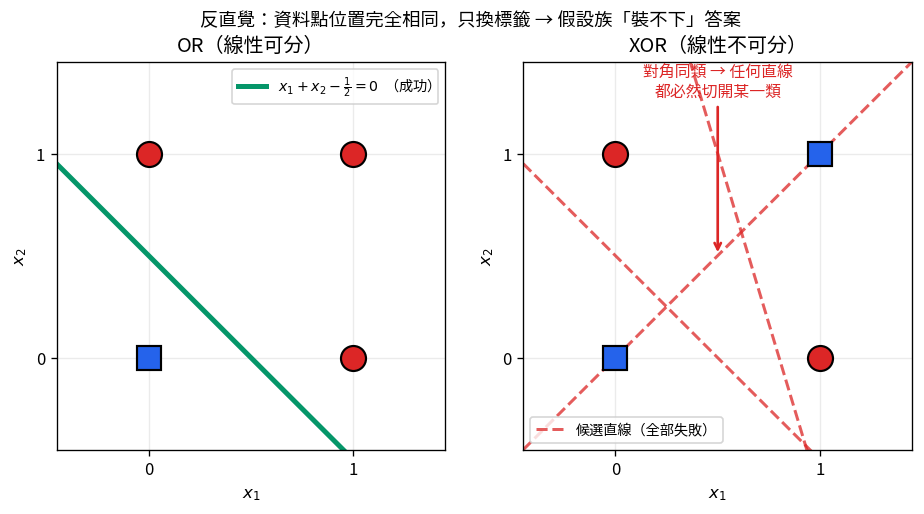
🤖 AI 生圖可用：重繪此示意圖的提示詞（結構化）
WHAT: A two-panel educational chart. Both panels show the SAME four points at the corners of a unit square (0,0),(0,1),(1,0),(1,1). Panel 1 (OR): three corners are red circles, one is a blue square, and ONE solid green straight line cleanly separates them. Panel 2 (XOR): the two diagonal corners (0,1),(1,0) are red circles and the other diagonal (0,0),(1,1) are blue squares; THREE different dashed red candidate lines are drawn, and each one visibly leaves one point on the wrong side. WHY: The reader must see that the point POSITIONS are identical in both panels — only the labels changed — and that this alone destroys linear separability. The failure is a property of the hypothesis class, not of noise or of the amount of data. MUST show: (1) identical point coordinates in both panels; (2) one successful separating line in panel 1; (3) at least three failing candidate lines in panel 2, each with a visibly misclassified point; (4) a "diagonal-same-class" visual cue. AVOID: showing only one candidate line in the XOR panel; changing point positions between panels; adding a curved boundary (that would defeat the point). STYLE: flat vector, clean scientific plot, white background, red/blue/green palette.
一句話
只要把四個點的標籤換一種配法，線性分類器就徹底失效——這就是 XOR 給我們的當頭棒喝。
是什麼
布林函數可以看成分類問題。輸入 $\boldsymbol{x}=[x_1,x_2]^T$ 取 0/1，輸出 0/1 就是兩個類別 $B(0)$、$A(1)$。AND 與 OR 的四個點都能被一條直線切開；但 XOR 的 $[0,1]$ 與 $[1,0]$ 屬於 A，$[0,0]$ 與 $[1,1]$ 屬於 B——兩個 A 點在對角線兩端，兩個 B 點也在對角線兩端，任何一條直線都必然把某一類切成兩半。
| $x_1$ | $x_2$ | XOR | 類別 |
|---|---|---|---|
| 0 | 0 | 0 | B |
| 0 | 1 | 1 | A |
| 1 | 0 | 1 | A |
| 1 | 1 | 0 | B |
為什麼重要：第 3 章的線性分類器（感知器、最小平方）在「線性可分」時很漂亮，在「不可分」時即使做到最佳化也不會令人滿意。注意反直覺處：這裡不是資料太少、雜訊太大、或最佳化沒收斂——是假設族（hypothesis class）本身裝不下這個答案。再多資料、再好的演算法都救不了。
怎麼記：AND / OR 的四個點是「三個一國、一個孤立」，一刀可切；XOR 是「對角同國」，一刀切不開。想突破，就得從幾何下手：一條線不夠，那就畫兩條。
怎麼用：整章的主線就是從 XOR 出發，一路推廣到「一般的非線性可分問題」——多層感知器、廣義線性分類器、核方法、決策樹、分類器結合，全部都是同一個問題的不同解法。
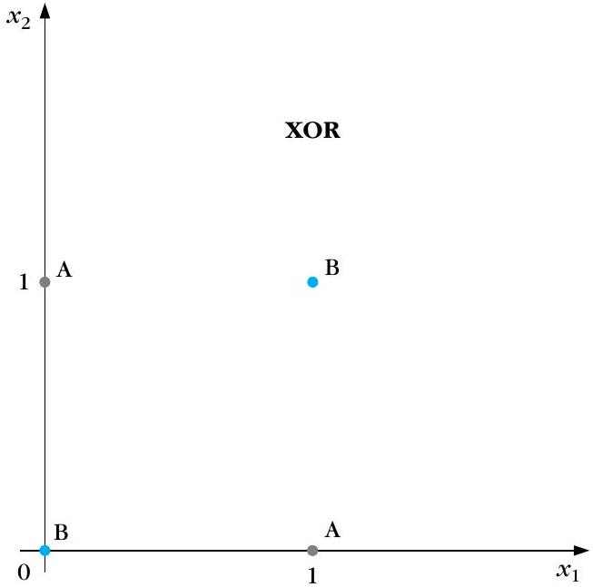
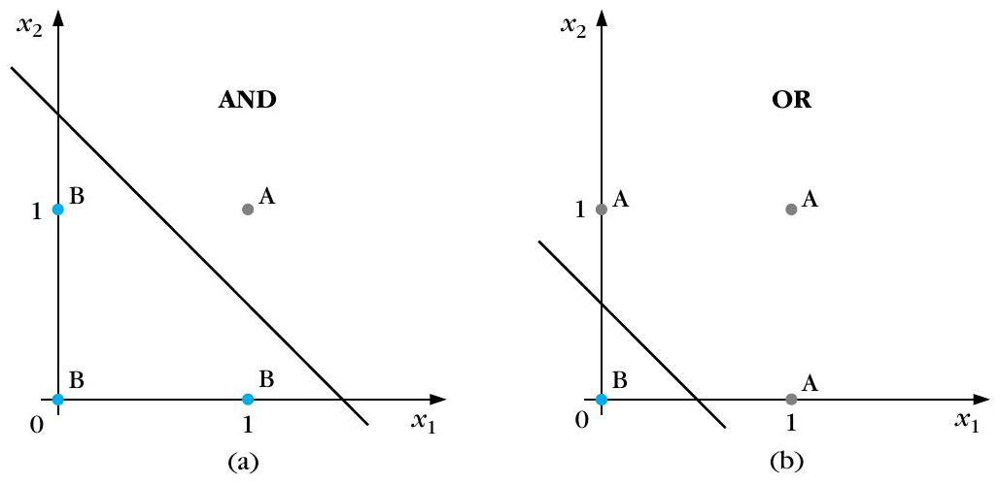
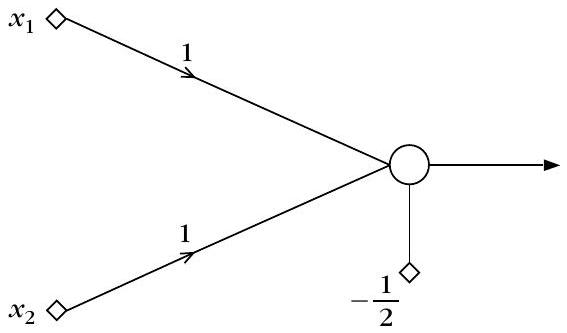
🎯 互動實驗：XOR 線性不可分性驗證
這在做什麼：驗證單一線性判別超平面 $g(\boldsymbol{x}) = w_1 x_1 + w_2 x_2 + w_0 = 0$ 無法解決 XOR 邏輯分類問題。
怎麼操作：拖曳下方三個滑桿調整權重係數 $w_1, w_2$ 及偏置 $w_0$，即時旋轉與平移決策直線。
觀察什麼：觀察 4 個輸入點 $(0,0), (0,1), (1,0), (1,1)$ 分布於直線兩側的情況。無論如何微調參數，誤分類數恆大於等於 1（永遠無法為 0）。
理論基準：XOR 真值表要求 $g(0,1)>0, g(1,0)>0 \implies w_1+w_2+2w_0>0$；同時要求 $g(0,0)\le 0, g(1,1)\le 0 \implies w_1+w_2+2w_0\le 0$。兩者產生代數矛盾，故線性不可分。
❓ 自我檢測：XOR 之所以不能被單一超平面分開，根本原因是什麼？
❓ 自我檢測：下列哪一個布林函數是線性可分的？
兩層感知器：用兩條線把「不可分」摺成「可分」
▼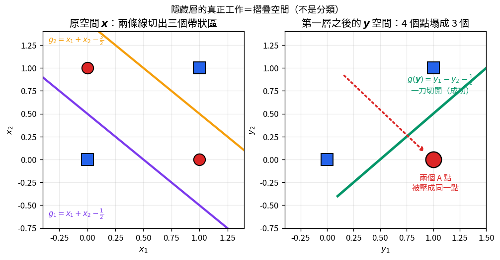
🤖 AI 生圖可用：重繪此示意圖的提示詞（結構化）
WHAT: Two side-by-side coordinate planes joined by a mapping arrow. LEFT: the four XOR points with two PARALLEL straight lines cutting the plane into three bands. RIGHT: the image of those four points after the hidden layer, where the two class-A points have COLLAPSED ONTO A SINGLE POINT (draw it as one oversized marker with two faint ghost markers merging into it), and a single green line now separates cleanly. WHY: The reader must grasp that the hidden layer does not classify — it FOLDS the space. Two points that were far apart in the input become the same point in the new space, and that collapse is exactly what makes the problem linearly separable. MUST show: (1) two parallel lines in the input space; (2) an explicit merge/fold arrow from two input points into one output point; (3) the count 4 points -> 3 points; (4) a single successful line in the right panel. AVOID: drawing the hidden layer as a box-and-arrow network diagram; showing the right panel with four distinct points; any curved decision boundary. STYLE: flat vector, two clean coordinate planes, white background, purple/orange/green.
一句話
第一層畫兩條線做「相對位置編碼」，第二層再對編碼結果畫一條線——空間被摺疊了。
是什麼
對 XOR 畫兩條平行線 $$ g_1(\boldsymbol{x})=x_1+x_2-\tfrac{1}{2}=0,\qquad g_2(\boldsymbol{x})=x_1+x_2-\tfrac{3}{2}=0 $$ 每條線用一個感知器實現，輸出 $y_i=f(g_i(\boldsymbol{x}))$，$f(\cdot)$ 是 0/1 階梯函數。這叫第一階段：算出 $\boldsymbol{x}$ 相對於兩條線的位置。
| $x_1$ | $x_2$ | $y_1$ | $y_2$ | 第二階段 |
|---|---|---|---|---|
| 0 | 0 | 0 (−) | 0 (−) | B (0) |
| 0 | 1 | 1 (+) | 0 (−) | A (1) |
| 1 | 0 | 1 (+) | 0 (−) | A (1) |
| 1 | 1 | 1 (+) | 1 (+) | B (0) |
反直覺的關鍵：原本相隔最遠的兩個 B 點 $[0,0]$ 與 $[1,1]$，在 $\boldsymbol{y}$ 空間變成 $[0,0]$ 與 $[1,1]$——仍在對角？不，兩個 A 點 $[0,1]$ 與 $[1,0]$ 被壓成同一點 $[1,0]$！四個點塌成三個點，於是第三條線 $$ g(\boldsymbol{y})=y_1-y_2-\tfrac{1}{2}=0 $$ 就切得開了。第一層真正做的事不是「分類」，而是把輸入空間摺疊/重新編碼，讓下游變成線性問題。
怎麼用：第一層 2 個神經元叫隱藏層（hidden layer），第二層 1 個神經元叫輸出層；輸入層只是接資料的節點、不做運算，節點數 = 輸入維度。這個架構叫兩層感知器（two-layer perceptron，也叫兩層前饋神經網路）——層數只算有運算的層。
怎麼記：一層畫線、下一層看「在線的哪一邊」。非線性不是來自畫更彎的線，而是來自階段性的重新表示。
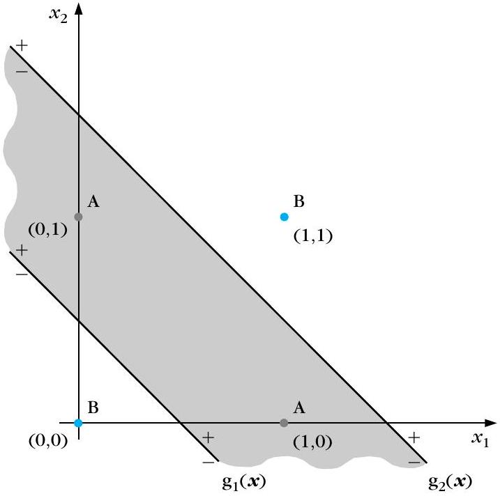
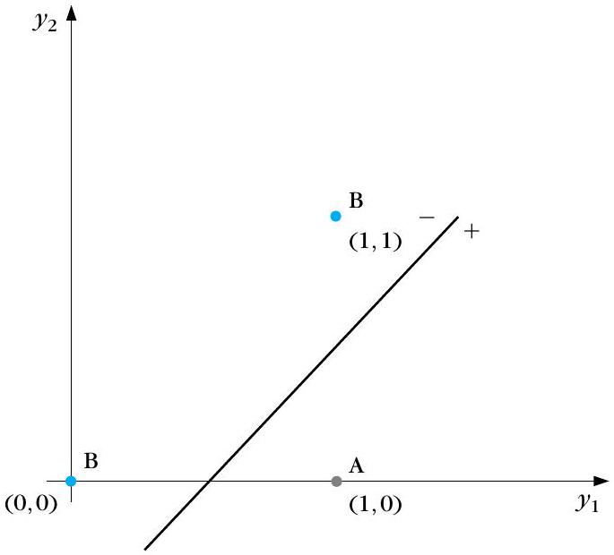
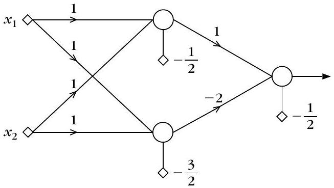
🎯 互動實驗：兩層感知器與特徵空間「摺疊映射」
這在做什麼：展示第一層隱藏神經元如何將線性不可分的 XOR 樣本「摺疊映射」至二維隱藏空間 $(y_1, y_2)$，使輸出層得以用一條直線完美分離兩類。
怎麼操作：可點擊「課本標準解」，或拖曳滑桿調整隱藏層直線閾值 $w_{10}, w_{20}$ 及輸出層閾值 $v_0$。
觀察什麼：觀察左側原始空間 $(x_1, x_2)$ 的兩個類別 A 樣本 $(0,1)$ 與 $(1,0)$ 如何在右側隱藏空間被「摺疊壓縮」映射到同一個坐標 $(1,0)$，使得原本夾在中間的異類點分離，右側輸出直線一刀切開！
理論基準：隱藏層 $y_1 = f(x_1+x_2-0.5), y_2 = f(x_1+x_2-1.5)$，輸出層 $g(\boldsymbol{y}) = y_1 - y_2 - 0.5 = 0$。對 $(0,1)$ 與 $(1,0)$ 均輸出 $g = +0.5 > 0$（判 A），對 $(0,0)$ 與 $(1,1)$ 均輸出 $g = -0.5 \le 0$（判 B）。
❓ 自我檢測：兩層感知器解 XOR 時，隱藏層真正的作用是什麼？
❓ 自我檢測：「兩層感知器」的兩層指的是？
兩層感知器能分什麼：多面體 → 超立方體頂點
▼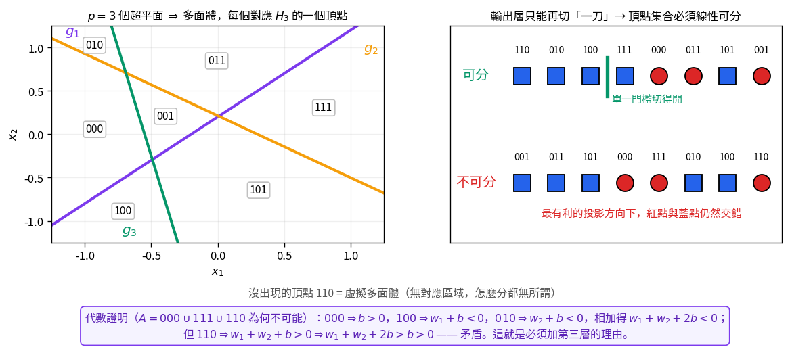
🤖 AI 生圖可用：重繪此示意圖的提示詞（結構化）
WHAT: Two panels. LEFT: three straight lines crossing a 2-D plane, with every resulting polygonal region labelled by its 3-bit sign code (000, 001, 011, ...). RIGHT: two horizontal "number lines", each showing the eight cube vertices as coloured markers ordered by their projection value. The top line is cleanly split by a single green threshold bar (separable); the bottom line has red and blue markers INTERLEAVED so no threshold works. WHY: The reader must see that the output neuron can only place ONE threshold along one direction, so the vertex set must be linearly separable — and that some vertex sets are algebraically impossible to split, which is the exact reason a third layer is needed. MUST show: (1) 3-bit codes attached to actual regions; (2) at least one bit-code that never appears (virtual polyhedron), called out; (3) a separable ordering vs an interleaved ordering, side by side. AVOID: drawing a 3-D cube in perspective (it hides the interleaving); showing only the separable case; unlabeled regions. STYLE: flat vector, scientific plot, white background, purple/orange/green/red/blue.
一句話
第一層把空間切成多面體，每個多面體被送到單位超立方體的一個頂點；輸出層只能再切一刀。
是什麼
把隱藏層推廣到 $p$ 個神經元、輸入 $\boldsymbol{x}\in\mathcal{R}^l$。每個隱藏神經元造一個超平面，輸出 0 或 1（在哪一側）。於是 $\boldsymbol{y}=[y_1,\dots,y_p]^T$ 落在單位超立方體 $$ H_p=\{[y_1,\dots,y_p]^T\in\mathcal{R}^p,\ y_i\in[0,1],\ 1\le i\le p\} $$ 的頂點上。$p$ 個超平面把 $\mathcal{R}^l$ 切成一堆多面體（polyhedra），同一個多面體裡的所有向量被映射到同一個頂點。
例子
二維空間三條線 $g_1,g_2,g_3$，區域「$g_1$ 負側、$g_2$ 負側、$g_3$ 正側」就對應頂點 001。輸出神經元再造一個超平面把 $H_3$ 的頂點切成兩半，例如平面 $-y_1-y_2+y_3+0.5=0$ 可以把 $\{000,001,011\}$ 和 $\{010,100,110,111\}$ 分開。
反直覺處（兩個）
- 能力有上限：若 A 類是 $000\cup111\cup110$，這三個頂點在立方體上的位置不線性可分，單一輸出神經元就做不到。所以兩層感知器能分「多面體的聯集」，但不是任意聯集——一切取決於那些頂點在 $H_p$ 上是否線性可分。
- 虛擬多面體（virtual polyhedra）：頂點 101 可能不對應任何實際區域。這種頂點怎麼分都無所謂，不影響分類結果。
怎麼記
第一層 = 畫超平面、第二層 = 在超立方體上再切一刀。要突破「一刀」的限制，就得再加一層（下一個知識點）。
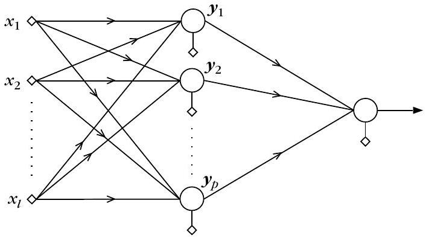
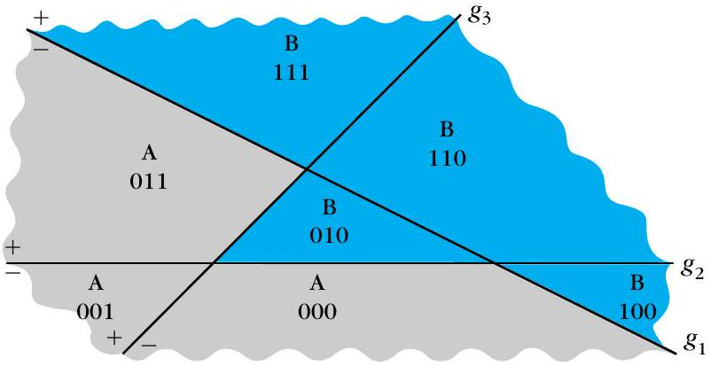
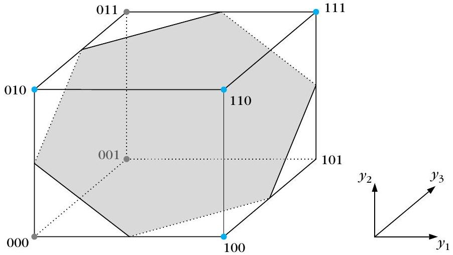
🎯 互動實驗：半平面交集與多面體決策區域合成
這在做什麼：探索多層感知器的幾何能力——第一隱藏層的超平面（直線）透過 AND 邏輯交集形成任意凸多邊形；再透過下一層的 OR 邏輯聯集合成任意非凸與不連通決策區域。
怎麼操作：切換預設形狀（三角形、凸四邊形、正五邊形、非凸 XOR 雙區域），或調整各直線超平面的法向角度 $\theta_i$ 與距離 $d_i$。
觀察什麼：觀察綠色可行區域（決策面內部）如何隨著各條超平面的移動與轉動而即時變化。單層隱藏層（AND）只能圍出「凸」區域；要做出「挖洞」或「兩塊分離區域」必須使用兩層隱藏層（AND + OR）。
理論基準：凸多面體由 $K$ 個半空間交集構成：$R = \bigcap_{i=1}^K \{\boldsymbol{x} : \boldsymbol{w}_i^T\boldsymbol{x}+w_{i0}\ge 0\}$。任意非凸區域可表示為若干凸區域之聯集：$R = \bigcup_{j=1}^M R_j$。
❓ 自我檢測：兩層感知器（單一輸出神經元）的分類能力極限是什麼？
❓ 自我檢測：什麼是「虛擬多面體」？
三層感知器：任意多面體聯集都能分
▼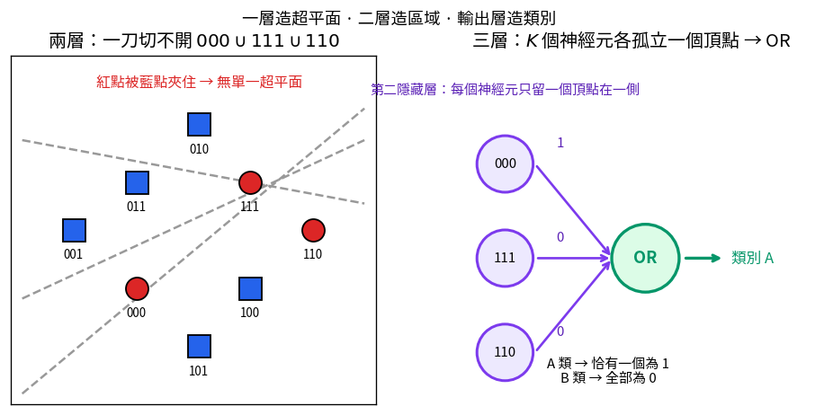
🤖 AI 生圖可用：重繪此示意圖的提示詞（結構化）
WHAT: Two panels. LEFT: eight cube-vertex labels arranged in 2-D, with the class-A ones (000, 111, 110) visually surrounded/trapped by class-B ones, plus several failed dashed candidate lines. RIGHT: three circles in the second hidden layer, each labelled with one isolated vertex, each with an arrow carrying a 1 or 0 into a single OR gate that outputs "class A". WHY: The reader must see the mechanism: each second-layer neuron fires for exactly one A-region, so for any class-A input exactly one of them outputs 1 and for class-B inputs all output 0 — which makes the final step a trivial OR. MUST show: (1) the failing single-hyperplane case on the left; (2) exactly one "1" and the rest "0" on the arrows into the OR gate; (3) the slogan layer1=hyperplanes, layer2=regions, output=classes. AVOID: a generic three-layer neural-network schematic with no vertex labels or 1/0 values. STYLE: flat vector, clean, white background, purple/green accents.
一句話
第二隱藏層每個神經元「孤立一個頂點」，輸出層當一個 OR 閘——於是任意聯集都搞得定。
建構式證明（很優雅，值得記）
- 第一隱藏層（$p$ 個神經元）：造 $p$ 個超平面，把輸入空間切成多面體、映到 $H_p$ 的頂點。
- 第二隱藏層（$K$ 個神經元）：假設 A 類由 $K$ 個多面體聯集而成。每個神經元造一個超平面，只把某一個 A 類頂點留在一側、其餘全部留在另一側。於是每當 A 類向量進來，恰好一個第二層神經元輸出 1、其餘 $K-1$ 個輸出 0；B 類向量進來則全部輸出 0。
- 輸出層：做一個 OR 閘。A 類 → 1，B 類 → 0。證畢。
一句口訣
第一層造超平面，第二層造區域，輸出層造類別。
實務上的落差（重要）
上面假設「我們知道資料落在哪些區域、能解析算出超平面方程式」——這在真實世界是痴人說夢。實際上我們只有一堆帶標籤的訓練點。於是分成兩條路線：
- 路線一：把網路建成一連串線性分類器，逐步擴增直到訓練集全對（→ 知識點 5）。
- 路線二：固定架構，讓權重去最小化某個代價函數（→ 反向傳播，知識點 6–9）。路線二是主流。
延伸
多類別時，輸出層每類一個 OR 閘神經元即可；第二層神經元數量也會跟著變（因為每類都要孤立自己的頂點）。若某兩個頂點剛好能被單一超平面與其餘分開，第二層神經元數還可以再省。
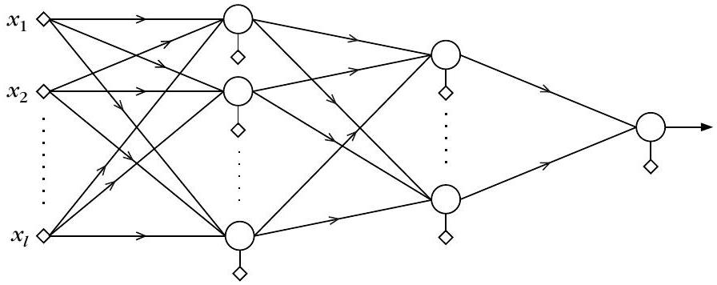
❓ 自我檢測：三層感知器中，第二個隱藏層的神經元扮演什麼角色？
❓ 自我檢測：為什麼實務上不能直接用這個建構式證明來設計網路？
從訓練集精確分類出發：構造式（constructive）演算法
▼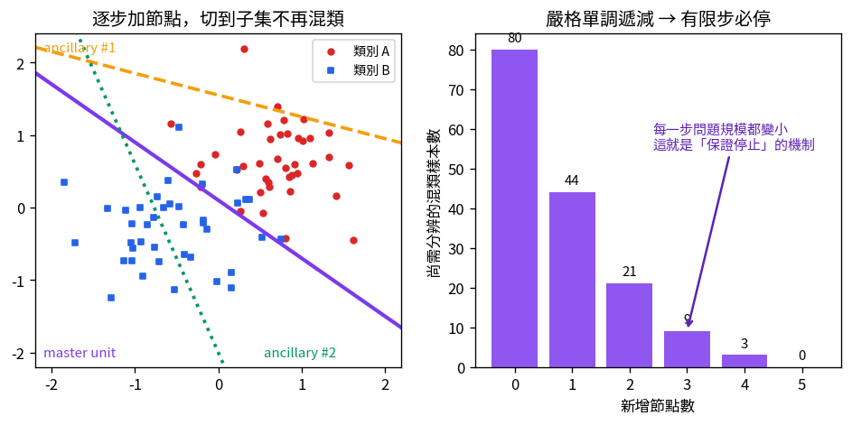
🤖 AI 生圖可用：重繪此示意圖的提示詞（結構化）
WHAT: Two panels. LEFT: a 2-D scatter of two classes with a solid "master unit" line and two further dashed "ancillary unit" lines, each carving out a still-mixed subregion. RIGHT: a descending bar chart of the number of still-mixed training samples after each added node (e.g. 80, 44, 21, 9, 3, 0), with the final bar in green at zero. WHY: The reader must see WHY termination is guaranteed: it is not a heuristic stopping rule but the fact that each newly added ancillary unit has strictly fewer samples left to discriminate, so the problem size shrinks monotonically to zero. MUST show: (1) master vs ancillary lines distinguished; (2) a strictly decreasing bar sequence ending exactly at 0; (3) an annotation tying the decrease to the termination guarantee. AVOID: showing only the network architecture; a bar chart that plateaus or is unlabeled. STYLE: flat vector, scientific plot, white background.
一句話
從一個小到不夠用的網路開始，一邊訓練一邊長大，直到訓練集全部分對。
是什麼
這類方法的起點是很小的架構（通常根本解不了問題），然後依某種規則逐步擴增：有的擴增層數（[Meza 89, Frea 90]），有的固定一兩個隱藏層、擴增節點數（[Kout 94, Bose 96]）。共同哲學：把大問題拆成小問題，每個小問題交給一個節點，用 pocket 演算法或 LMS 訓練（或直接解析計算）。
代表：tiling algorithm（[Meza 89]，兩類 A/B）：
- 第一層先放一個節點 $n(X)$，叫master unit，用 pocket 演算法訓練，把訓練集 $X$ 切成 $X^+$ 與 $X^-$。
- 若 $X^+$（或 $X^-$）裡還混著兩類，就再加一個 ancillary unit $n(X^+)$，只用 $X^+$ 裡的向量訓練它；若還混，繼續加。
- 這個過程保證有限步停止——因為每加一個 ancillary unit，它要分辨的向量數就變少。結果：沒有兩個不同類的向量會給出相同的第一層輸出。
- 把第一層輸出 $X_1=\{\boldsymbol{y}:\boldsymbol{y}=f_1(\boldsymbol{x})\}$ 當新資料，重複同樣程序造第二層…。[Meza 89] 證明：只要層間權重選得好，每個新的 master unit 都能正確分類上一層 master unit 分對的所有向量，外加至少多一個。所以有限步內訓練集全對。
反直覺的觀察：除了第一層以外，其他層處理的都是二元向量——這正是上一個知識點的單位超立方體。用同樣的論證可知：這種演算法最多只需要三層。
另一支：以最近鄰法則為靈感（[Murp 90]）——第一層造「連接訓練點的線段之垂直平分超平面」，第二層用 AND 閘造區域，輸出層用 OR 閘造類別。缺點很直白：神經元數量爆炸。
怎麼用：構造式方法保證訓練集全對，但這不等於泛化好（甚至常常相反，因為架構被逼著記住每個訓練點）。這也是為什麼主流轉向「固定架構 + 最小化代價函數」。
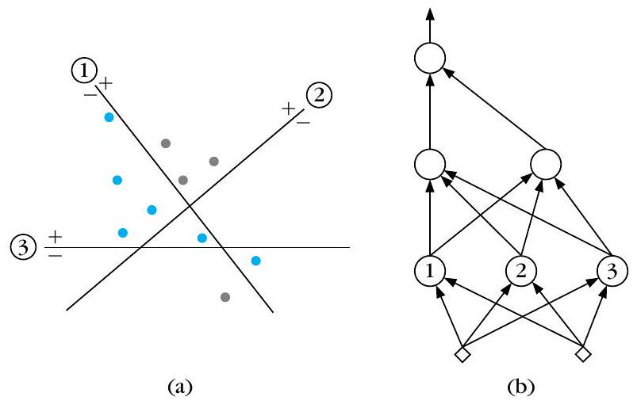
❓ 自我檢測：tiling 演算法為什麼保證有限步內停止？
❓ 自我檢測：構造式演算法的主要隱憂是什麼？
從階梯到 Sigmoid，再到反向傳播的梯度推導
▼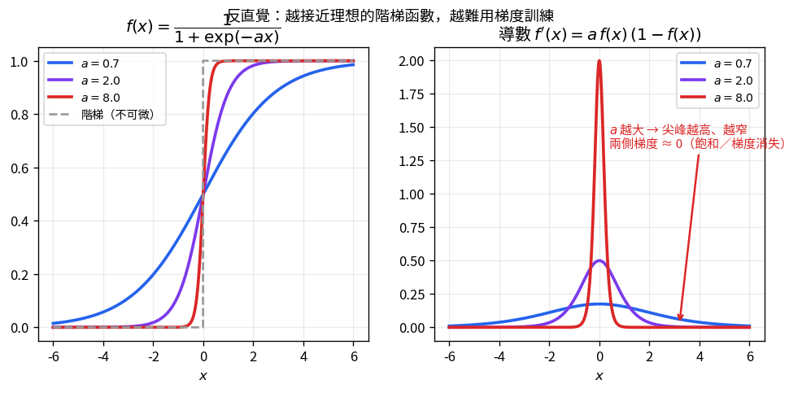
🤖 AI 生圖可用：重繪此示意圖的提示詞（結構化）
WHAT: Two aligned plots. LEFT: three logistic curves with slope a = 0.7, 2, 8, plus a dashed grey unit-step for reference. RIGHT: the corresponding derivatives f'(x) = a f(x)(1-f(x)) for the SAME three values of a, so the reader can compare directly. WHY: The counter-intuitive point: increasing a makes the activation a better approximation of the ideal step function, but simultaneously makes its derivative a tall NARROW spike — so the usable-gradient region shrinks and the saturated (near-zero-gradient) region widens, making training harder. Better approximation, worse trainability. MUST show: (1) same three a values in both panels; (2) the step function for reference; (3) an annotation pointing at the near-zero-gradient tails. AVOID: plotting the sigmoid alone with no derivative panel; using different a values in the two panels. STYLE: clean scientific plot, white background, blue/purple/red for increasing a.
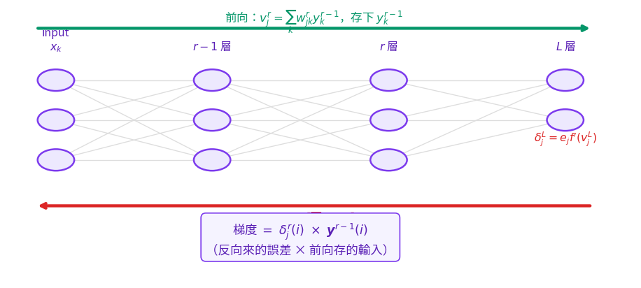
🤖 AI 生圖可用：重繪此示意圖的提示詞（結構化）
WHAT: A layered network sketch (input, r-1, r, L) with TWO large arrows spanning the
whole figure in OPPOSITE directions: a green forward arrow on top labelled with the
weighted sum, and a red backward arrow underneath labelled with the delta recursion.
A highlighted box at the bottom states gradient = delta (from backward) x y^{r-1}
(stored during forward).
WHY: The reader must see that backpropagation is a two-directional information flow, and
that the gradient at each layer is the PRODUCT of a backward-travelling error and a
forward-stored input — which is exactly why the forward intermediate values must be kept.
MUST show: (1) two opposite full-width arrows, colour-coded; (2) the delta recursion
formula on the backward arrow; (3) the "delta x stored input" box.
AVOID: a plain feedforward network diagram with only forward arrows; boxes of terminology
with no directional flow.
STYLE: flat vector schematic, white background, green forward / red backward.
一句話
階梯函數不可微 → 換成 sigmoid → 用連鎖律把誤差由後往前傳，這就是 backpropagation。
一、為什麼要換掉階梯函數
McCulloch–Pitts 神經元用的是階梯函數 $$ f(x)=\begin{cases}1 & x\gt 0\\ 0 & x\lt 0\end{cases} $$ 它不連續、不可微，而最小化代價函數需要微分。於是改用可微的 sigmoid 家族： $$ f(x)=\frac{1}{1+\exp(-ax)},\qquad f(x)=\frac{2}{1+\exp(-ax)}-1,\qquad f(x)=c\,\frac{1-\exp(-ax)}{1+\exp(-ax)}=c\tanh\!\Big(\frac{ax}{2}\Big) $$ $a$ 是斜率參數：$a$ 越大越像階梯。這些又叫 squashing function（輸出被壓在有限範圍內）。
代價（重要且常被忽略）：一旦離開階梯函數，前面「映射到超立方體頂點」那套幾何論述就不再成立了。此時扛起正確分類重任的，是代價函數本身。
二、符號設定
網路有 $L$ 層，第 $r$ 層有 $k_r$ 個神經元，$k_0=l$ 是輸入維度。訓練對 $(\boldsymbol{y}(i),\boldsymbol{x}(i))$，$i=1,\dots,N$。第 $r$ 層第 $j$ 個神經元的權重向量 $\boldsymbol{w}_j^r=[w_{j0}^r,\dots,w_{jk_{r-1}}^r]^T$。梯度下降： $$ \boldsymbol{w}_j^r(\text{new})=\boldsymbol{w}_j^r(\text{old})+\Delta\boldsymbol{w}_j^r,\qquad \Delta\boldsymbol{w}_j^r=-\mu\frac{\partial J}{\partial \boldsymbol{w}_j^r} $$ 代價函數形式 $J=\sum_{i=1}^{N}\mathcal{E}(i)$，例如平方誤差 $$ \mathcal{E}(i)=\frac{1}{2}\sum_{m=1}^{k_L}e_m^2(i)\equiv\frac{1}{2}\sum_{m=1}^{k_L}\big(y_m(i)-\hat{y}_m(i)\big)^2 $$ 神經元的加權和 $v_j^r(i)=\sum_{k=0}^{k_{r-1}}w_{jk}^r y_k^{r-1}(i)$（定義 $y_0^r(i)\equiv+1$ 以吸收門檻值）。
三、梯度：連鎖律的兩次使用
$\mathcal{E}(i)$ 對 $\boldsymbol{w}_j^r$ 的依賴只透過 $v_j^r(i)$，所以 $$ \frac{\partial\mathcal{E}(i)}{\partial\boldsymbol{w}_j^r} =\frac{\partial\mathcal{E}(i)}{\partial v_j^r(i)}\cdot\frac{\partial v_j^r(i)}{\partial\boldsymbol{w}_j^r} =\delta_j^r(i)\,\boldsymbol{y}^{r-1}(i) $$ 其中 $\delta_j^r(i)\equiv\partial\mathcal{E}(i)/\partial v_j^r(i)$，而 $\partial v_j^r/\partial\boldsymbol{w}_j^r=\boldsymbol{y}^{r-1}(i)$（就是這一層的輸入向量！）。於是 $$ \Delta\boldsymbol{w}_j^r=-\mu\sum_{i=1}^{N}\delta_j^r(i)\,\boldsymbol{y}^{r-1}(i) $$ 這個式子對任何可微代價函數都成立。
四、$\delta$ 的反向遞迴（backpropagation 之名的由來）
輸出層 $r=L$（直接微分即可）： $$ \delta_j^L(i)=e_j(i)\,f'\!\big(v_j^L(i)\big) $$ 隱藏層 $r\lt L$：$v_j^{r-1}(i)$ 會影響下一層所有 $v_k^r(i)$，再用一次連鎖律： $$ \delta_j^{r-1}(i)=\sum_{k=1}^{k_r}\delta_k^r(i)\frac{\partial v_k^r(i)}{\partial v_j^{r-1}(i)} =\Big[\sum_{k=1}^{k_r}\delta_k^r(i)\,w_{kj}^r\Big]f'\!\big(v_j^{r-1}(i)\big) $$ 寫成與輸出層一致的形式 $\delta_j^{r-1}(i)=e_j^{r-1}(i)f'(v_j^{r-1}(i))$，其中 $e_j^{r-1}(i)=\sum_k \delta_k^r(i)w_{kj}^r$——「誤差」被權重加權後往回傳。對 logistic 函數還有一個好用的恆等式： $$ f'(x)=a\,f(x)\big(1-f(x)\big) $$
怎麼記：前向傳「訊號」，反向傳「誤差」；每一層的梯度 = （反向傳來的 $\delta$）×（前向存下的輸入 $\boldsymbol{y}^{r-1}$）。這也是為什麼實作時必須先存下前向的中間值。
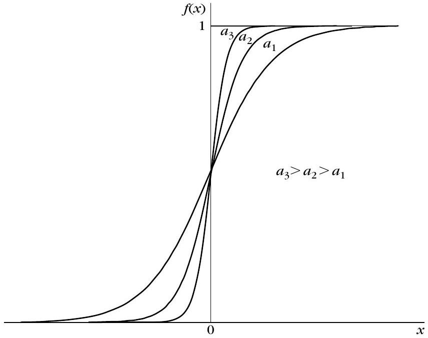
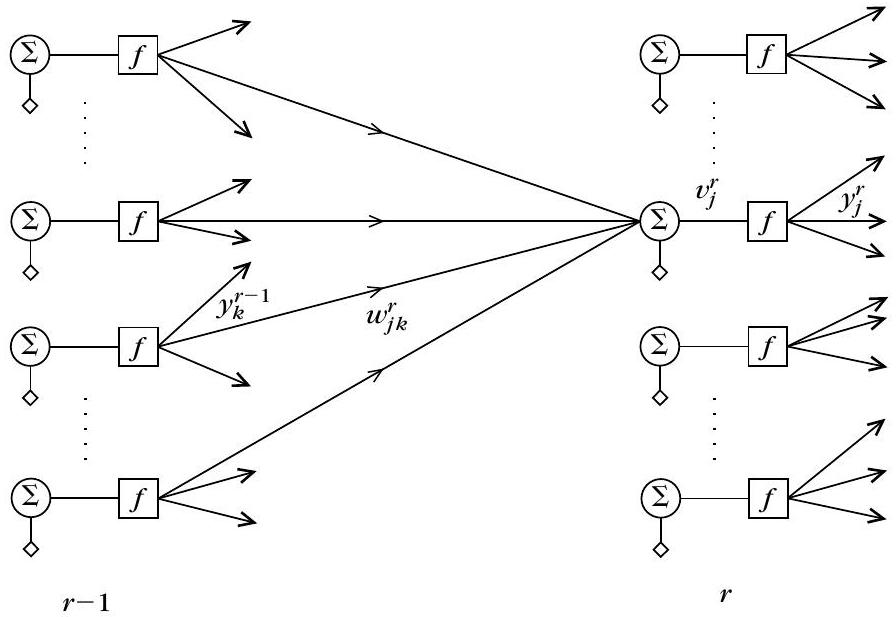
這在做什麼
用一個 2–2–1 的 sigmoid 網路，逐步追蹤「訊號向前走、誤差向後走」的反向傳播。固定樣本是 $x=(1,0)$、目標 $y=1$。
怎麼操作
可直接修改 9 個初始權重，按「載入權重」後再按「Step」；每次 Step 都會真的做一次 forward、算出所有 $\delta$，再依學習率 $\eta$ 更新權重。
觀察什麼
輸出層的誤差先乘上 sigmoid 導數；到了隱藏層，還要乘上通往輸出層的權重再加總。權重若改變，下一步的 activation、$\delta$ 與 $\Delta w$ 會一起連動。
正確結果基準
sigmoid 為 $f(v)=1/(1+\exp(-v))$，且 $f'(v)=f(v)(1-f(v))$。輸出層 $\delta_o=(y-o)f'(v_o)$；隱藏層 $\delta_h=f'(v_h)\sum_k\delta_k w_{kh}$；權重更新為 $\Delta w=\eta\delta\cdot\text{輸入}$（偏置的輸入固定為 1）。
❓ 自我檢測：在 backpropagation 中，$\delta_j^r(i)$ 的定義是什麼？
❓ 自我檢測：為什麼要用 sigmoid 取代階梯函數？
❓ 自我檢測：隱藏層的 $\delta$ 遞迴式 $\delta_j^{r-1}=[\sum_k \delta_k^r w_{kj}^r]f'(v_j^{r-1})$ 說明了什麼？
反向傳播演算法流程與實務要點
▼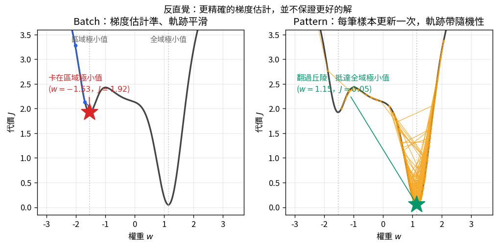
🤖 AI 生圖可用：重繪此示意圖的提示詞（結構化）
WHAT: Two plots of the SAME one-dimensional cost curve, which has a shallow local minimum on the left and a deep global minimum on the right, separated by a hill. LEFT: a smooth blue descent trajectory that settles into the SHALLOW left minimum, ending on a red star. RIGHT: a noisy orange trajectory from the same starting point that rattles over the hill and settles into the DEEP right minimum, ending on a green star. WHY: The reader must see that batch mode's more accurate gradient leads it straight into the nearest (worse) minimum, while pattern mode's randomness lets it escape — a more accurate gradient does not mean a better solution. MUST show: (1) identical cost curve and identical start point in both panels; (2) the two minima labelled "local" and "global" with their J values; (3) two visibly different trajectory textures (smooth vs jittery). AVOID: two different cost curves; a trajectory that ends anywhere other than a minimum; a convex bowl with only one minimum. STYLE: clean scientific plot, white background, blue vs orange trajectories.
演算法四步驟
- 初始化：所有權重用小的隨機值（來自偽隨機序列產生器）。
- 前向計算：對每個訓練向量 $\boldsymbol{x}(i)$，逐層算出 $v_j^r(i)$ 與 $y_j^r(i)=f(v_j^r(i))$，並算出目前的代價函數值。
- 反向計算：對每個 $i$ 先算輸出層的 $\delta_j^L(i)$，再往回算 $\delta_j^{r-1}(i)$，$r=L,L-1,\dots,2$。
- 更新權重： $$ \boldsymbol{w}_j^r(\text{new})=\boldsymbol{w}_j^r(\text{old})+\Delta\boldsymbol{w}_j^r,\qquad \Delta\boldsymbol{w}_j^r=-\mu\sum_{i=1}^{N}\delta_j^r(i)\boldsymbol{y}^{r-1}(i) $$
五個實務要點（考試與實作都常考）
(a) 何時停？ [Kram 89] 建議：代價函數 $J$ 小於某門檻，或梯度變得夠小（後者直接反映權重的變化率）。
(b) 學習率 $\mu$ 的兩難：太大會衝過極小值，太小則收斂龜速。最佳值取決於代價函數在權重空間的形狀——寬闊平坦的極小值梯度小，可以用大 $\mu$；陡峭狹窄的極小值必須用小 $\mu$ 才不會 overshoot。
(c) 區域極小值是常態，不是意外：多層感知器的代價函數最小化是非線性問題，必然存在區域極小值。反向傳播有被困住的風險。若這個區域極小值夠深，那也還算好解；若不是，就得換一組初始值重跑。
(d) Batch mode vs Pattern（online）mode：
- Batch：看完全部 $N$ 對才更新一次——內建平均效果 → 梯度估計較準 → 收斂較穩。
- Pattern：每看一對就更新 $\boldsymbol{w}_j^r(i+1)=\boldsymbol{w}_j^r(i)-\mu\delta_j^r(i)\boldsymbol{y}^{r-1}(i)$——隨機性高，反而有機會跳出區域極小值。
- 反直覺處：比較「吵」的方法有時比較好。[Siet 91] 甚至建議在訓練資料裡加一點白雜訊來強化這個效果。
- 一次把 $N$ 對訓練資料全部呈現完，叫一個 epoch；每個 epoch 之間打亂呈現順序也有助於跳出區域極小值。到底選 batch 還是 pattern，取決於具體問題。
(e) 訓練完就凍結：權重凍結後，分類只是「乘加 + 非線性」，遠比訓練便宜。神經網路天生平行（同層可並行），因此有各種光學/VLSI 硬體與專用神經計算機的實作。
怎麼記：前向存值 → 反向傳 $\delta$ → 用 $\delta\times$輸入 更新。三個旋鈕：$\mu$、初始值、batch/pattern。
這在做什麼
把四筆 XOR 資料送進固定的 2–2–1 sigmoid 網路，重複執行「前向計算 → 反向算 δ → 更新權重」，直到四個點都分對。
怎麼操作
調整學習率 η，按「單輪 epoch」觀察一步，或按「開始訓練」讓它連續跑；可隨時暫停、重置。速度控制每個畫面更新做幾個 epoch。
觀察什麼
左圖的平方誤差應整體下降，右圖的決策區域會逐漸把 XOR 的兩個正類點與兩個負類點分開。若 η 太大可能 overshoot；η 太小則只是需要更多時間。
正確結果基準
每一筆的輸出層 $\delta=(y-o)f'(v)$，隱藏層 $\delta=f'(v)\sum_k\delta_k w_{kh}$；批次更新可寫成 $\Delta w=\eta\sum_i\delta_i\,\text{輸入}_i/N$。停止條件是誤差很小且四筆分類都正確。初始權重固定，結果可重現。
❓ 自我檢測：為什麼 pattern（online）模式有時比 batch 模式更容易找到好解？
❓ 自我檢測：關於學習率 $\mu$ 的敘述，何者正確？
反向傳播的加速變形：momentum、自適應學習率、quickprop
▼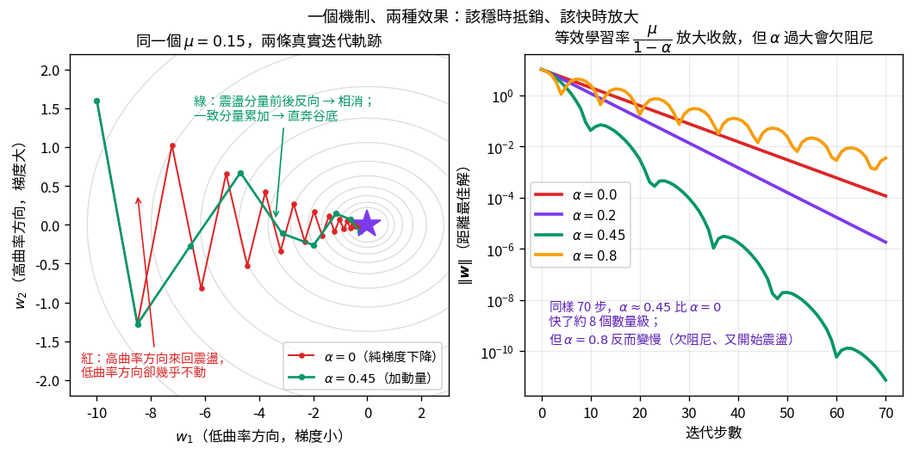
🤖 AI 生圖可用：重繪此示意圖的提示詞（結構化）
WHAT: Two panels. LEFT: elongated elliptical contours of an ill-conditioned quadratic, with TWO real iteration trajectories overlaid from the same start and the SAME step size — a red zig-zag (no momentum) and a greener, straighter path (with momentum). RIGHT: a semi-log convergence plot of ||w|| vs iteration for several momentum values, showing a best intermediate value and a slower, oscillatory curve for too-large momentum. WHY: The reader must see the mechanism: along the high-curvature axis successive gradients reverse and cancel, while along the low-curvature axis they accumulate — one mechanism producing two opposite effects. And that momentum has an optimum: too large becomes underdamped. MUST show: (1) the same mu for both trajectories; (2) contours visibly elongated; (3) multiple momentum values on a log axis with a non-monotone ranking. AVOID: circular contours (they hide the effect); claiming larger momentum is always faster; a schematic "ball rolling down a hill" cartoon with no numbers. STYLE: clean scientific plot, white background, red vs green trajectories.
問題
不論 batch 或 pattern，梯度下降的老毛病都在——收斂慢。而且當 Hessian 矩陣的特徵值差距很大（ill-conditioned）時，梯度在連續步之間會來回震盪而非平順變化，收斂更慢。
(a) Momentum（動量項）
$$ \Delta\boldsymbol{w}_j^r(\text{new})=\alpha\,\Delta\boldsymbol{w}_j^r(\text{old})-\mu\sum_i^N\delta_j^r(i)\boldsymbol{y}^{r-1}(i) $$ $\alpha$ 是動量因子，實務上取 0.1～0.8。展開 $T$ 步： $$ \Delta\boldsymbol{w}_j^r(T)=-\mu\sum_{t=0}^{T-1}\alpha^t\boldsymbol{g}(T-t)+\alpha^T\Delta\boldsymbol{w}_j^r(0) $$ 因為 $\alpha\lt 1$，最後一項幾步就趨近零，剩下的是對歷史梯度的指數加權平均——這就是「平滑震盪」的來源。
關鍵洞察：若目前在代價曲面的低曲率區，梯度幾步內幾乎不變，於是 $$ \Delta\boldsymbol{w}_j^r(T)\simeq-\mu(1+\alpha+\alpha^2+\cdots)\boldsymbol{g}=-\frac{\mu}{1-\alpha}\boldsymbol{g} $$ 也就是說，動量項在平坦區等效於把學習率放大 $1/(1-\alpha)$ 倍（$\alpha=0.8$ 時放大 5 倍）；在震盪區則因為前後梯度反向而互相抵銷。一個機制同時做到「該快時快、該穩時穩」。實務上報告過 2 倍以上的加速 [Silv 90]。
(b) 自適應學習率
看代價函數在連續步的變化來調 $\mu$： $$ \frac{J(t)}{J(t-1)}\lt 1 \Rightarrow \mu(t)=r_i\mu(t-1),\qquad \frac{J(t)}{J(t-1)}\gt c \Rightarrow \mu(t)=r_d\mu(t-1),\qquad 1\le\frac{J(t)}{J(t-1)}\le c \Rightarrow \mu(t)=\mu(t-1) $$ 典型值 $r_i=1.05$、$r_d=0.7$、$c=1.04$。注意不對稱：變好時慢慢加速（+5%），變壞時大幅煞車（−30%）。代價上升時，除了降學習率，也建議把動量項歸零，或乾脆這一步不更新。
delta-delta / delta-bar-delta 規則 [Jaco 88]：每個權重各自一個學習率。若某權重的梯度在連續兩步同號（方向一致）→ 加大它的學習率；若變號 → 可能在震盪 → 縮小。
(c) 跳出梯度下降的框架
- 共軛梯度（[Kram 89, Barn 92, Joha 92]）、Newton 家族（[Batt 92, Rico 88, Watr 88]）、Kalman 濾波（[Palm 91, Sing 89]）、Levenberg–Marquardt（[Bish 95]）。這些多半需要 Hessian 的元素 $\partial^2 J/\partial w_{jk}^q\partial w_{nm}^r$——同樣可以用反向傳播的概念算出來。
- quickprop [Fahl 90]：鬆散地基於 Newton 法的啟發式做法。把各權重當成近似獨立，用二次多項式近似誤差曲面對各權重的截面；若這個二次式的極小值落在合理位置就直接跳過去： $$ \Delta w_{ij}(t)=\begin{cases}\alpha_{ij}(t)\Delta w_{ij}(t-1), & \Delta w_{ij}(t-1)\neq 0\\[2pt] \mu\dfrac{\partial J}{\partial w_{ij}}, & \Delta w_{ij}(t-1)=0\end{cases} \qquad \alpha_{ij}(t)=\min\Big\{\frac{\frac{\partial J}{\partial w_{ij}}(t)}{\frac{\partial J}{\partial w_{ij}}(t-1)-\frac{\partial J}{\partial w_{ij}}(t)},\ \alpha_{\max}\Big\} $$ 典型值 $0.01\le\mu\le0.6$、$\alpha_{\max}\approx1.75$。
怎麼記：momentum = 對梯度做低通濾波（平坦區加速、震盪區抵銷）；自適應 $\mu$ = 賞罰不對稱；quickprop = 每個權重各自做一維牛頓法。加速一律以複雜度為代價。
這在做什麼
在一個狹長的二次代價谷底中，同時跑普通梯度下降與 momentum。兩者都用真實梯度更新，但 momentum 會把前一步速度保留下來。
怎麼操作
調整學習率 μ 與動量係數 α，按「跑 20 步」或「單步」。重置後可公平比較不同旋鈕設定的兩條軌跡。
觀察什麼
普通方法在狹窄谷底容易左右擺；momentum 在方向一致時累積速度、方向反轉時互相抵銷。下方固定梯度探針會直接驗證等比級數的極限。
正確結果基準
更新式是 $\Delta\boldsymbol{w}(t)=-\mu\boldsymbol{g}(t)+\alpha\Delta\boldsymbol{w}(t-1)$。若梯度固定為 $\boldsymbol{g}$ 且 $0\le\alpha<1$，則 $\Delta\boldsymbol{w}(\infty)=-\mu\boldsymbol{g}/(1-\alpha)$。本圖的代價為 $J(x,z)=\frac{1}{2}(x^2+8z^2)$，所以梯度是 $(x,8z)$。
❓ 自我檢測：在低曲率（梯度近似固定）的區域，動量項的效果相當於什麼？
❓ 自我檢測：典型自適應學習率參數 $r_i=1.05,\ r_d=0.7$ 蘊含什麼設計哲學？
代價函數的選擇：cross-entropy、softmax 與貝氏訓練框架
▼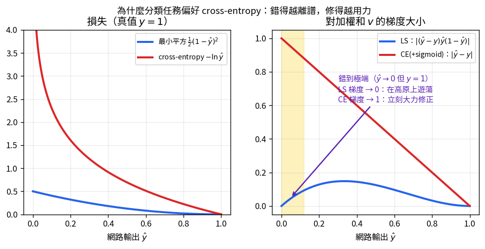
🤖 AI 生圖可用：重繪此示意圖的提示詞（結構化）
WHAT: Two aligned plots against the network output yhat in (0,1) for a true label y=1. LEFT: the loss curves — squared error (bounded, flattening) and cross-entropy (diverging as yhat -> 0). RIGHT: the corresponding GRADIENT MAGNITUDE with respect to the weighted sum v; the squared-error curve falls to ZERO at yhat -> 0 while the cross-entropy curve rises to a constant. A shaded band marks the "confidently wrong" region. WHY: The reader must see the exact failure mode: when the output has converged to the WRONG extreme, the squared-error gradient vanishes and learning stalls on a plateau even though the error is large, whereas cross-entropy reacts hardest precisely there. MUST show: (1) both loss and gradient panels; (2) the LS gradient going to zero in the wrong-extreme region; (3) a shaded/annotated "wrong extreme" band. AVOID: showing only the loss curves (the gradient panel carries the whole argument); omitting the sigmoid derivative from the LS gradient. STYLE: clean scientific plot, white background, blue = squared error, red = cross-entropy.
一句話
最小平方不是唯一選擇——在分類任務裡，cross-entropy 常常是更對的損失。
一、最小平方的兩個毛病
- 不公平：誤差先平方再加總，大誤差主導學習。若各輸出節點的目標值動態範圍差很多，網路就是在「資訊供給不公」的情況下學習。
- 會卡住：[Witt 00] 證明對某類問題，用平方誤差的梯度下降可能被困在區域極小值而找不到存在的解（這裡「解」指能把訓練樣本全部分對的分類器）。相對地，存在一類滿足特定條件的函數——well-formed functions——能保證梯度下降在有解時一定收斂到解。
二、Cross-entropy（交叉熵）
把輸出 $\hat{y}_k$ 解讀成後驗機率（第 3 章證明過：用最小平方、目標值為二元時，最佳權重下的 $\hat{y}_k$ 是 $P(\omega_k|\boldsymbol{x})$ 的最小平方最佳估計）。假設 $y_k$ 是獨立的二元隨機變數、$\hat{y}_k$ 是它們為 1 的機率： $$ J=-\sum_{i=1}^{N}\sum_{k=1}^{k_L}\Big(y_k(i)\ln\hat{y}_k(i)+\big(1-y_k(i)\big)\ln\big(1-\hat{y}_k(i)\big)\Big) $$ $J$ 在 $y_k(i)=\hat{y}_k(i)$ 時最小；二元目標值時最小值為 0。它其實就是 $$ p(\boldsymbol{y})=\prod_{k=1}^{k_L}(\hat{y}_k)^{y_k}(1-\hat{y}_k)^{1-y_k} $$ 的負對數概似。若目標值是真機率，扣掉最小值後可寫成 $$ J=-\sum_{i}\sum_{k}\Big(y_k(i)\ln\frac{\hat{y}_k(i)}{y_k(i)}+(1-y_k(i))\ln\frac{1-\hat{y}_k(i)}{1-y_k(i)}\Big) $$
三個關鍵性質：
- 它依賴相對誤差而非絕對誤差 → 對大小誤差一視同仁（修好了最小平方的毛病 1）。
- 它滿足 well-formed function 的條件 [Adal 97]（修好了毛病 2）。
- 最大的優勢（反直覺處）：當某個輸出收斂到錯誤的極端時，cross-entropy 發散 → 梯度下降反應激烈、立刻修正；而平方誤差此時趨近一個常數 → 梯度下降在高原（plateau）上遊蕩，誤差明明很大卻幾乎不動。
三、Softmax
另一個版本把 $\hat{y}_k$、$y_k$ 當成真機率與目標機率，用 $$ J=-\sum_{i=1}^{N}\sum_{k=1}^{k_L}y_k(i)\ln\frac{\hat{y}_k(i)}{y_k(i)} $$ 但這時輸出不保證加總為 1。解法是換輸出層的活化函數 [Brid 90]： $$ \hat{y}_k=\frac{\exp(v_k^L)}{\sum_{k'}\exp(v_{k'}^L)} $$ 保證輸出落在 $[0,1]$ 且總和為 1。漂亮的副產物：此時反向傳播需要的 $\delta_j^L$ 恰好等於 $\hat{y}_k-y_k$（乾淨到不可思議）。
四、判別式學習（discriminative learning）
既然最終目標是分類錯誤率，何不直接最小化它？[Nede 93, Juan 92, Pado 95] 這條路把重心放在最大的那個後驗機率估計上，直接推動決策面去降低錯誤率。相對地，平方誤差對所有後驗機率一視同仁——它試圖學會比分類所需更多的東西，這在固定大小的網路裡反而限制了效能。缺點：分類錯誤率不可微，必須用平滑版本，因而有陷入區域極小值的風險（[Mill 96] 用 deterministic annealing 緩解）。
五、貝氏訓練框架（Bayesian learning）
前述所有代價函數都在找一組最佳權重。貝氏學習改看權重的機率分布 [Mack 92a]：
- 假設權重的先驗 $p(\boldsymbol{w})$——形狀要夠寬，讓大範圍的值都有機會。
- 假設概似 $p(Y|\boldsymbol{w})$（例如高斯），這是訓練資料進場的地方。
- 貝氏定理：$p(\boldsymbol{w}|Y)=\dfrac{p(Y|\boldsymbol{w})p(\boldsymbol{w})}{p(Y)}$，後驗會在 $\boldsymbol{w}_0$ 附近變尖銳（學到東西了）。
- 分類時對所有 $\boldsymbol{w}$ 平均：$P(\omega_k|\boldsymbol{x};Y)=\int\phi_k(\boldsymbol{x};\boldsymbol{w})p(\boldsymbol{w}|Y)\,d\boldsymbol{w}$。
代價：高維積分極貴，這是這條路線的主要障礙。
現實提醒：[Rich 91] 指出，實務上換掉最小平方未必帶來實質的效能提升。最終選擇取決於問題本身。
這在做什麼
固定一個 sigmoid 輸出神經元與目標 $y=1$，拖動加權和 $net$，即時比較平方誤差與 cross-entropy 在反向傳播時提供的 δ。
怎麼操作
拖動 net 滑桿，特別觀察 $net\approx-10$ 或 $net\approx5$ 的飽和區。畫面會同步更新 sigmoid、導數、兩種 δ 與損失。
觀察什麼
當模型很有自信卻答錯時，平方誤差的 sigmoid 導數把梯度壓得幾乎沒有；cross-entropy 的梯度仍保留方向與大小，會把模型拉回來。
正確結果基準
本 demo 用 $J_{\mathrm{MSE}}=(y-\hat y)^2$、$\delta_{\mathrm{MSE}}=(y-\hat y)f'(net)$；sigmoid + cross-entropy 的輸出層則是 $\delta_{\mathrm{CE}}=\hat y-y$。其中 $\hat y=f(net)$、$f'(net)=\hat y(1-\hat y)$。
❓ 自我檢測：cross-entropy 相對於平方誤差最大的優勢是什麼？
❓ 自我檢測：採用 softmax 輸出層 + cross-entropy 時，反向傳播所需的輸出層 $\delta_j^L$ 等於什麼？
❓ 自我檢測：判別式學習（discriminative learning）的基本主張是什麼？
網路大小的選擇：泛化、過擬合與 overtraining
▼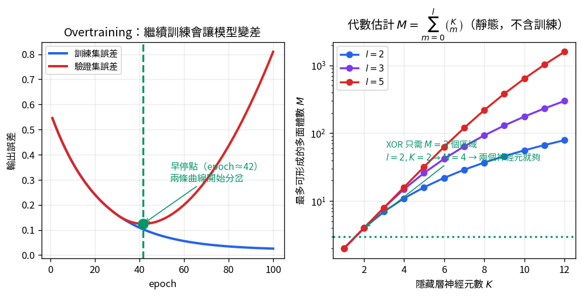
🤖 AI 生圖可用：重繪此示意圖的提示詞（結構化）
WHAT: Two panels. LEFT: two error-vs-epoch curves — training error decreasing monotonically, validation error decreasing then TURNING UPWARD — with a green vertical line and marker at the divergence point labelled "early stopping". RIGHT: a log-scale plot of the maximum number of polyhedral regions M against the number of hidden neurons K, one curve per input dimension l, with the XOR requirement M = 3 marked by a horizontal line. WHY: The reader must see two distinct enemies of generalization: too many parameters (architecture) and too much training (schedule) — and that the algebraic count is a purely static geometric bound that ignores the cost function and the training procedure. MUST show: (1) the validation curve turning up while the training curve keeps falling; (2) the early-stopping point explicitly marked; (3) the XOR case (l=2, K=2 -> M=4 >= 3). AVOID: two monotonically decreasing curves; an unlabeled crossing point. STYLE: clean scientific plot, white background, blue = training, red = validation.
一句話
網路要剛剛好小——大到能學會類內共通性與類間差異，小到學不會同類資料之間的雜訊細節。
天真的想法
把網路開很大，讓訓練決定權重就好。錯。除了計算複雜度，還有更根本的理由：泛化能力（generalization）——對訓練時沒看過的向量能否正確分類。
自由參數數量的兩個要求（訓練對數 $N$ 有限甚至很小）：
- (a) 夠大：能學到「同類向量為何相似」與「不同類為何不同」。
- (b) 相對 $N$ 夠小：學不會同類資料之間的細微差異。
當自由參數太多，網路會去適應這個特定訓練集的枝微末節——這就是 overfitting（過擬合），結果是泛化能力糟糕。結論：網路應該小到只夠抓住資料中最大的規律，忽略較小的規律（後者很可能只是量測雜訊）。
Overtraining（過度訓練）：另一個側面。就算架構不變，訓練太久也會出事。把資料分成訓練集與驗證集（validation / test set），畫出兩條誤差曲線：
- 訓練集誤差：隨迭代持續下降。
- 驗證集誤差：先下降，到某一點後開始上升。
反直覺處：繼續訓練會讓模型變差。上升是因為權重開始適應訓練集的怪癖。這兩條曲線開始分岔的那一點，就是該停止訓練的時機（早停 early stopping）。可惜這方法需要足夠多的資料才能分出驗證集，實務上常常辦不到。
別忘了其他好處：小網路算得快、造得便宜、行為好理解——最後這點在關鍵應用中很重要。
三大類方法：
- 解析法（Analytical）：用代數/統計技巧決定自由參數數量。
- 剪枝（Pruning）：先訓練一個大網路，再依規則逐步移除參數。
- 構造式（Constructive）：從小網路開始逐步加神經元。
代數估計（解析法的代表）：[Mirc 89] 證明在 $l$ 維空間中，單一隱藏層有 $K$ 個神經元的多層感知器，最多能形成 $$ M=\sum_{m=0}^{l}\binom{K}{m},\qquad \binom{K}{m}=0 \text{ 若 } K\lt m $$ 個多面體區域。例：$l=2,K=2\Rightarrow M=4$；XOR 需要 $M=3(\lt 4)$ 個區域，所以兩個神經元就夠（與知識點 2 的結果一致）。缺點：這是靜態估計，完全沒考慮代價函數與訓練程序。
怎麼記：泛化的敵人有兩個——參數太多（overfitting）與訓練太久（overtraining）。前者調架構，後者調何時停。
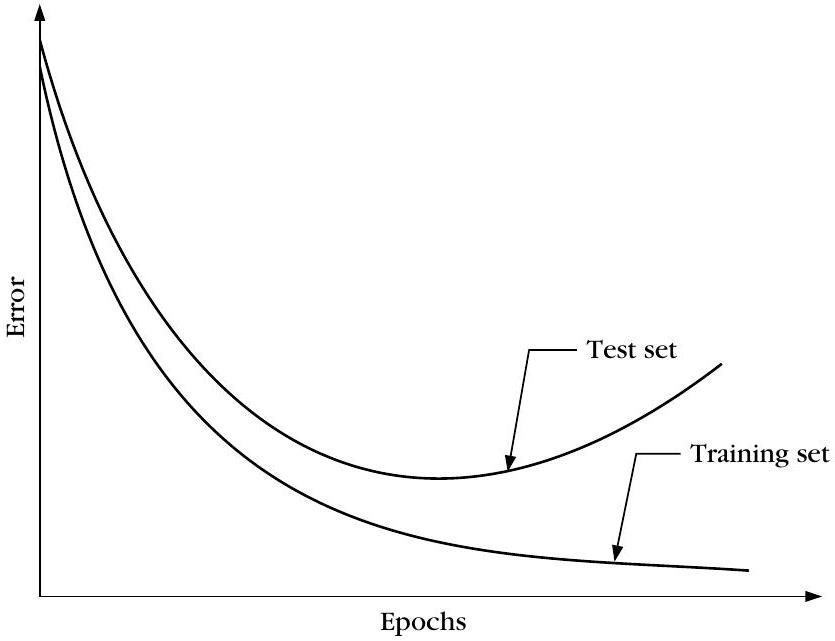
這在做什麼
展示**網路容量與泛化能力（Generalization）的取捨**。即時訓練一個含 $k$ 個隱藏神經元的小型前饋神經網路（1-k-1 MLP），擬合帶雜訊的目標函數 $y = \sin(2\pi x) + \epsilon$（15 個訓練點，10 個獨立測試點）。
怎麼操作
- 拖動**「隱藏神經元數量 $k$」**滑桿（1 到 15 個），觀察擬合曲線與訓練/測試誤差曲線。
- 點擊「重新訓練網路」刷新網路隨機初始權重。
觀察什麼
- **$k=1$（欠擬合 Underfitting）**：模型容量不足，訓練誤差與測試誤差均居高不下。
- **$k=3 \sim 5$（最佳泛化）**：模型擬合平滑，測試誤差達到最低點。
- **$k=15$（過擬合 Overfitting）**：訓練誤差趨近於 0，但測試誤差反而上升（曲線劇烈扭曲擬合雜訊）。
理論基準與公式
隱藏層 $\tanh$ 激活與均方誤差：
$$\hat{y}(x) = \sum_{j=1}^k w_j^{(2)} \tanh(w_j^{(1)} x + b_j^{(1)}) + b^{(2)}, \qquad \text{MSE} = \frac{1}{N} \sum_{i=1}^N (\hat{y}_i - y_i)^2$$
❓ 自我檢測：驗證集誤差曲線「先降後升」的原因是什麼？
❓ 自我檢測：代數估計法（$M=\sum_{m=0}^{l}\binom{K}{m}$）最大的侷限是什麼？
剪枝、正則化與模擬實證
▼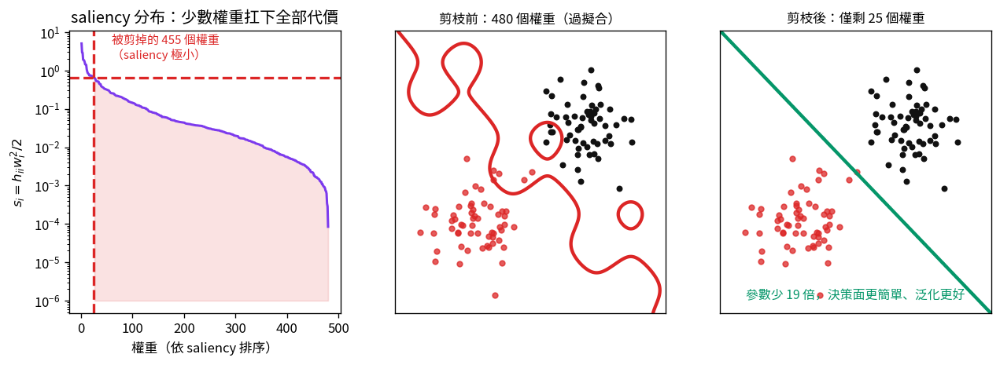
🤖 AI 生圖可用：重繪此示意圖的提示詞（結構化）
WHAT: Three panels. LEFT: a log-scale curve of saliency s_i = h_ii w_i^2 / 2 for 480 weights sorted descending, with a red cut line at rank 25 and the discarded tail shaded. MIDDLE: a wiggly, obviously overfitted decision boundary through a two-class scatter, labelled "480 weights". RIGHT: the SAME scatter with a simple straight boundary, labelled "25 weights". WHY: The reader must see the causal chain: saliency is extremely unevenly distributed, so 95% of the weights can be removed with almost no cost increase, and the resulting decision surface becomes dramatically simpler — fewer parameters giving BETTER generalization. MUST show: (1) a steeply falling saliency curve on a log axis with the cut point marked; (2) the same data points in both decision-surface panels; (3) wiggly vs straight boundary contrast with the weight counts stated. AVOID: changing the data between the two decision panels; a boundary made of closed blobs rather than a separating curve. STYLE: flat scientific plot, white background, purple/red/green.
一句話
先養大再修剪——用敏感度或懲罰項把沒貢獻的權重逼到零，決策面就從「扭來扭去」變回「乾淨俐落」。
一、基於參數敏感度的剪枝 [Lecu 90]
用 Taylor 展開看權重擾動對代價的影響： $$ \delta J=\sum_i g_i\delta w_i+\frac{1}{2}\sum_i h_{ii}\delta w_i^2+\frac{1}{2}\sum_{i\neq j}h_{ij}\delta w_i\delta w_j+\cdots, \qquad g_i=\frac{\partial J}{\partial w_i},\ h_{ij}=\frac{\partial^2 J}{\partial w_i\partial w_j} $$ 兩個簡化假設（都要理由）：(1) 先訓練一段時間 → 已接近極小值 → 一階導數設為 0；(2) 假設 Hessian 是對角的。於是 $$ \delta J=\frac{1}{2}\sum_i h_{ii}\delta w_i^2 \quad\Longrightarrow\quad s_i=\frac{h_{ii}w_i^2}{2} $$ $s_i$ 叫 saliency（顯著度），代表「把 $w_i$ 改成 0 會讓代價漲多少」。
迭代流程：訓練一段 → 算 saliency → 移除 saliency 小的權重 → 用剩下的權重繼續訓練 → 重複，直到滿足停止準則。（[Hass 93] 用完整 Hessian。）
注意哲學上的反轉：這裡的自由參數數量在訓練中持續改變，與知識點 6–7 的「架構固定」恰恰相反。導數雖然一樣用反向傳播概念算，但學習程序本質不同。
二、基於代價函數正則化的剪枝
在代價裡加懲罰項： $$ J=\sum_{i=1}^{N}\mathcal{E}(i)+\alpha\,\mathcal{E}_p(\boldsymbol{w}),\qquad \mathcal{E}_p(\boldsymbol{w})=\sum_{k=1}^{K}h(w_k^2) $$ $\alpha$ 是正則化參數，控制兩項的相對重要性。機制很直觀：對輸出沒什麼貢獻的權重，不太影響第一項，卻被第二項一路壓向零。實務上設一個門檻，週期性地把低於門檻的權重刪掉——這叫 weight elimination。[Wein 90] 建議 $$ h(w_k^2)=\frac{w_k^2}{w_0^2+w_k^2} $$ $w_0$ 是接近 1 的預選參數。看它的行為：$w_k\lt w_0$ 時急速趨近 0（這些權重就此變得無足輕重）；$w_k\gt w_0$ 時趨近 1（懲罰飽和，不再繼續壓大權重）。變形：再加一個偏好小神經元輸出 $y_k^r$ 的懲罰項，就能一併移除不重要的神經元。
三、一個顛覆常識的理論結果 [Bart 98]
用一個大的多層感知器當分類器，若學習演算法找到的網路同時滿足 (a) 權重小、(b) 訓練樣本的平方誤差小，則可證明：泛化效能取決於權重的大小，而不是權重的數量。具體而言，對 sigmoid 兩層感知器，若 $A$ 是每個神經元權重絕對值和的上界，則分類錯誤機率不超過某個誤差估計值加上 $$ A^3\sqrt{\frac{\log l}{N}} $$ 這正面挑戰了「泛化直接由訓練點數與自由參數數量決定」的通說，也解釋了為什麼多層感知器有時用相對很少的訓練點也能泛化得不錯。
四、構造式技術：cascade correlation [Fahl 90]
從只有輸入與輸出節點開始，一次加一個隱藏神經元，兩種權重：
- 輸入側權重：連到輸入節點與先前所有隱藏神經元；訓練目標是最大化新神經元輸出與網路現有殘差的相關性（哪裡還沒學會，就去補哪裡）。訓練完就凍結。
- 輸出側權重：連到輸出節點；每次加新神經元時都重新訓練，最小化平方誤差。
五、模擬實證（§4.10）
兩類、每類是二維空間中四個區域的聯集，每區域為獨立常態、$\sigma^2=0.08$。紅「○」類的四個平均值 $[0.4,0.9]^T,[2.0,1.8]^T,[2.3,2.3]^T,[2.6,1.8]^T$；黑「+」類為 $[1.5,1.0]^T,[1.9,1.0]^T,[1.5,3.0]^T,[3.3,2.6]^T$。共 400 個訓練向量（每分布 50 個）。網路：第一隱藏層 3 個、第二隱藏層 2 個神經元、單一輸出。logistic 活化（$a=1$），目標值 1/0。
- 收斂比較：momentum（$\mu=0.05,\alpha=0.85$）vs adaptive momentum（$\mu=0.01,\alpha=0.85,r_i=1.05,c=1.05,r_d=0.7$）→ adaptive momentum 收斂較快（batch 模式）。
- 畫決策面的技巧：在關心的區域鋪一個二維網格，逐列餵進網路，輸出由 0 翻到 1（或反之）的位置就是決策面。
- 剪枝實驗（震撼點）：兩個隱藏層各 20 個神經元，共 480 個權重，用反向傳播訓練 → 決策曲線明顯過擬合（扭來扭去）。同一網路改用參數敏感度剪枝（每 100 epochs 檢查 saliency、刪掉低於門檻者）→ 最後只剩 25 個權重，決策曲線簡化成一條直線。從 480 到 25，效能反而更好。
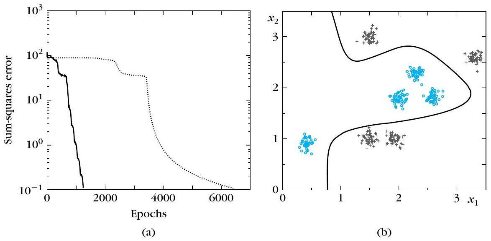
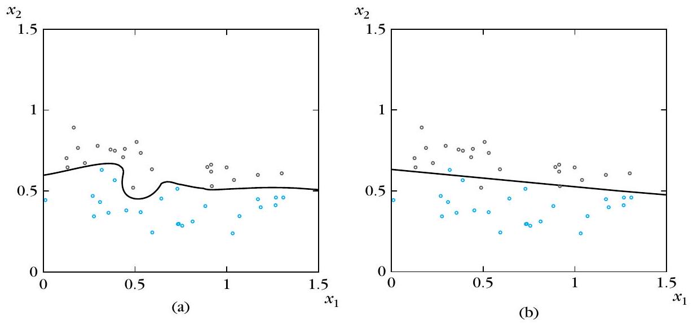
這在做什麼
展示**Optimal Brain Damage (OBD) 網路剪枝與顯著性（Saliency）計算**。利用 Hessian 對角元素 $h_{ii} = \frac{\partial^2 J}{\partial w_i^2}$ 計算二階泰勒展開下每條權重的顯著性 $s_i = \frac{h_{ii} w_i^2}{2}$，評估剪掉該權重對代價函數 $J$ 的即時衝擊。
怎麼操作
- 點擊**「剪掉顯著性最小的權重」**：觀察代價函數變化量 $\Delta J$（應極小，證明剪枝安全）。
- 點擊**「剪掉顯著性最大的權重」**：對比觀察代價函數變化量 $\Delta J$（會劇烈飆升，證明重要權重不可剪）。
- 點擊「重置所有權重」恢復初始網路拓撲。
觀察什麼
- 畫面上每條權重線粗細代表權重絕對值 $|w_i|$，顏色代表顯著性 $s_i$（綠色=安全，紅色=關鍵）。
- 剪掉顯著性最小的權重時，$\Delta J \approx 0$，網路性能幾無影響；剪掉顯著性最大的權重時，$\Delta J$ 爆發，驗證顯著性公式 $s_i$ 的預測精準度！
理論基準與公式
OBD 顯著性二階展開公式：
$$\Delta J_i \approx s_i = \frac{1}{2} h_{ii} w_i^2, \qquad h_{ii} \approx \frac{J(w_i+\epsilon) - 2J(w_i) + J(w_i-\epsilon)}{\epsilon^2}$$
❓ 自我檢測：saliency $s_i=h_{ii}w_i^2/2$ 的推導用了哪兩個簡化假設？
❓ 自我檢測：[Bart 98] 的理論結果說泛化效能主要取決於什麼？
❓ 自我檢測：§4.10 的剪枝實驗中，480 個權重被剪到只剩 25 個後，決策曲線發生什麼變化？
權重共享與轉換不變性
▼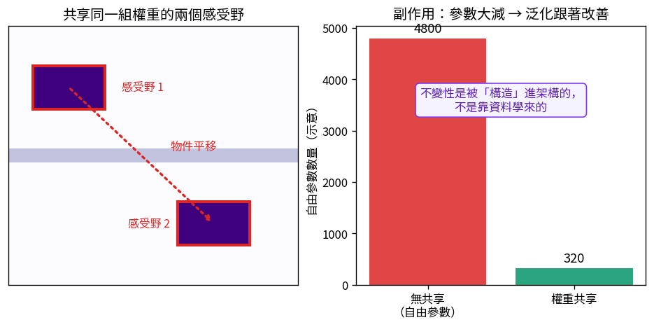
🤖 AI 生圖可用：重繪此示意圖的提示詞（結構化）
WHAT: Two panels. LEFT: one image grid shown twice (stacked), with the same object at a different position each time, and a RED receptive-field box of identical size around it in both, connected by a dotted "translation" arrow — the two boxes share the same weights. RIGHT: a two-bar chart of free-parameter counts, unshared vs shared, with the numbers printed. WHY: The reader must see that translation invariance here is not learned from data but STRUCTURALLY imposed: because corresponding nodes looking at different receptive fields are forced to share weights, the network's response is identical when the object moves. The side effect is a large drop in free parameters. MUST show: (1) the same object at two positions with identically sized receptive fields; (2) an explicit "shared weights" cue linking the two boxes; (3) the parameter-count drop. AVOID: a generic CNN architecture diagram; showing only one image. STYLE: flat vector, white background, red receptive-field boxes.
一句話
與其祈禱網路自己學會「移動了還是同一個字」，不如強迫某些連線共用同一個權重。
問題
轉換不變性（transformation invariance）——不管平移、旋轉、縮放，「5」對 OCR 系統來說都該長得一樣。三條路：(1) 選本身就不變的特徵（第 7 章的主題）；(2) 讓分類器內建約束；(3) 資料擴增。權重共享（weight sharing）屬於 (2)：強迫網路中某些連線必須相同。
一、高階網路（higher order networks）
活化函數作用在輸入的非線性組合上： $$ f(v)=f\Big(w_0+\sum_i w_ix_i+\sum_{jk}w_{jk}x_jx_k\Big) $$ （可推廣到更高階的乘積。）現在假設輸入來自二維網格（影像）：每個格點對應一個 $x_i$，每一對 $(x_i,x_j)$ 對應一個線段。於是不變性可以直接寫成權重約束：
- 平移不變：只要兩線段 $(x_j,x_k)$ 與 $(x_r,x_s)$ 斜率相同，就強迫 $w_{jk}=w_{rs}$。
- 旋轉不變：讓長度相同的線段共享權重。
當然這些都受網格解析度粗糙度的影響而有誤差。因為權重共享，待最佳化的自由參數大幅減少。不過必須誠實說：這類網路至今並未被廣泛使用。
circular backpropagation model：一個特例 $$ f(v)=f\Big(w_0+\sum_i w_ix_i+w_s\sum_i x_i^2\Big) $$ 只多一個參數 $w_s$，[Ride 97] 宣稱這個非線性項提升表達能力卻不損泛化。
二、一階網路上的權重共享（真正影響深遠的那個）
[Fuku 82, Rume 86, Fuku 92, Lecu 89]。以 [Lecu 89] 的手寫郵遞區號辨識系統為例：三個隱藏層、輸入是影像像素灰階值。前兩層的節點組成二維陣列，叫 feature map（特徵圖）；每個節點只接收前一層某個視窗區域的輸入，這個視窗叫 receptive field（感受野）。
核心約束：同一張 feature map 上、看著不同 receptive field 的對應節點，被強迫共享權重。因此，物件從一個感受野移到另一個感受野時，網路的反應完全相同——平移不變性不是學來的，是構造出來的。（這正是現代卷積神經網路的直系祖先。）
怎麼記：權重共享 = 用架構寫入先驗知識。副作用是參數大減 → 泛化也跟著改善。
❓ 自我檢測：在 [Lecu 89] 的手寫郵遞區號系統中，平移不變性是如何獲得的？
❓ 自我檢測：高階網路要達成旋轉不變性，權重共享的規則是什麼？
廣義線性分類器：把「非線性」外包給映射
▼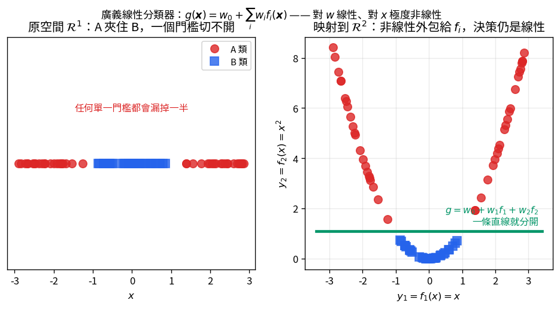
🤖 AI 生圖可用：重繪此示意圖的提示詞（結構化）
WHAT: Two panels. LEFT: a ONE-dimensional axis where class A points occupy both far ends and class B occupies the middle — visibly impossible to split with a single threshold. RIGHT: the same points lifted to two dimensions by y1 = f1(x) = x and y2 = f2(x) = x^2, forming a parabola, with one horizontal green line cleanly separating them. WHY: The reader must see that the nonlinearity is entirely carried by the chosen functions f_i, while the decision rule stays linear in the weights — which is exactly why it is called a GENERALIZED LINEAR classifier. MUST show: (1) the 1-D "A sandwiches B" arrangement; (2) the parabolic lift; (3) one straight separating line in the lifted space; (4) the formula g = w0 + sum w_i f_i(x). AVOID: drawing a curved boundary in the lifted space; using a 2-D input (the 1-D case is much clearer). STYLE: clean scientific plot, white background, red/blue points, green separating line.
一句話
先用一組非線性函數 $f_i$ 把 $\boldsymbol{x}$ 送到 $k$ 維空間，再在那裡設計一個普通的線性分類器。
從 XOR 的教訓出發
知識點 2 裡的映射其實是 $$ \boldsymbol{x}\rightarrow\boldsymbol{y}=\begin{bmatrix}y_1\\ y_2\end{bmatrix}=\begin{bmatrix}f(g_1(\boldsymbol{x}))\\ f(g_2(\boldsymbol{x}))\end{bmatrix} $$ 把它一般化：取非線性函數 $f_i:\mathcal{R}^l\rightarrow\mathcal{R}$，$i=1,\dots,k$，定義 $$ \boldsymbol{y}\equiv[f_1(\boldsymbol{x}),f_2(\boldsymbol{x}),\dots,f_k(\boldsymbol{x})]^T $$ 核心問題：存不存在適當的 $k$ 與 $f_i$，使得 A、B 兩類在 $\boldsymbol{y}$ 的 $k$ 維空間中線性可分？也就是存在 $\boldsymbol{w}\in\mathcal{R}^k$ 使 $$ w_0+\boldsymbol{w}^T\boldsymbol{y}\gt 0,\ \boldsymbol{x}\in A;\qquad w_0+\boldsymbol{w}^T\boldsymbol{y}\lt 0,\ \boldsymbol{x}\in B $$
換個角度看，這等價於函數近似
原空間中若兩類被非線性超曲面 $g(\boldsymbol{x})=0$ 分開，那上式就等於把 $g(\boldsymbol{x})$ 寫成 $f_i$ 的線性組合： $$ g(\boldsymbol{x})=w_0+\sum_{i=1}^{k}w_if_i(\boldsymbol{x}) $$ 這是數值分析裡經典的內插函數近似問題（指數、多項式、Tchebyshev…都被提過）。本章接下來聚焦兩類：多項式（知識點 15）與 RBF（知識點 16）。
為什麼叫「廣義線性」
一旦 $f_i$ 選定，剩下的就是在 $k$ 維空間估計權重 $w_i$——一個標準的線性分類器設計問題。架構上等於一個兩層網路，只是隱藏層各節點有不同的活化函數 $f_i(\cdot)$。多類別（$M$ 類）就設計 $M$ 個 $\boldsymbol{w}_r$，選 $\boldsymbol{w}_r^T\boldsymbol{y}+w_{r0}$ 最大者。
對照組：projection pursuit [Fried 81] $$ g(\boldsymbol{x})=\sum_{i=1}^{k}f_i(\boldsymbol{w}_i^T\boldsymbol{x}) $$ 關鍵差異：$f_i$ 的引數不是 $\boldsymbol{x}$ 本身，而是它在方向 $\boldsymbol{w}_i$ 上的投影。同時對 $f_i$ 與 $\boldsymbol{w}_i$ 最佳化 → 同時選出「投影方向」與「內插函數」。若把 $f_i$ 事先固定成 sigmoid，projection pursuit 就退化成單隱藏層神經網路。它不屬於廣義線性模型家族（因為 $\boldsymbol{w}_i$ 在函數內部），要用兩階段交替最佳化。實務上已被多層感知器取代。
怎麼記：廣義線性分類器 = 固定的非線性映射 + 可學的線性層；MLP = 可學的非線性映射 + 可學的線性層。下一步要問的是：升維真的有幫助嗎？（知識點 14 給出量化答案。）
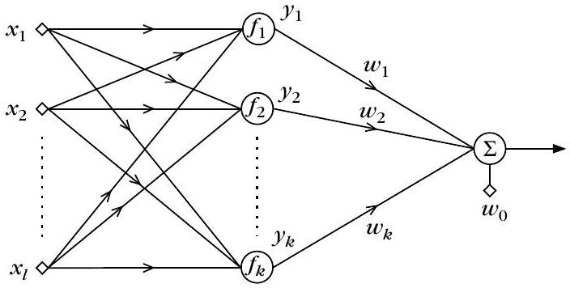
這在做什麼
展示**廣義線性判別函數（Generalized Linear Discriminants）與非線性特徵映射 $\boldsymbol{\phi}(\mathbf{x})$**。對原始 2D 非線性可分環形數據（內圈藍點 $+1$，外圈橘點 $-1$），利用正規方程 $(\mathbf{\Phi}^T\mathbf{\Phi})\mathbf{w} = \mathbf{\Phi}^T\mathbf{y}$ 解出高維線性邊界，並映射回原始空間形成非線性曲線。
怎麼操作
- 點擊**「二次特徵映射 $\boldsymbol{\phi}(\mathbf{x})$」**：觀察高維線性邊界映射回 2D 空間形成的圓形/橢圓形邊界。
- 點擊**「原始線性特徵」**：對比觀察直線邊界在此同心環形數據上的無力感。
- 點擊「重新產生數據」加入隨機波動測試模型穩健度。
觀察什麼
- **原始線性特徵 $[1, x_1, x_2]$**：在 $\mathbf{x}$ 空間是一條直線，無法分開同心環形資料（準確率僅約 50%）。
- **二次特徵 $[1, x_1, x_2, x_1^2, x_2^2, x_1 x_2]$**：在高維特徵空間是線性超平面 $\mathbf{w}^T\boldsymbol{\phi}=0$，映回 2D 空間即為二次圓形邊界，實現 100% 精確分類！
理論基準與公式
廣義線性判別函數與最小二乘權重解：
$$g(\mathbf{x}) = \mathbf{w}^T \boldsymbol{\phi}(\mathbf{x}) = 0, \qquad \hat{\mathbf{w}} = (\mathbf{\Phi}^T \mathbf{\Phi})^{-1} \mathbf{\Phi}^T \mathbf{y}$$
❓ 自我檢測：「廣義線性分類器」中的「線性」指的是什麼線性？
❓ 自我檢測：projection pursuit 與廣義線性分類器最關鍵的差異是什麼？
Cover 定理：l 維空間的線性二分容量
▼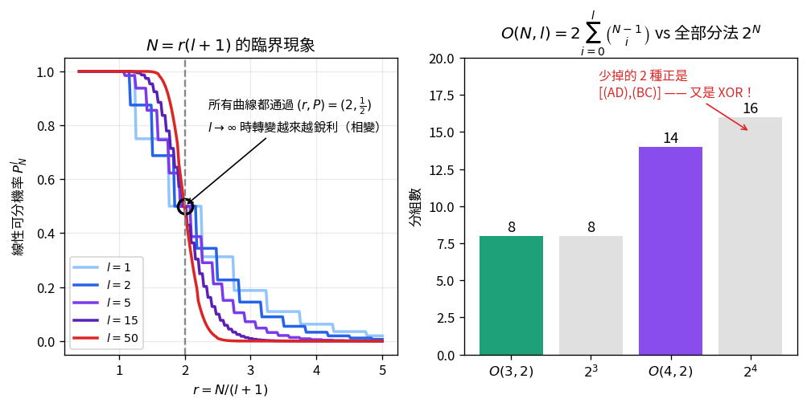
🤖 AI 生圖可用：重繪此示意圖的提示詞（結構化）
WHAT: Two panels. LEFT: a family of curves of the linear-separability probability P against r = N/(l+1), one curve per input dimension l, ALL passing through the single point (r, P) = (2, 1/2), with the transition getting sharper as l grows (a phase transition). RIGHT: a four-bar chart comparing O(3,2)=8 vs 2^3=8 and O(4,2)=14 vs 2^4=16, with the missing 2 groupings annotated as the XOR arrangement [(AD),(BC)]. WHY: The reader must see the quantitative licence for going to higher dimensions: for fixed data, raising l pushes r below the critical value 2 and separability probability towards 1 — and that the groupings that linear dichotomies miss are exactly XOR-type ones. MUST show: (1) several l curves crossing at the same marked point (2, 0.5); (2) the sharpening transition with increasing l; (3) the 14 vs 16 gap explicitly attributed to XOR. AVOID: a single curve; omitting the common crossing point; unlabeled bars. STYLE: clean scientific plot, white background, blue-to-red for increasing l.
一句話
升維為什麼有用？因為維度越高，一組點被隨機標籤後仍線性可分的機率越大——而且有明確的臨界點 $N=2(l+1)$。
前置定義
$l$ 維空間中的 $N$ 個點稱為處於 general position（分布良好），若沒有任何 $l+1$ 個點落在同一個 $(l-1)$ 維超平面上。（例如二維空間中三點共線就被排除。）
Cover 的計數公式 [Cove 65]：用 $(l-1)$ 維超平面把 $N$ 個點分成兩類，所有可能的分組數為 $$ O(N,l)=2\sum_{i=0}^{l}\binom{N-1}{i},\qquad \binom{N-1}{i}=\frac{(N-1)!}{(N-1-i)!\,i!} $$ 每一種兩類分組叫一個（線性）二分（dichotomy）。由二項式係數的性質可知：$N\le l+1$ 時 $O(N,l)=2^N$（全部分法都線性可分）。
具體例子（務必自己數一遍）：二維平面 4 個點 A,B,C,D，$O(4,2)=14$。七條線給出的分組是 $[(ABCD)]$、$[A,(BCD)]$、$[B,(ACD)]$、$[C,(ABD)]$、$[D,(ABC)]$、$[(AB),(CD)]$、$[(AC),(BD)]$，每組對應兩種類別指派（哪一邊算 $\omega_1$），故 $7\times2=14$。而總分法是 $2^4=16$——少掉的 2 種正是 $[(AD),(BC)]$，也就是 XOR！（同一個問題又出現了。）三點時 $O(3,2)=8=2^3$，全部可分。
線性可分的機率： $$ P_N^l=\frac{O(N,l)}{2^N}= \begin{cases} \dfrac{1}{2^{N-1}}\displaystyle\sum_{i=0}^{l}\binom{N-1}{i}, & N\gt l+1\\[8pt] 1, & N\le l+1 \end{cases} $$
最漂亮的部分：令 $N=r(l+1)$，畫 $P_N^l$ 對 $r$ 的曲線族（不同 $l$）。會看到：
- 所有曲線都通過同一點 $(P_N^l,r)=(1/2,\,2)$，因為 $O(2l+2,l)=2^{2l+1}$。
- 以 $r=2$（即 $N=2(l+1)$）為界分成左右兩區；$l\rightarrow\infty$ 時轉換越來越銳利，變成一個相變（phase transition）。
- 所以：$l$ 大時，若 $N\lt 2(l+1)$，任意兩組分法線性可分的機率趨近 1；若 $N\gt 2(l+1)$ 則趨近 0。
這給了升維一個定量的許可證：給定 $N$ 個點，映射到更高維空間會提高它們線性可分的機率。這正是廣義線性分類器、多項式分類器、RBF、以及後面核方法（SVM）的理論根基。
怎麼記：$N=2(l+1)$ 是那條「命運分界線」；$N$ 是你有多少資料，$l+1$ 是你有多少自由度，資料量超過自由度兩倍就開始不可分。順帶一提——這也提醒你，升維提高的是「可分性」，不是「泛化」，兩者要分開看（第 5 章會回頭算這筆帳）。
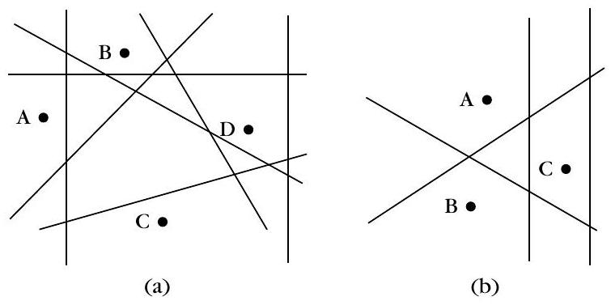
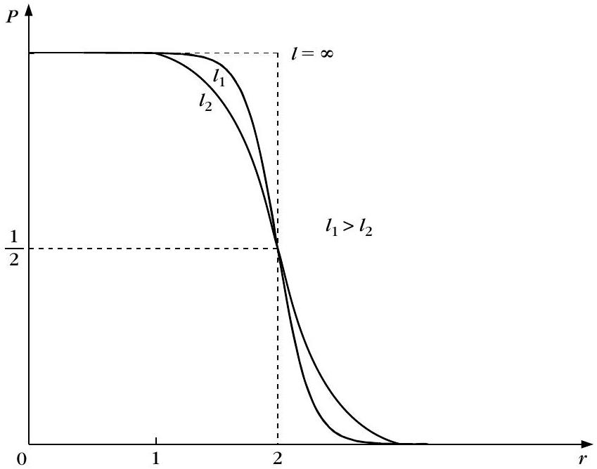
這在做什麼
展示**Cover 定理（Cover's Theorem on Separability of Patterns）**。計算在 $l$ 維空間中 $N$ 個處於一般位置的點可被二元線性超平面劃分的方式總數 $O(N,l)$、線性可分機率 $P_N^l$，以及容量臨界點 $N = 2(l+1)$。包含經典範例 $N=4, l=2$ 的 16 種二分組合全窮舉驗證。
怎麼操作
- 拖動**「點數 $N$」**與**「空間維度 $l$」**滑桿，觀察線性可分機率 $P_N^l$ 對比 ratio $N/(l+1)$ 的相變（Phase Transition）曲線。
- 在下方圖表中核對經典範例 $N=4, l=2$ 的 16 種二分標籤圖解。
觀察什麼
- **相變臨界點**：當 $N = 2(l+1)$ 時，線性可分機率精確降為 $P_N^l = 0.5$。
- **維度拯救可分性**：當維度 $l$ 增加，可分機率 $P_N^l$ 快速趨近於 1.0。
- **$N=4, l=2$ 硬核驗證**：在全 16 種標籤組合中，恰好有 **14 種線性可分（綠框）**，只有 **2 種不可分（紅框，即 XOR 與 XNOR 型）**！
理論基準與公式
Cover 定理分割總數與線性可分機率：
$$O(N,l) = 2 \sum_{i=0}^l \binom{N-1}{i}, \qquad P_N^l = \frac{O(N,l)}{2^N}$$
❓ 自我檢測：Cover 定理中，$N$ 個點在 $l$ 維空間線性可分機率的臨界關係是什麼？
❓ 自我檢測：二維平面上 4 個點的線性二分數 $O(4,2)=14$，比全部分法 $2^4=16$ 少 2，少掉的是哪一種？
❓ 自我檢測：Cover 定理為什麼支持「升維」策略？
多項式分類器：能力很強，代價驚人
▼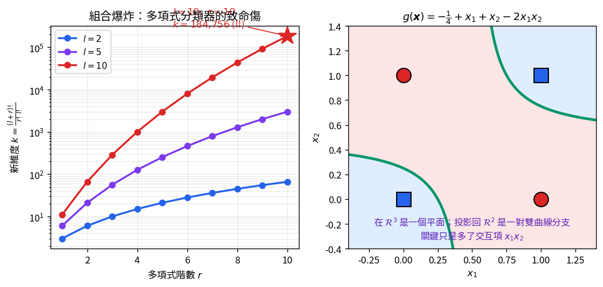
🤖 AI 生圖可用：重繪此示意圖的提示詞（結構化）
WHAT: Two panels. LEFT: a log-scale plot of the expanded dimension k = (l+r)!/(r! l!) against polynomial order r, one curve per input dimension l, with a star marking l = r = 10 -> k = 184,756. RIGHT: the XOR square with the decision function g(x) = -1/4 + x1 + x2 - 2 x1 x2 drawn as a pair of hyperbolic branches, with the two regions shaded and the four labelled points correctly placed. WHY: The reader must feel BOTH sides at once: adding a single interaction term x1x2 is enough to solve XOR (a plane in 3-D becomes a curve in 2-D), yet the same interaction mechanism causes combinatorial explosion in realistic dimensions. MUST show: (1) the explicit value 184,756 marked; (2) the hyperbolic decision curve with correctly coloured XOR points; (3) the interaction term named as the decisive ingredient. AVOID: a straight-line decision boundary in the right panel; a linear-scale plot that hides the explosion. STYLE: clean scientific plot, white background, blue/purple/red curves, shaded regions.
一句話
用最多 $r$ 階的多項式當內插函數——理論上想多準有多準，實際上參數量爆炸。
二階（$r=2$）的一般形式
$$ g(\boldsymbol{x})=w_0+\sum_{i=1}^{l}w_ix_i+\sum_{i=1}^{l-1}\sum_{m=i+1}^{l}w_{im}x_ix_m+\sum_{i=1}^{l}w_{ii}x_i^2 $$ 若 $\boldsymbol{x}=[x_1,x_2]^T$，則 $$ \boldsymbol{y}=[x_1,\ x_2,\ x_1x_2,\ x_1^2,\ x_2^2]^T,\qquad g(\boldsymbol{x})=\boldsymbol{w}^T\boldsymbol{y}+w_0,\quad \boldsymbol{w}^T=[w_1,w_2,w_{12},w_{11},w_{22}] $$ 推廣到 $r$ 階就是所有 $x_1^{p_1}x_2^{p_2}\cdots x_l^{p_l}$、$p_1+\cdots+p_l\le r$ 的乘積項。新維度為 $$ k=\frac{(l+r)!}{r!\,l!} $$
震撼數字
$l=10$、$r=10$ 時 $k=184{,}756$（！！）。也就是說，中等大小的輸入維度加中等階數，自由參數就已經失控。這正是多項式展開的致命傷（它同時也是第 5 章「維度詛咒」的預告）。
回到 XOR（漂亮的收尾）
定義 $$ \boldsymbol{y}=[x_1,\ x_2,\ x_1x_2]^T $$ 四個輸入點被映射到三維單位立方體的頂點：$(00)\to(000)$、$(11)\to(111)$、$(10)\to(100)$、$(01)\to(010)$。這四個頂點可以被平面 $$ y_1+y_2-2y_3-\tfrac{1}{4}=0 $$ 分開。把 $y_3=x_1x_2$ 代回原空間，這個平面等價於二維空間中的非線性決策函數： $$ g(\boldsymbol{x})=-\tfrac{1}{4}+x_1+x_2-2x_1x_2 \begin{cases}\gt 0 & \boldsymbol{x}\in A\\ \lt 0 & \boldsymbol{x}\in B\end{cases} $$ 畫出來是一對雙曲線分支。同一個決策規則，在三維是一個平面、在二維是一條曲線——這就是「升維把非線性變線性」最乾淨的示範。而且注意：只多了一個乘積特徵 $x_1x_2$，就解決了 XOR。
怎麼記
多項式分類器 = 把交互作用項明確寫出來。威力來自 $x_ix_j$ 這類交互項，災難也來自它們（組合爆炸）。核方法（知識點 19）就是為了避開這個爆炸而生的。
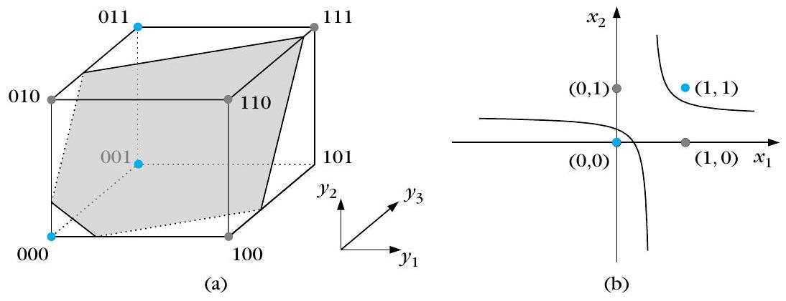
這在做什麼
展示**多項式判別函數（Polynomial Discriminant Functions）**如何將 $l$ 維輸入向量映射至 $k = \frac{(l+r)!}{r! \, l!}$ 維的高維多項式空間。下半部特別展示經典非線性 XOR 問題如何透過引入交叉項 $y_3 = x_1 x_2$ 映射至 3D 空間，並被超平面 $y_3 = 0$ 完美線性分割。
怎麼操作
- 上半部：調節 **輸入維度 $l$** 與 **多項式階數 $r$** 滑桿，即時計算展開項數 $k$ 並檢視展開的多項式項目列表。
- 下半部：在 3D 畫布上按住滑鼠或觸控**旋轉 3D 視角**，觀察 XOR 4 個點在 3D 空間 $(x_1, x_2, x_1 x_2)$ 中的分佈與綠色分割平面 $y_3 = 0$。
- 點擊「重置 3D 視角」還原預設觀察角度。
觀察什麼
- **組合爆炸**：當 $l=2, r=2$ 時，項數 $k = \frac{4!}{2!2!} = 6$（項為 $1, x_1, x_2, x_1^2, x_1 x_2, x_2^2$）。若 $l=10, r=10$，項數將暴增至 $184,756$！
- **XOR 3D 映射可分性**：採用 $[-1, +1]$ 編碼時，XOR 四點被映射至 $(1,1,1), (-1,-1,1)$（類別 $\omega_1$, 藍點）與 $(1,-1,-1), (-1,1,-1)$（類別 $\omega_2$, 橘點）。在 3D 空間中，綠色平面 $y_3 = 0$ 將兩類點完美分開！
理論基準與公式
多項式展開項數公式與 XOR 3D 映射：
$$k = \frac{(l+r)!}{r! \, l!}, \qquad \boldsymbol{y} = [x_1, x_2, x_1 x_2]^T, \quad g(\boldsymbol{y}) = y_3 = x_1 x_2 = 0$$
❓ 自我檢測：$l$ 維輸入、$r$ 階多項式展開後的新維度 $k$ 是多少？
❓ 自我檢測：XOR 用多項式分類器解決時，關鍵新增的特徵是什麼？
RBF 網路：局部反應 vs 全域反應
▼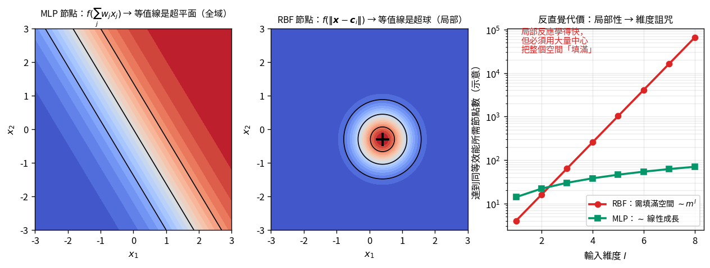
🤖 AI 生圖可用：重繪此示意圖的提示詞（結構化）
WHAT: Three panels. LEFT: a filled contour of a sigmoid node's output f(sum w_j x_j), whose level sets are straight parallel lines across the whole plane (global response). MIDDLE: a filled contour of a Gaussian RBF node f(||x - c||), whose level sets are concentric circles around a marked centre (local response). RIGHT: a log-scale plot of the number of nodes needed to reach comparable performance against input dimension l — exponential for RBF, roughly linear for MLP. WHY: The reader must connect the geometry to the consequence: because RBF nodes respond only near their centre, covering the space requires a number of centres that grows exponentially with dimension — the curse of dimensionality is a direct consequence of locality, not an accident. MUST show: (1) straight level sets vs concentric level sets, side by side; (2) the centre marked in the RBF panel; (3) the exponential vs linear node-count contrast on a log axis. AVOID: two similar-looking heatmaps with no level-set contrast; omitting the dimension plot. STYLE: coolwarm filled contours with black level lines, white background.
一句話
把內插函數換成「離中心多遠」的函數——每個節點只對自己附近的資料有反應，這一點改變了一切。
是什麼
內插核形如 $f(\|\boldsymbol{x}-\boldsymbol{c}_i\|)$，引數是 $\boldsymbol{x}$ 到中心 $\boldsymbol{c}_i$ 的歐氏距離，故名 radial basis function。常見形式： $$ f(\boldsymbol{x})=\exp\Big(-\frac{1}{2\sigma_i^2}\|\boldsymbol{x}-\boldsymbol{c}_i\|^2\Big), \qquad f(\boldsymbol{x})=\frac{\sigma^2}{\sigma^2+\|\boldsymbol{x}-\boldsymbol{c}_i\|^2} $$ 高斯型最常用。$k$ 夠大時 [Broo 88, Mood 89] $$ g(\boldsymbol{x})=w_0+\sum_{i=1}^{k}w_i\exp\Big(-\frac{(\boldsymbol{x}-\boldsymbol{c}_i)^T(\boldsymbol{x}-\boldsymbol{c}_i)}{2\sigma_i^2}\Big) $$ 架構上就是單隱藏層 RBF 活化 + 線性輸出節點（$M$ 類就 $M$ 個輸出節點）。
與 Parzen 估計的血緣
形式幾乎一樣，但 Parzen 用 $k=N$（每個訓練點一個核），這裡 $k\ll N$。少即是多：核少不只省計算，對泛化也有好處。
核心對比：局部 vs 全域（本知識點的靈魂）
| 多層感知器 | RBF 網路 | |
|---|---|---|
| 隱藏節點引數 | $\sum_j w_jx_j$（線性組合） | $\|\boldsymbol{x}-\boldsymbol{c}_i\|$（距離） |
| 等輸出集合 | 一整個超平面 $\{\boldsymbol{x}:\sum_j w_jx_j=c\}$ | 一個超球面（同距離） |
| 反應性質 | 全域 | 局部（高斯隨距離指數衰減） |
| 學習速度 | 較慢 | 較快 |
| 泛化（尤其訓練資料稀疏區） | 較好 [Lane 91] | 較差 |
| 達到相同效能所需階數 | 較低 | 高很多 [Hart 90] |
反直覺的代價：RBF 的局部性讓它學得快，卻也讓它必須用大量中心把整個空間「填滿」，而所需中心數隨輸入維度指數成長——這就是維度詛咒（curse of dimensionality） [Hart 90]。
用 RBF 解 XOR（只要兩個中心）
取 $k=2$、$\boldsymbol{c}_1=[1,1]^T$、$\boldsymbol{c}_2=[0,0]^T$、$f(\boldsymbol{x})=\exp(-\|\boldsymbol{x}-\boldsymbol{c}_i\|^2)$： $$ (0,0)\to(0.135,\,1),\quad (1,1)\to(1,\,0.135),\quad (1,0)\to(0.368,\,0.368),\quad (0,1)\to(0.368,\,0.368) $$ 注意 $(1,0)$ 與 $(0,1)$ 被映到同一點（又是「摺疊」！）。於是直線 $g(\boldsymbol{y})=y_1+y_2-1=0$ 就分得開，回到原空間是曲線 $$ g(\boldsymbol{x})=\exp(-\|\boldsymbol{x}-\boldsymbol{c}_1\|^2)+\exp(-\|\boldsymbol{x}-\boldsymbol{c}_2\|^2)-1=0 $$
中心怎麼選？（RBF 的核心難題）
- 固定中心（Fixed centers）：從訓練集隨機挑 $k$ 個。只要訓練集能代表整個特徵空間，這是合理的。中心固定後問題退化成 $k$ 維的標準線性問題，第 3 章所有方法都能用。
- 訓練中心（Training of the centers）：把 $w_i,\boldsymbol{c}_i,\sigma_i^2$ 全部一起學： $$ w_i(t+1)=w_i(t)-\mu_1\frac{\partial J}{\partial w_i},\quad \boldsymbol{c}_i(t+1)=\boldsymbol{c}_i(t)-\mu_2\frac{\partial J}{\partial \boldsymbol{c}_i},\quad \sigma_i(t+1)=\sigma_i(t)-\mu_3\frac{\partial J}{\partial \sigma_i} $$ 計算成本高到很多場合根本不能用。替代方案：
- 分群法 [Mood 89]：先用非監督式分群找出資料的群集，每群的代表就是中心；再用監督式（梯度下降）學 $w_i$。這是監督 + 非監督的混合。
- 正交最小平方 [Chen 91]：先選一大堆候選中心，再用前向線性回歸挑出精簡的中心集，順便估出模型階數 $k$（[Gomm 00] 有遞迴版）。
- SVM 觀點 [Scho 97]：把 RBF 網路看成透過核的映射機器，設計最靠近決策邊界的向量所構成的超平面分類器——支撐向量就是中心。訓練是二次規劃、保證全域最佳，而且所有未知參數（含中心個數）自動決定。
- 成長式 [Plat 91]：從一個節點開始，依序來的樣本若同時滿足 (a) 離所有現有中心都很遠、(b) 目前輸出誤差夠大，就指派為新中心；否則就拿來更新既有參數。[Ying 98] 加入移除機制（成長 + 剪枝並用）；[Kara 97] 改用分群/LVQ 的漸進分裂來指派中心。
怎麼記：MLP 用「在超平面哪一側」思考，RBF 用「離中心多近」思考。前者全域、後者局部；局部學得快但吃維度。
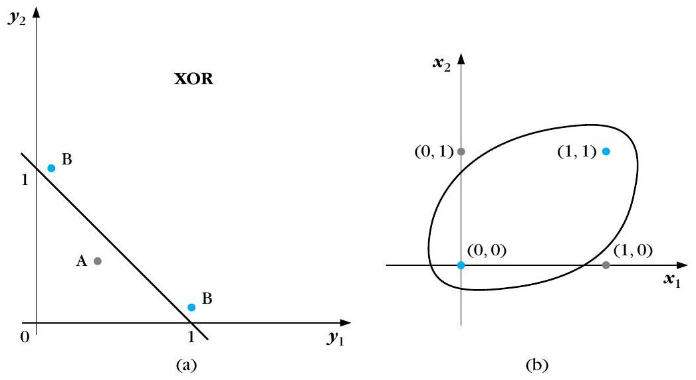
這在做什麼
展示**徑向基函數網路（RBF Network）**如何利用局部高斯基底函數 $f(\boldsymbol{x}) = \exp(-\frac{\|\boldsymbol{x}-\boldsymbol{c}\|^2}{2\sigma^2})$，將原始 2D 輸入空間映射至 2D RBF 特徵空間 $(f_1(\boldsymbol{x}), f_2(\boldsymbol{x}))$。針對非線性可分的 XOR 問題，只需 2 個中心點即可實現完全線性可分。
怎麼操作
- 左側畫布：**拖曳兩個中心點 $\boldsymbol{c}_1$ (黃星) 與 $\boldsymbol{c}_2$ (紫星)**，觀察輸入空間中高斯場度的變化。
- 滑桿控制：拖動 **高斯平滑參數 $\sigma^2$ 滑桿**（預設 $\sigma^2=0.5$，即 $2\sigma^2=1.0$ 對應課本公式）。
- 右側畫布：觀察 4 個 XOR 點映射到 RBF 特徵空間中的位置，與紅色直線 $y_1 + y_2 - 1 = 0$ 的切割效果。
- 點擊「重置課本標準中心 (c₁=(1,1), c₂=(0,0))」還原數值。
觀察什麼
- **課本 Example 精確值比對**：設定 $\boldsymbol{c}_1=(1,1), \boldsymbol{c}_2=(0,0), f(\boldsymbol{x})=\exp(-\|\boldsymbol{x}-\boldsymbol{c}\|^2)$ 時：
• $(0,0) \to (\mathbf{0.135}, \mathbf{1.000})$
• $(1,1) \to (\mathbf{1.000}, \mathbf{0.135})$
• $(1,0)$ 與 $(0,1)$ 被同時摺疊映射至 $(\mathbf{0.368}, \mathbf{0.368})$！ - 在右側特徵空間中，直線 $y_1 + y_2 - 1 = 0$ 將 $(\mathbf{1}, \mathbf{0.135})$ 與 $(\mathbf{0.135}, \mathbf{1})$（類別 $\omega_1$）與折疊點 $(\mathbf{0.368}, \mathbf{0.368})$（類別 $\omega_2$）完全分開！
理論基準與公式
RBF 高斯基底函數與對應決策面：
$$f_i(\boldsymbol{x}) = \exp\left(-\frac{\|\boldsymbol{x}-\boldsymbol{c}_i\|^2}{2\sigma^2}\right), \qquad g(\boldsymbol{y}) = y_1 + y_2 - 1 = 0$$
❓ 自我檢測：RBF 網路與多層感知器最本質的差異是什麼？
❓ 自我檢測：RBF 網路為什麼特別受維度詛咒之苦？
❓ 自我檢測：下列哪一種中心選擇方法能自動決定中心的「個數」，且保證全域最佳？
通用近似定理：誰能逼近任意函數，以及逼近得多快
▼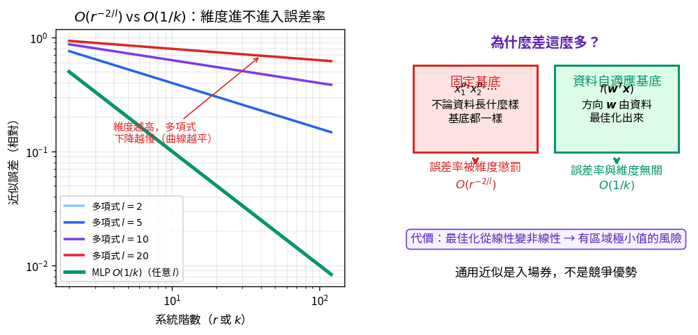
🤖 AI 生圖可用：重繪此示意圖的提示詞（結構化）
WHAT: Two panels. LEFT: a log-log plot of approximation error against system order —
several polynomial curves r^{-2/l} for increasing l (getting flatter and flatter) plus one
thick MLP curve 1/k that is independent of l. RIGHT: a comparison card with two boxes:
"fixed basis" (monomials, same regardless of the data) leading to the dimension-penalised
rate, and "data-adaptive basis" f(w^T x) with w optimised from the data, leading to the
dimension-free rate; plus a footnote that the price is a non-convex optimisation.
WHY: The reader must see that universal approximation is a ticket to entry, not a
competitive advantage — the real discriminator is whether the input dimension appears in
the error rate, and the cause of that difference is fixed vs data-adaptive basis functions.
MUST show: (1) polynomial curves flattening as l grows; (2) one MLP curve labelled as
independent of l; (3) the fixed vs data-adaptive causal explanation.
AVOID: a plot with only two curves; asserting the rates without explaining the cause.
STYLE: clean log-log scientific plot plus a flat explanatory panel, white background.
一句話
多項式、sigmoid 網路、RBF 都是通用近似器；差別不在「能不能」，而在誤差下降的速率——而這正是決勝點。
一、多項式：Weierstrass 定理
定理：設 $g(\boldsymbol{x})$ 是定義在緊緻（閉）子集 $S\subset\mathcal{R}^l$ 上的連續函數，$\epsilon\gt 0$。則存在整數 $r=r(\epsilon)$ 與 $r$ 階多項式 $\phi(\boldsymbol{x})$ 使 $$|g(\boldsymbol{x})-\phi(\boldsymbol{x})|\lt \epsilon,\quad \forall\boldsymbol{x}\in S$$
理論上完美——但實際問題是收斂太慢。[Barr 93] 給出誤差下降率 $$ O\Big(\frac{1}{r^{2/l}}\Big) $$ 注意 $l$ 在指數的分母：輸入維度越高，誤差下降越慢，要達到同樣精度就得用越大的 $r$。而大 $r$ 除了計算複雜度與泛化問題（自由參數太多），還會因為大量連乘導致數值精度變差。折衷做法：多項式適合分段近似（每段用小的 $r$）。
二、Sigmoid 兩層網路
考慮單隱藏層 $k$ 個 sigmoid 節點、輸出節點為線性： $$ \phi(\boldsymbol{x})=\sum_{j=1}^{k}w_j^o f\big(\boldsymbol{w}_j^{hT}\boldsymbol{x}\big)+w_o^o $$
定理（[Cybe 89, Funa 89, Horn 89, Ito 91, Kalo 97]）：只要 $f(\cdot)$ 是 squashing function，對任意連續 $g$ 與 $\epsilon\gt 0$，存在 $k=k(\epsilon)$ 與這樣的兩層感知器使 $|g(\boldsymbol{x})-\phi(\boldsymbol{x})|\lt \epsilon,\ \forall\boldsymbol{x}\in S$。
這裡是全章最重要的對比：[Barr 93] 證明此時誤差下降率是 $$ O\Big(\frac{1}{k}\Big) $$ 輸入空間維度 $l$ 完全沒有出現在式子裡！ 誤差只與系統階數（神經元個數）成反比。
為什麼差這麼多？ 因為多項式用的是固定的基底函數（不論資料長什麼樣，$x_1^2x_2$ 就是 $x_1^2x_2$）；而 MLP 的活化函數引數是 $f(\boldsymbol{w}^T\boldsymbol{x})$，$\boldsymbol{w}$ 是從資料最佳化出來的 → 資料自適應（data-adaptive）基底。所有形如 $(4.47)$ 的固定基底展開都逃不過「誤差下降隨維度變慢」的宿命。
天下沒有白吃的午餐：代價是最佳化從線性變成非線性，於是有陷入區域極小值的風險。
三、既然一層就夠，為何還要多層？
因為「夠用」不等於「有效率」。用多於一個隱藏層可能達到更有效率的近似——同樣的精度用更少的神經元。（現代深度學習的整個立論基礎，早在這裡就寫下了。）
四、RBF 也是通用近似器
$k$ 夠大時，RBF 展開同樣能任意逼近緊緻子集上的任意連續函數 [Park 91, Park 93]。
怎麼記：通用近似是入場券，不是競爭優勢。 真正的差別在（a）誤差下降率與維度的關係、（b）最佳化的難易。多項式 $O(r^{-2/l})$ vs MLP $O(1/k)$ ——這一條，決定了神經網路的勝出。
🎯 互動實驗：通用逼近定理——多項式 vs 神經網路的逼近效率對決
這在做什麼：比較「固定基底多項式（Weierstrass 定理）」與「自適應神經元基底（MLP / 分段線性）」在逼近相同連續非線性函數時的誤差收斂速度與穩定性。
怎麼操作：切換不同的測試目標函數（如 Runge 函數或正弦波），分別滑動調節多項式階數 $r$ 與 MLP 隱藏神經元數 $k$。
觀察什麼： 觀察在相同複雜度下，綠色神經網路曲線如何迅速捕捉局部特徵且無震盪；而多項式（尤其在 Runge 函數中）提高階數 $r$ 時容易在邊界出現劇烈波動（Runge 現象），直觀印證神經網路在高維度與複雜結構下逼近效率遠勝固定基底的本質原因。
理論基準：[Barr 93] 證明多項式逼近誤差率為 $O(r^{-2/l})$（維度 $l$ 進入指數分母，隨維度急遽惡化）；而單隱藏層 MLP 誤差率為 $O(1/k)$（與維度 $l$ 無關）。
0.0421
0.0128
❓ 自我檢測：多項式展開與 sigmoid 兩層網路的近似誤差下降率分別是什麼？兩者最關鍵的差別是？
❓ 自我檢測：MLP 能擺脫「維度出現在誤差率中」的根本原因是什麼？
❓ 自我檢測：既然單一隱藏層就足以做通用近似，使用更多隱藏層的理由是什麼？
機率神經網路（PNN）：把 Parzen 估計搬進網路
▼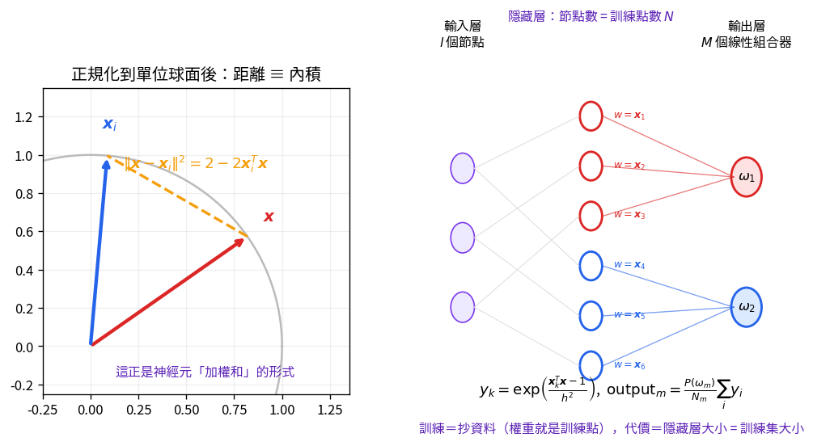
🤖 AI 生圖可用：重繪此示意圖的提示詞（結構化）
WHAT: Two panels. LEFT: a unit circle with two unit vectors x and x_i drawn from the origin, the chord between their tips dashed, and the identity ||x - x_i||^2 = 2 - 2 x_i^T x written beside it. RIGHT: a three-layer schematic in which the hidden layer has ONE node per training point, and each hidden node is annotated with "weights = x_k" (the training vector itself); output nodes are linear combiners, one per class. WHY: The reader must see the trick and its price: normalising to unit norm collapses the squared distance into an inner product, which is exactly the operation a neuron performs — so "training" reduces to copying the data, but the hidden layer size equals the training set size. MUST show: (1) the geometric identity on the unit circle; (2) hidden nodes explicitly numbered/coloured by class with weights = training vectors; (3) the trade-off statement. AVOID: a generic MLP diagram; omitting the unit-norm geometry. STYLE: flat vector schematic plus a clean geometric plot, white background.
一句話
Parzen 視窗法本來就是一堆核函數的加總——那何不一個訓練點配一個神經元，直接用網路平行算出來？
出發點
第 2.5.6 節的 Parzen 估計（高斯核），這裡把類別依賴明白寫出： $$ \hat{p}(\boldsymbol{x}|\omega_i)=\frac{1}{N_i}\sum_{i=1}^{N_i}\frac{1}{(2\pi)^{l/2}h^l}\exp\Big(-\frac{(\boldsymbol{x}-\boldsymbol{x}_i)^T(\boldsymbol{x}-\boldsymbol{x}_i)}{2h^2}\Big) $$ 貝氏決策要比較 $P(\omega_i)\hat{p}(\boldsymbol{x}|\omega_i)$ 的最大值。
關鍵化簡（很值得記的小技巧）
核心計算是 $$ (\boldsymbol{x}-\boldsymbol{x}_i)^T(\boldsymbol{x}-\boldsymbol{x}_i)=\|\boldsymbol{x}\|^2+\|\boldsymbol{x}_i\|^2-2\boldsymbol{x}_i^T\boldsymbol{x} $$ 把所有特徵向量正規化成單位範數（除以 $\|\boldsymbol{x}\|=\sqrt{\sum_i x_i^2}$），則 $\|\boldsymbol{x}\|^2=\|\boldsymbol{x}_i\|^2=1$，平方距離塌縮成內積。丟掉共同的常數乘子後，判別函數變成 $$ g(\omega_i)=\frac{P(\omega_i)}{N_i}\sum_{i=1}^{N_i}\exp\Big(\frac{\boldsymbol{x}_i^T\boldsymbol{x}-1}{h^2}\Big) $$ 這正是神經網路最擅長的形式：內積 → 活化函數 → 加權和。
架構
- 輸入層：$l$ 個節點，餵入未知向量 $\boldsymbol{x}=[x_1,\dots,x_l]^T$。
- 隱藏層：節點數 = 訓練點數 $N=\sum_{i=1}^{M}N_i$。第 $k$ 個隱藏節點的突觸權重，直接就是第 $k$ 個正規化訓練向量的分量 $x_{k,j}$。所以節點 $k$ 的輸入是 $\text{input}_k=\sum_{j=1}^{l}x_{k,j}x_j=\boldsymbol{x}_k^T\boldsymbol{x}$，輸出是 $y_k=\exp\big((\text{input}_k-1)/h^2\big)$。
- 輸出層：$M$ 個節點（每類一個），是線性組合器，只連接屬於該類的隱藏節點： $$ \text{output}_m=\frac{P(\omega_m)}{N_m}\sum_{i=1}^{N_m}y_i $$ 取最大者為分類結果。
反直覺處
這個網路幾乎不用「訓練」——權重直接由訓練點的值決定，沒有梯度下降、沒有區域極小值、沒有 epoch。代價則是隱藏層大小 = 訓練集大小，記憶體與推論成本隨資料量線性成長。這是典型的「把學習成本轉嫁到推論成本」。
出處與應用
[Spec 90] 提出，應用見 [Rome 97, Stre 94, Rutk 04]。
怎麼記
PNN = Parzen 估計的平行硬體版。訓練 = 抄資料；推論 = 全部算一遍。它與知識點 21 的稀疏化恰好是光譜的兩端（全部保留 vs 只留支撐向量）。
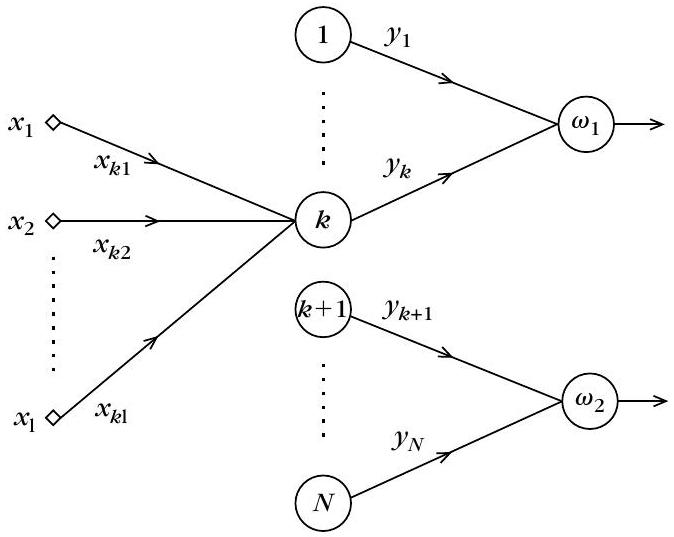
這在做什麼
展示**機率神經網路（PNN）**的核心數學技巧：當所有樣本與測試向量皆做**單位長度正規化（$\|\boldsymbol{x}\|=1$）**時，歐氏距離平方 $\|\boldsymbol{x}-\boldsymbol{x}_i\|^2 = \|\boldsymbol{x}\|^2 + \|\boldsymbol{x}_i\|^2 - 2\boldsymbol{x}^T\boldsymbol{x}_i = 2 - 2\boldsymbol{x}^T\boldsymbol{x}_i$ 可精確簡化為內積，使高斯核運算完全轉化為神經網路標準的「內積 + 活化函數」結構。
怎麼操作
- 在畫布上**拖曳測試點 $\boldsymbol{x}$ (綠星)** 或 **訓練點 $\boldsymbol{x}_i$ (紅藍點)**，觀測動態數據。
- 切換 **「正規化狀態」按鈕**（強迫約束在單位圓上 vs 允許任意長度），觀察對照組的數值變化。
- 調節 **高斯核寬度 $h$ (或 $\sigma$) 滑桿**，比較兩種公式的輸出與差值 $| f_A - f_B |$。
觀察什麼
- **單位圓正規化時（$\|\boldsymbol{x}\|=1, \|\boldsymbol{x}_i\|=1$）**：直接歐氏距離算出的高斯核值 $f_A$ 與內積化簡公式算出的 $f_B$ **完全一致（差值 $< 10^{-9}$）**！
- **取消正規化時（向量離圓心偏離）**：$f_A$ 與 $f_B$ 出現明顯偏差（差值遠大於 0），證明「單位長度正規化」是此化簡成立的必要前提。
理論基準與公式
單位正規化下的距離-內積等價關係與 PNN 高斯核：
$$\|\boldsymbol{x}-\boldsymbol{x}_i\|^2 = 2 - 2\boldsymbol{x}^T\boldsymbol{x}_i, \qquad f_A = \exp\left(-\frac{\|\boldsymbol{x}-\boldsymbol{x}_i\|^2}{2h^2}\right) \equiv f_B = \exp\left(\frac{\boldsymbol{x}_i^T\boldsymbol{x}-1}{h^2}\right)$$
❓ 自我檢測：PNN 中，把所有特徵向量正規化成單位範數的目的是什麼？
❓ 自我檢測：PNN 的隱藏層節點數等於什麼？
非線性 SVM 與 Mercer 核技巧
▼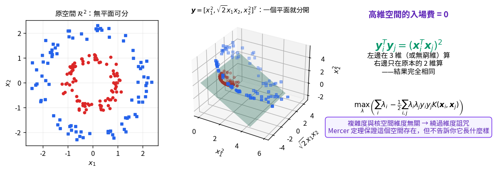
🤖 AI 生圖可用：重繪此示意圖的提示詞（結構化）
WHAT: Three panels. LEFT: two concentric rings of points in 2-D (not linearly separable). MIDDLE: the same points after the map [x1^2, sqrt(2) x1 x2, x2^2] shown in 3-D, with a translucent plane cleanly separating them. RIGHT: a text card centred on the identity y_i^T y_j = (x_i^T x_j)^2, stating that the left side lives in the high-dimensional space while the right side is computed in the original 2-D — with identical results. WHY: The reader must see that the high-dimensional space is never actually visited: only inner products are needed, and those can be evaluated in the original space. Hence the complexity is independent of the kernel space dimension — the curse of dimensionality is bypassed. Mercer's theorem guarantees such a space exists but does not reveal it. MUST show: (1) concentric rings that clearly cannot be split by a line; (2) the separating plane after the quadratic map; (3) the kernel identity stated prominently. AVOID: showing only the 2-D and 3-D pictures without the inner-product identity; using linearly separable input data. STYLE: clean scientific plots plus a text card, white background, red/blue points.
一句話
SVM 的計算只用到內積——那就把內積換成核函數，於是我們在一個從未實際造訪過的高維空間裡設計了線性分類器。
一、那個「意外的驚喜」
第 3 章的 SVM，在 Wolfe 對偶表示中特徵向量成對出現、只透過內積參與運算；分類時也只需要 $$ g(\boldsymbol{x})=\boldsymbol{w}^T\boldsymbol{x}+w_0=\sum_{i=1}^{N_s}\lambda_iy_i\boldsymbol{x}_i^T\boldsymbol{x}+w_0 $$ （$N_s$ 是支撐向量數。）若改在 $k$ 維映射空間設計，唯一的差別就是換成映射後的向量。天真的想法：$k\gg l$，複雜度豈不爆炸？驚喜來了。看這個映射： $$ \boldsymbol{x}\in\mathcal{R}^2\rightarrow\boldsymbol{y}=[x_1^2,\ \sqrt{2}x_1x_2,\ x_2^2]^T \qquad\Longrightarrow\qquad \boldsymbol{y}_i^T\boldsymbol{y}_j=(\boldsymbol{x}_i^T\boldsymbol{x}_j)^2 $$ 高維空間的內積，只用原空間的內積就算出來了——高維空間的「入場費」是零。
二、Mercer 定理（把驚喜升級成定理）
定理：設 $\boldsymbol{x}\in\mathcal{R}^l$ 與映射 $\boldsymbol{x}\mapsto\boldsymbol{\phi}(\boldsymbol{x})\in H$（$H$ 為 Hilbert 空間）。內積運算有等價表示 $$\langle\boldsymbol{\phi}(\boldsymbol{x}),\boldsymbol{\phi}(\boldsymbol{z})\rangle=K(\boldsymbol{x},\boldsymbol{z})$$ 其中 $K$ 是對稱連續函數且滿足 $$\int_C\int_C K(\boldsymbol{x},\boldsymbol{z})g(\boldsymbol{x})g(\boldsymbol{z})\,d\boldsymbol{x}\,d\boldsymbol{z}\ge 0$$ 對任意滿足 $\int_C g(\boldsymbol{x})^2d\boldsymbol{x}\lt +\infty$ 的 $g$ 成立（$C$ 是 $\mathcal{R}^l$ 的緊緻子集）。 反之亦然：任何滿足上述條件的對稱連續 $K$，都存在一個空間讓 $K$ 定義其內積！
這樣的 $K$ 叫 kernel（核），$H$ 叫 RKHS（Reproducing Kernel Hilbert Space）。
Mercer 定理沒告訴我們的事（很重要）：它不告訴你那個空間長什麼樣。我們沒有通用工具從 $K$ 反推 $\boldsymbol{\phi}(\cdot)$，甚至不知道空間的維度——高斯核對應的空間就是無窮維的 [Burg 99]。
常用核： $$ \text{多項式：}\ K(\boldsymbol{x},\boldsymbol{z})=(\boldsymbol{x}^T\boldsymbol{z}+1)^q,\ q\gt 0 $$ $$ \text{RBF：}\ K(\boldsymbol{x},\boldsymbol{z})=\exp\Big(-\frac{\|\boldsymbol{x}-\boldsymbol{z}\|^2}{\sigma^2}\Big) $$ $$ \text{雙曲正切：}\ K(\boldsymbol{x},\boldsymbol{z})=\tanh(\beta\boldsymbol{x}^T\boldsymbol{z}+\gamma)\quad(\text{例如 }\beta=2,\gamma=1) $$
三、核化後的 SVM
Wolfe 對偶問題變成 $$ \max_{\lambda}\Big(\sum_i\lambda_i-\frac{1}{2}\sum_{i,j}\lambda_i\lambda_jy_iy_jK(\boldsymbol{x}_i,\boldsymbol{x}_j)\Big) $$ $$ \text{s.t.}\quad 0\le\lambda_i\le C,\ i=1,\dots,N;\qquad \sum_i\lambda_iy_i=0 $$ 分類規則： $$ \text{把 }\boldsymbol{x}\text{ 判給 }\omega_1(\omega_2)\text{ 若 } g(\boldsymbol{x})=\sum_{i=1}^{N_s}\lambda_iy_iK(\boldsymbol{x}_i,\boldsymbol{x})+w_0\gt (\lt )\,0 $$ 由於核的非線性，這在原空間 $\mathcal{R}^l$ 就是非線性分類器。$\nu$-SVM 同理。
四、四個必記的評註
- 核 = RBF 時，架構與 RBF 網路相同，但取得方式截然不同：知識點 16 是先決定 $k$ 維映射、再估中心；SVM 則是節點數與中心全部由最佳化程序自動產生。
- 核 = 雙曲正切（sigmoid）時，架構是兩層感知器的特例；同樣地，節點數由最佳化決定。架構相同不代表訓練相同。
- 複雜度與核空間的維度無關 → 繞過維度詛咒。你在高維空間設計，卻不必付出高維參數量的代價。這也帶來良好的泛化表現。
- 最大限制：沒人知道怎麼選最好的核。這仍是未解的研究問題。核選定後，其超參數（hyperparameters）——如高斯核的 $\sigma$、代價函數中的平滑參數 $C$——對泛化至關重要。常見做法：用各種易算的泛化界（bound），對不同超參數組解 SVM，選使界最佳者（[Bart 02, Lin 02, Duan 03, Angu 03, Lee 04]；[Chap 02] 用 minimax 框架：對 $\boldsymbol{w}$ 最大化 margin、對超參數最小化界）。另一路是用資訊幾何做資料自適應核調整 [Amar 99]（引入共形映射改變核誘導的 Riemann 幾何以擴大 margin）。
應用：手寫數字 [Cort 95]、物件辨識 [Blan 96]、人員辨識 [Ben 99]、垃圾郵件分類 [Druc 99]、通道等化 [Seba 00]、醫學影像 [ElNa 02, Flao 06]。[Meye 03] 用 21 個資料集比較 SVM 與其他 16 種分類器：SVM 名列前茅，但仍有其他分類器勝出的個案。
怎麼記：核技巧 = 只用內積的演算法，都可以免費升維。 條件是「只用內積」，代價是「不知道自己在哪個空間」。
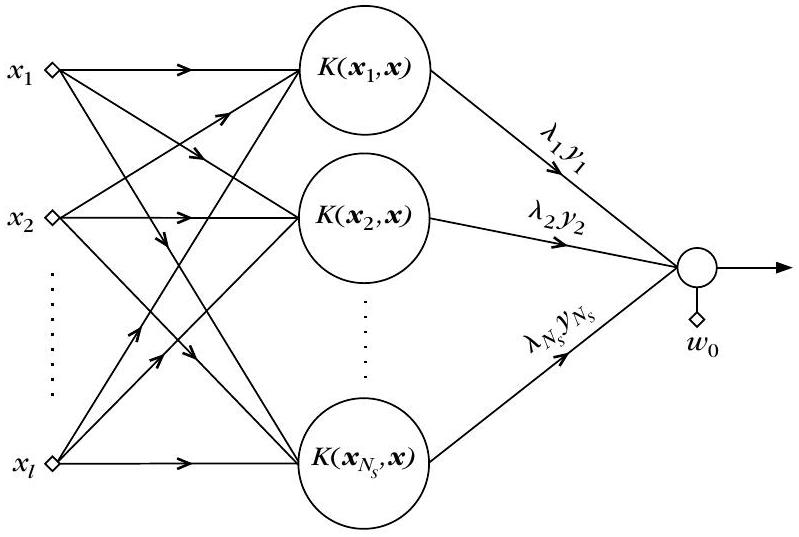
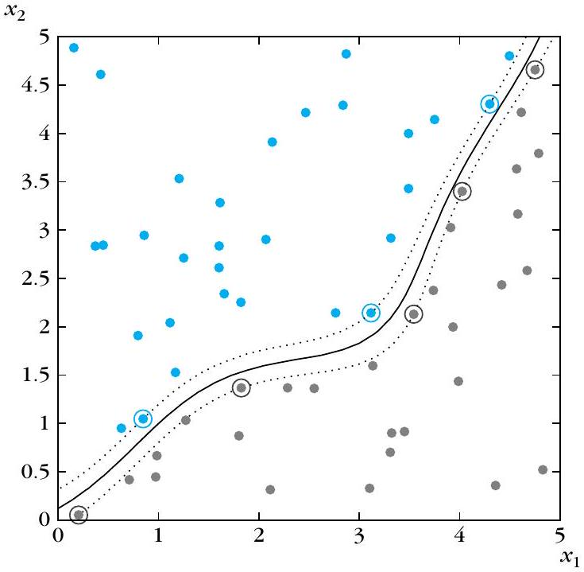
這在做什麼
展示**Mercer 核技巧（Kernel Trick）與非線性核化 SVM**：利用核函數 $K(\boldsymbol{x}_i, \boldsymbol{x}_j)$ 替代高維隱式映射的內積 $\langle\boldsymbol{\phi}(\boldsymbol{x}_i), \boldsymbol{\phi}(\boldsymbol{x}_j)\rangle$，完全無需顯式推算高維座標即可求解非線性邊界。預設資料為同心圓環（線性不可分）。
怎麼操作
- 切換 **核函數下拉選單**（線性核、二次多項式核、高斯 RBF 核），觀察對偶問題解出的非線性決策邊界。
- 調節 **懲罰參數 $C$ 滑桿** 與 **RBF 參數 $\gamma$ 滑桿**，即時觀察決策面著色與支持向量 (黃金光暈標記) 的連動。
- 在畫布上**拖曳任意數據點**，即時觀測投影梯度上升對偶求解器的動態反應。
觀察什麼
- **線性核 (Linear Kernel)**：面對同心圓數據完全無法分開（準確度僅 50%）。
- **二次多項式核 $K=(\boldsymbol{x}_i \cdot \boldsymbol{x}_j + 1)^2$**：在原 2D 空間中自動畫出圓形非線性邊界，100% 完美分隔！
- **高斯 RBF 核 $K=\exp(-\gamma\|\boldsymbol{x}_i - \boldsymbol{x}_j\|^2)$**：形成極度平滑的封閉環狀邊界，充分展現「繞過維度詛咒、高維入場費為零」的核技巧精華。
理論基準與公式
核化 SVM Wolfe 對偶問題與對偶決策函數：
$$\max_{\boldsymbol{\lambda}} \left[ \sum_{i=1}^N \lambda_i - \frac{1}{2}\sum_{i=1}^N \sum_{j=1}^N \lambda_i \lambda_j y_i y_j K(\boldsymbol{x}_i, \boldsymbol{x}_j) \right] \quad \text{s.t. } 0 \le \lambda_i \le C, \ \sum_{i=1}^N \lambda_i y_i = 0$$
$$g(\boldsymbol{x}) = \sum_{i \in \text{SV}} \lambda_i y_i K(\boldsymbol{x}_i, \boldsymbol{x}) + w_0 = 0$$
❓ 自我檢測：核技巧之所以可行，關鍵前提是什麼？
❓ 自我檢測：Mercer 定理「沒有」告訴我們什麼？
❓ 自我檢測：SVM 的計算複雜度與核空間維度的關係為何？
超越 SVM：核技巧的通用化與 kernel perceptron
▼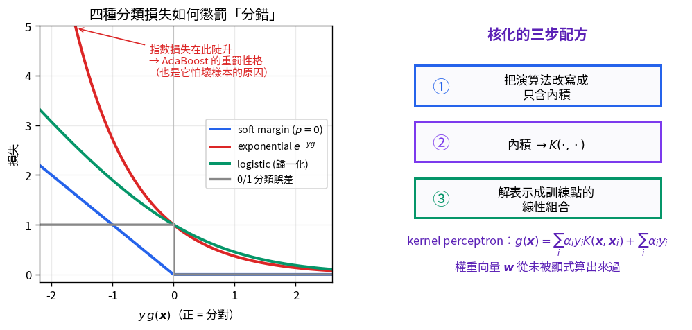
🤖 AI 生圖可用：重繪此示意圖的提示詞（結構化）
WHAT: Two panels. LEFT: four classification losses plotted against y*g(x) — soft margin (hinge), exponential, normalised logistic, and the 0/1 step — with the exponential curve visibly steepest on the negative side. RIGHT: a three-step recipe card: (1) rewrite the algorithm using only inner products, (2) replace inner products by K, (3) express the solution as a linear combination of the training points; with a footnote showing the kernel perceptron discriminant and the remark that w is never computed explicitly. WHY: The reader must see that the choice of loss IS the algorithm's personality — the exponential loss's brutal penalty on negative margins is both AdaBoost's engine and its weakness on hard, high-Bayes-error tasks — and that kernelisation is a mechanical recipe applicable to any inner-product-only algorithm. MUST show: (1) all four losses on the same axes with y*g(x) on the horizontal axis; (2) the exponential curve annotated as the steepest; (3) the three numbered steps. AVOID: plotting losses against raw error instead of the margin y*g(x); a recipe with no concrete example. STYLE: clean scientific plot plus a flat numbered card, white background.
一句話
核技巧不是 SVM 的專利——任何只用內積的線性演算法，都能被「核化」成非線性版本。
一、示範一：核化的歐氏距離分類器
兩類 $\omega_1,\omega_2$，各有 $N_1,N_2$ 個訓練對 $(y_i,\boldsymbol{x}_i)$，$y_i=\pm1$。在 RKHS 中，歐氏分類器把 $\boldsymbol{x}$ 判給 $\omega_2$ 若 $$ \|\phi(\boldsymbol{x})-\boldsymbol{\mu}_1\|^2\gt \|\phi(\boldsymbol{x})-\boldsymbol{\mu}_2\|^2 $$ 展開消去 $\|\phi(\boldsymbol{x})\|^2$ 後： $$ \langle\phi(\boldsymbol{x}),(\boldsymbol{\mu}_2-\boldsymbol{\mu}_1)\rangle\gt \tfrac{1}{2}(\|\boldsymbol{\mu}_2\|^2-\|\boldsymbol{\mu}_1\|^2)\equiv\theta $$ 其中 $\boldsymbol{\mu}_1=\frac{1}{N_1}\sum_{i:y_i=+1}\phi(\boldsymbol{x}_i)$、$\boldsymbol{\mu}_2=\frac{1}{N_2}\sum_{i:y_i=-1}\phi(\boldsymbol{x}_i)$。全部換成核： $$ \frac{1}{N_2}\sum_{i:y_i=-1}K(\boldsymbol{x},\boldsymbol{x}_i)-\frac{1}{N_1}\sum_{i:y_i=+1}K(\boldsymbol{x},\boldsymbol{x}_i)\gt \theta $$ $$ 2\theta=\frac{1}{N_2^2}\sum_{i:y_i=-1}\sum_{j:y_j=-1}K(\boldsymbol{x}_i,\boldsymbol{x}_j)-\frac{1}{N_1^2}\sum_{i:y_i=+1}\sum_{j:y_j=+1}K(\boldsymbol{x}_i,\boldsymbol{x}_j) $$ 認出來了嗎？ 左式兩項長得就像 Parzen pdf 估計——用高斯核時，第一項就是 $\omega_2$ 的密度估計、第二項是 $\omega_1$ 的。核化的歐氏分類器 ≈ Parzen 貝氏分類器。 不同世界的方法在此匯流。
（Fisher 線性判別等其他經典分類器同樣可核化，見 [Mull 01, Shaw 04]。）
二、示範二：kernel perceptron（教學上最漂亮的一個）
第 3.3 節說：感知器演算法在線性可分時保證有限步收斂。這個限制讓它幾乎沒有實用價值。但——經過核映射到高維（甚至無窮維）空間後，依 Cover 定理（知識點 14），問題有很高機率變成線性可分。於是感知器從歷史文物翻身為實用工具。
用 reward-and-punishment 形式：每次誤分類（即 $y_{(t)}(\langle\boldsymbol{w}(t),\phi(\boldsymbol{x}_{(t)})\rangle+w_0)\le0$）就更新 $$ \begin{bmatrix}\boldsymbol{w}(t+1)\\ w_0(t+1)\end{bmatrix} =\begin{bmatrix}\boldsymbol{w}(t)\\ w_0(t)\end{bmatrix} +y_{(t)}\begin{bmatrix}\phi(\boldsymbol{x}_{(t)})\\ 1\end{bmatrix} $$ 關鍵技巧：給每個訓練點一個計數器 $\alpha_i$，每當 $\boldsymbol{x}_{(t)}=\boldsymbol{x}_i$ 被誤分類而觸發更新就加一。從零向量出發，最終解為 $$ \boldsymbol{w}=\sum_{i=1}^{N}\alpha_iy_i\phi(\boldsymbol{x}_i),\qquad w_0=\sum_{i=1}^{N}\alpha_iy_i $$ 於是分類器完全用核表示——權重向量從未被顯式算出來過： $$ g(\boldsymbol{x})=\sum_{i=1}^{N}\alpha_iy_iK(\boldsymbol{x},\boldsymbol{x}_i)+\sum_{i=1}^{N}\alpha_iy_i $$
Kernel Perceptron 演算法
設 α_i = 0, i = 1..N
Repeat
count_misclas = 0
For i = 1 to N
If y_i ( Σ_j α_j y_j K(x_i, x_j) + Σ_j α_j y_j ) ≤ 0 then
α_i = α_i + 1
count_misclas = count_misclas + 1
End {For}
Until count_misclas = 0
三、分類任務常用的損失函數
- Soft margin loss：$\mathcal{L}(g(\boldsymbol{x}),y)=\max(0,\rho-yg(\boldsymbol{x}))$。若 $yg(\boldsymbol{x})$ 達不到 $\rho$ 就算犯錯，且往負值方向線性遞增——它量的是「離 margin 有多遠」。
- Exponential loss：$\mathcal{L}=\exp(-yg(\boldsymbol{x}))$。對 $yg(\boldsymbol{x})\le0$（判錯）懲罰極重。（知識點 25 的 AdaBoost 就用它。）
- Logistic loss：$\mathcal{L}=\ln(1+\exp(-yg(\boldsymbol{x})))$。它是 RKHS 中 logistic 機率模型 $$ P(y|\boldsymbol{x})=\frac{1}{1+\exp\big(-y(w_0+\langle\boldsymbol{w},\phi(\boldsymbol{x})\rangle)\big)} $$ 的負對數概似。也被用在 SVM 脈絡 [Keer 05]。
- 0/1 分類誤差：判錯記 1、判對記 0（不可微，是前三者要逼近的對象）。
怎麼記：核技巧的通用配方是——(1) 把演算法改寫成只含內積；(2) 內積換成 $K$；(3) 解表示成訓練點的線性組合。權重向量永遠不必被算出來。
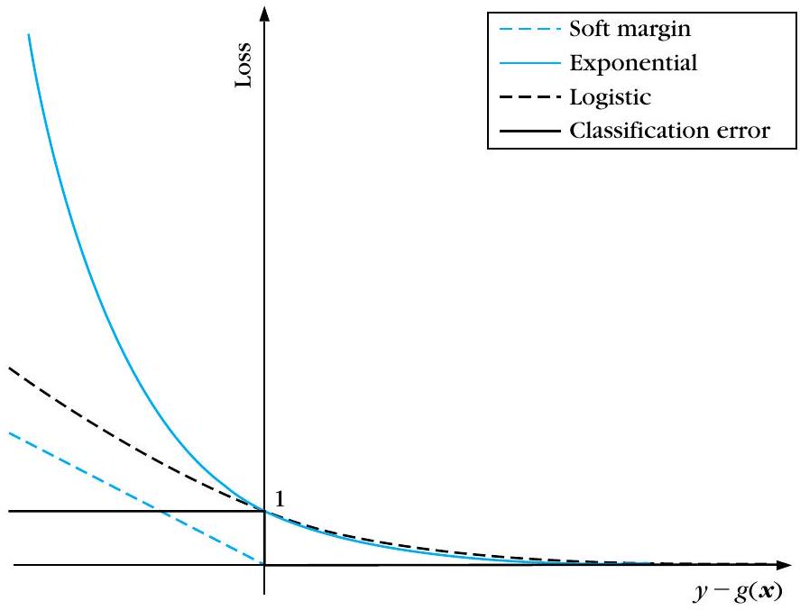
這在做什麼
兩個獨立小面板。上：kernel perceptron——環形分布的兩類資料在原空間線性不可分，但用高斯核 $K(\boldsymbol{x},\boldsymbol{x}')=\exp(-\gamma\|\boldsymbol{x}-\boldsymbol{x}'\|^2)$ 升維後，感知器（reward-and-punishment）可以收斂。每個點的計數器 $\alpha_i$ 用點的大小呈現，決策邊界由 $g(\boldsymbol{x})=\sum_i\alpha_iy_iK(\boldsymbol{x},\boldsymbol{x}_i)+\sum_i\alpha_iy_i$ 即時算出。下：四種損失函數——對 margin $z=y\,g(\boldsymbol{x})$ 疊畫 0/1、hinge、exponential、logistic 四條曲線，拖游標比對數值。
怎麼操作
拖動 $\gamma$ 滑桿（核寬度）會重新訓練感知器；按「重新訓練」重跑。下方拖動 $z$ 游標滑桿，readout 即時列出四種損失在該 $z$ 的數值。
觀察什麼
環形資料在原始空間無法用一條直線分開，但核感知器能收斂到全部分類正確——這就是 Cover 定理（升維後可分機率高）的威力。$\gamma$ 太小核太「鈍」可能收斂變慢；$\gamma$ 太大則邊界碎片化。損失曲線方面：hinge／exponential／logistic 都是 0/1 loss 的凸上界——$z<0$ 時遠大於 1，$z>0$ 時趨近 0 但不為 0。
正確結果基準
取 $z=0$：hinge $=\max(0,1-0)=1$、exponential $=e^0=1$、logistic $=\ln 2\approx0.6931$、0/1 loss $=1$（$z=0$ 按誤判算）。核感知器在預設 $\gamma=0.5$ 下應在數個 epoch 內收斂（count_misclas $=0$）。
損失函數：hinge $\max(0,1-z)$、exponential $e^{-z}$、logistic $\ln(1+e^{-z})$、0/1：$z\le0$ 記 1。
❓ 自我檢測：kernel perceptron 為什麼比原始感知器更有實用價值？
❓ 自我檢測：核化的歐氏距離分類器最後的判別式，形式上等同於什麼？
❓ 自我檢測：AdaBoost 所使用的損失函數是哪一個？
Representer 定理、核函數展開與模型稀疏化
▼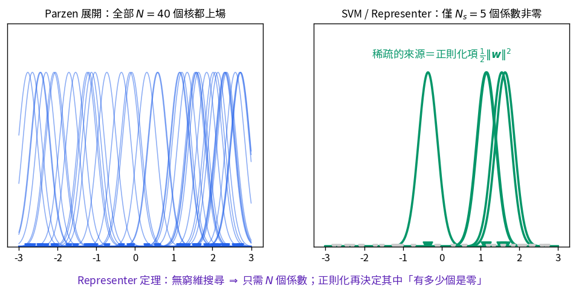
🤖 AI 生圖可用：重繪此示意圖的提示詞（結構化）
WHAT: Two panels sharing one horizontal axis. LEFT: about 40 thin Gaussian kernels, ALL drawn, with a tick under each — the Parzen expansion. RIGHT: the same 40 tick positions but only FIVE kernels actually drawn (thick), the other 35 flattened to the axis and greyed out — the SVM / Representer solution. A caption states that the source of sparsity is the regularisation term. WHY: The reader must see sparsity as a visible, countable difference, and understand that it does not come from the kernel but from the norm penalty in the cost function, which drives most coefficients to exactly zero. MUST show: (1) the same set of candidate centres in both panels; (2) a stark visual count difference (all vs a handful); (3) the greyed-out zero-coefficient centres still visible as ticks; (4) the attribution of sparsity to the regularisation term. AVOID: showing two unrelated sets of kernels; hiding the discarded centres completely. STYLE: clean scientific plot, white background, blue = dense, green = sparse.
一句話
就算在無窮維空間裡找解，最佳解也只是放在 $N$ 個訓練點上的 $N$ 個核的線性組合——無窮維問題被壓回有限維。
一、稀疏性從哪裡來
用高斯核代入 SVM 的解： $$ g(\boldsymbol{x})=\sum_{i=1}^{N_s}a_i\exp\Big(-\frac{\|\boldsymbol{x}-\boldsymbol{x}_i\|^2}{2\sigma^2}\Big)+w_0,\qquad a_i=\lambda_iy_i $$ 和 Parzen 展開幾乎一樣，但有兩個差別：(1) $g(\boldsymbol{x})$ 不是 pdf（積分不為 1）；(2) 最要命的差別是項數——Parzen 用全部 $N$ 個訓練點，SVM 只用支撐向量（落在 margin 內或分錯邊的點），實務上 $N_s\ll N$。這叫稀疏解（sparse solution）。
稀疏的兩個好處：計算資源只花在最相關的樣本上；而且稀疏與避免過擬合同向——真實資料有雜訊、類別重疊、離群點，模型不該去死記訓練集。（提醒：[5.10 節] 指出支撐向量太多時泛化反而會退化。）
稀疏性的來源是誰？ 答案是 margin 項。代價函數 $$ J(\boldsymbol{w},w_0,\boldsymbol{\xi})=\frac{1}{2}\|\boldsymbol{w}\|^2+C\sum_{i=1}^{N}I(\xi_i) $$ 裡的 $\|\boldsymbol{w}\|^2$ 可以看成正則化項：在盡量減少 margin 錯誤的同時，把解的範數壓「小」、壓「簡單」。這隱含地逼迫大多數 $\lambda_i$ 變成零，只留下最關鍵的樣本。（同樣的正則化思想，知識點 11 已經用來縮小神經網路了。）
二、Representer 定理
目標是求形如 $$ g(\boldsymbol{x})=\sum_{j=1}^{N}a_jK(\boldsymbol{x},\boldsymbol{x}_j) $$ 的分類器/迴歸器。這個形式的正當性來自 [Kime 71, Scho 02]：
Representer 定理：設 $\mathcal{L}(\cdot,\cdot):\mathcal{R}^2\mapsto[0,\infty)$ 是任意非負損失函數。則正則化代價 $$\sum_{i=1}^{N}\mathcal{L}(g(\boldsymbol{x}_i),y_i)+\Omega(\|g\|)$$ 在 RKHS $H$ 中的最小化解 $g(\cdot)\in H$，必定具有上述形式。其中 $\Omega(\cdot):[0,\infty)\mapsto\mathcal{R}$ 是嚴格單調遞增函數，$\|\cdot\|$ 是 $H$ 的範數。
為什麼震撼：雖然我們在（可能無窮維的）函數空間裡搜尋，最佳解卻是放在 $N$ 個訓練點上的 $N$ 個核的線性組合。無窮維的最佳化，變成 $N$ 個係數的最佳化。
三、範例：kernel least squares（把定理用起來）
最小化 $\sum_{i=1}^{N}(y_i-g(\boldsymbol{x}_i))^2$，代入 Representer 形式： $$ J(\boldsymbol{a})=\sum_{i=1}^{N}\Big(y_i-\sum_{j=1}^{N}a_jK(\boldsymbol{x}_i,\boldsymbol{x}_j)\Big)^2=(\boldsymbol{y}-\mathcal{K}\boldsymbol{a})^T(\boldsymbol{y}-\mathcal{K}\boldsymbol{a}) $$ 其中 $\mathcal{K}(i,j)\equiv K(\boldsymbol{x}_i,\boldsymbol{x}_j)$ 是 $N\times N$ 的 Gram 矩陣。對 $\boldsymbol{a}$ 求梯度為零： $$ \boldsymbol{a}=\mathcal{K}^{-1}\boldsymbol{y} \qquad\Longrightarrow\qquad g(\boldsymbol{x})=\boldsymbol{a}^T\boldsymbol{p}=\boldsymbol{y}^T\mathcal{K}^{-1}\boldsymbol{p} $$ （$\boldsymbol{p}\equiv[K(\boldsymbol{x},\boldsymbol{x}_1),\dots,K(\boldsymbol{x},\boldsymbol{x}_N)]^T$，前提是 $\mathcal{K}$ 可逆。）注意：這個解一點都不稀疏——所有 $a_j$ 通常都非零。
四、追求稀疏的各種路線
- RVM（relevance vector machine） [Tipp 01]：對 $\boldsymbol{a}$ 建條件機率模型，在貝氏框架下計算權重，用明確的先驗分布逼出稀疏。比 SVM 更稀疏，但複雜度更高：記憶體隨基底數平方成長、計算隨立方成長，大資料集不實用。（對照 SVM：記憶體線性、計算約在線性到二次之間 [Plat 99]。）
- 線上/時變自適應 [Kivi 04]：核化的 LMS 型演算法，最小化 $J(g_t)=\sum_{i=1}^{t}\mathcal{L}(g_t(\boldsymbol{x}_i),y_i)+\lambda\|g_t\|^2$，靠範數正則化達成稀疏。等價的約束形式更能凸顯意圖： $$ \text{minimize}\ \sum_{i=1}^{t}\mathcal{L}(g_t(\boldsymbol{x}_i),y_i)\quad\text{subject to}\quad \|g_t\|^2\le s $$ （用 Lagrange 乘子可證兩者在適當參數下等價 [Vapn 00]。）
- 投影/凸集方法 [Slav 08]：把解限制在 RKHS 中的超球內。有趣的是，這個約束等價於引入遺忘因子——演算法自動遺忘遠久的資料、專注於最近的樣本。複雜度隨「有效記憶」內的資料數線性成長。它把核化 NLMS [Saye 04]、核化仿射投影 [Slav 08a] 都納為特例，並且能用次微分取代梯度，因而可微與不可微的代價函數都能統一處理。
- 字典法（dictionary） [Enge 04, Slav 08a]：維護一個基底函數字典，新樣本若對字典中已有樣本的「相依度」低於門檻才加入。可證字典大小有限。缺點：複雜度隨字典大小平方成長（前兩者是線性）。
怎麼記：Representer 定理把「無窮維搜尋」化成「$N$ 個係數」；正則化項則決定這 $N$ 個係數裡有多少個是零。
這在做什麼
Representer 定理說：在 RKHS 裡最小化「資料項＋正則項」，最佳解必為 $g(\boldsymbol{x})=\sum_j a_jK(\boldsymbol{x},\boldsymbol{x}_j)$——無窮維問題被壓回 $N$ 個係數。本 demo 用帶雜訊的 1D 資料（$y=\sin x$＋雜訊，$N=9$）實作核脊迴歸：即時組出 Gram 矩陣 $\mathcal{K}$，用高斯消去法解封閉解，畫出擬合曲線 $g(\boldsymbol{x})=\boldsymbol{y}^T(\mathcal{K}+\mathcal{C}I)^{-1}\boldsymbol{p}$。
怎麼操作
拖動 $\mathcal{C}$（正則化強度，對數尺度）與 $\sigma$（高斯核頻寬）兩個滑桿，曲線即時更新。
觀察什麼
$\mathcal{C}$ 很小時 $(\mathcal{K}+\mathcal{C}I)\to\mathcal{K}$，解趨近 kernel least squares 的 $\mathcal{K}^{-1}\boldsymbol{y}$——曲線劇烈震盪、穿過每一個雜訊點（過擬合，且完全不平滑）；$\mathcal{C}$ 很大時 $\mathcal{C}I$ 主導，曲線被壓得又平又鈍（欠擬合）。$\sigma$ 控制每個核的影響範圍。好參數在兩者之間。
正確結果基準
封閉解（課本原式）：$\lambda=2\mathcal{C}(\mathcal{K}+\mathcal{C}I)^{-1}\boldsymbol{y}$、$g(\boldsymbol{x})=\boldsymbol{y}^T(\mathcal{K}+\mathcal{C}I)^{-1}\boldsymbol{p}$，展開係數 $a_i=[(\mathcal{K}+\mathcal{C}I)^{-1}\boldsymbol{y}]_i$（$\lambda=2\mathcal{C}\,a$ 的 $2\mathcal{C}$ 在 $\boldsymbol{w}=\frac{1}{2\mathcal{C}}\sum\lambda_i\phi(\boldsymbol{x}_i)$ 裡恰好消掉）。極端值核對：$\mathcal{C}\to0^+$ 時訓練點殘差 $\to 0$（完全內插）；$\mathcal{C}\to\infty$ 時 $g\to 0$。
kernel least squares（$\mathcal{C}=0$ 特例）：$\boldsymbol{a}=\mathcal{K}^{-1}\boldsymbol{y}$——通常完全不稀疏；ridge 多了 $\mathcal{C}I$，順便改善數值穩定性。
❓ 自我檢測：Representer 定理最重要的意涵是什麼？
❓ 自我檢測：SVM 解的稀疏性來自代價函數的哪一項？
❓ 自我檢測：kernel least squares 的解 $\boldsymbol{a}=\mathcal{K}^{-1}\boldsymbol{y}$ 有什麼性質上的缺點？
穩健統計迴歸與 ridge regression
▼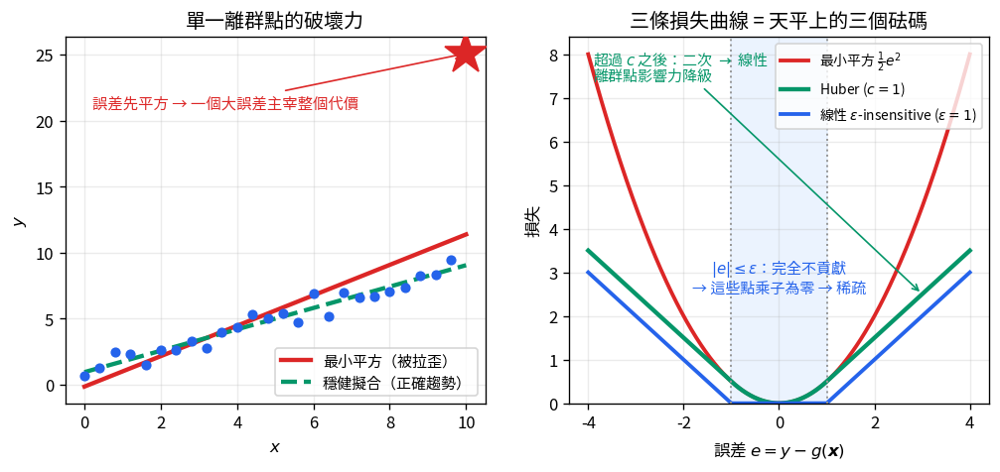
🤖 AI 生圖可用：重繪此示意圖的提示詞（結構化）
WHAT: Two panels. LEFT: a scatter along an upward trend plus ONE oversized red star far above the trend at the RIGHT-HAND EDGE (high leverage); two fitted lines — a solid red least-squares line visibly tilted towards the outlier and a green dashed line through the clean points. RIGHT: three loss curves against the residual — squared error, Huber (with the quadratic-to-linear transition at +/- c marked by vertical guides), and the linear epsilon-insensitive loss with the flat dead zone shaded. WHY: The reader must connect the squaring operation to the visible tilt, and then see the two cures directly on the loss curves: Huber demotes large errors from quadratic to linear, while the epsilon dead zone removes small errors from the problem entirely — which is where sparsity comes from. MUST show: (1) exactly one high-leverage outlier and two contrasted fitted lines; (2) the c transition points marked on the Huber curve; (3) the shaded epsilon dead zone annotated as the source of sparsity. AVOID: an outlier near the middle of the x-range (barely tilts the fit); showing only one fitted line; a bell curve with a red dot. STYLE: clean scientific plot, white background, red = LS, green = Huber, blue = epsilon.
一句話
最小平方怕離群點怕得要命——改用「對大誤差手下留情」的損失函數，一條線就不會被一個壞點拉歪。
一、為什麼最小平方不夠
迴歸任務：給定 $(y_i,\boldsymbol{x}_i)$，求 $g(\boldsymbol{x})$ 來估計 $y$。當資料分布長尾（long tails）時，最小平方的解會被少數幾個極大值的點（離群點）主導。標籤標錯也一樣：單獨一個標錯很多的訓練點，就能對解產生完全不成比例的影響。解法：換成 robust statistics loss function。
二、三種穩健損失
$$ \text{線性 }\epsilon\text{-insensitive：}\quad \mathcal{L}(g(\boldsymbol{x}),y)=|y-g(\boldsymbol{x})|_\epsilon\equiv\max(0,|y-g(\boldsymbol{x})|-\epsilon) $$ $$ \text{二次 }\epsilon\text{-insensitive：}\quad \mathcal{L}(g(\boldsymbol{x}),y)=|y-g(\boldsymbol{x})|_\epsilon^2\equiv\max(0,|y-g(\boldsymbol{x})|^2-\epsilon) $$ $$ \text{Huber loss：}\quad \mathcal{L}(g(\boldsymbol{x}),y)=\begin{cases}c|y-g(\boldsymbol{x})|-\dfrac{c^2}{2} & |y-g(\boldsymbol{x})|\gt c\\[6pt] \dfrac{1}{2}(y-g(\boldsymbol{x}))^2 & |y-g(\boldsymbol{x})|\le c\end{cases} $$ Huber 的核心機制：誤差絕對值超過 $c$ 之後，貢獻從二次降為線性——離群點的影響力從「平方級」降到「線性級」，最佳化因此不再被它綁架。
三、$\epsilon$-insensitive 迴歸的完整最佳化（SVR）
用兩個鬆弛變數 $\xi,\xi^*$： $$ \text{minimize}\quad J(\boldsymbol{w},w_0,\boldsymbol{\xi},\boldsymbol{\xi}^*)=\frac{1}{2}\|\boldsymbol{w}\|^2+C\Big(\sum_{i=1}^{N}\xi_i+\sum_{i=1}^{N}\xi_i^*\Big) $$ $$ \text{s.t.}\quad y_i-\langle\boldsymbol{w},\phi(\boldsymbol{x}_i)\rangle-w_0\le\epsilon+\xi_i^*,\qquad \langle\boldsymbol{w},\phi(\boldsymbol{x}_i)\rangle+w_0-y_i\le\epsilon+\xi_i,\qquad \xi_i,\xi_i^*\ge0 $$ 解為 $\boldsymbol{w}=\sum_{i=1}^{N}(\lambda_i^*-\lambda_i)\phi(\boldsymbol{x}_i)$。從 KKT 條件可讀出三條非常有用的結論：
- 絕對誤差嚴格小於 $\epsilon$ 的點 → $\lambda_i=\lambda_i^*=0$（不貢獻）。它們是分類 SVM 中「嚴格落在 margin 外」那些點的對應物。
- 支撐向量 = 滿足 $|y_i-\langle\boldsymbol{w},\phi(\boldsymbol{x}_i)\rangle-w_0|\ge\epsilon$ 的點。
- 誤差嚴格大於 $\epsilon$ 的點 → $\lambda_i=C$ 或 $\lambda_i^*=C$（頂到上界）；恰等於 $\epsilon$ 的點則 $0\le\lambda_i(\lambda_i^*)\le C$。
另外 $\xi_i,\xi_i^*$ 不能同時非零，$\lambda_i,\lambda_i^*$ 亦然。
對偶問題： $$ \text{maximize}\quad \sum_{i=1}^{N}y_i(\lambda_i^*-\lambda_i)-\epsilon\sum_{i=1}^{N}(\lambda_i^*+\lambda_i)-\frac{1}{2}\sum_{i,j}(\lambda_i^*-\lambda_i)(\lambda_j^*-\lambda_j)K(\boldsymbol{x}_i,\boldsymbol{x}_j) $$ $$ \text{s.t.}\quad 0\le\lambda_i,\lambda_i^*\le C,\qquad \sum_{i=1}^{N}\lambda_i^*=\sum_{i=1}^{N}\lambda_i $$ 最終迴歸器 $$ g(\boldsymbol{x})=\sum_{i=1}^{N}(\lambda_i^*-\lambda_i)K(\boldsymbol{x},\boldsymbol{x}_i)+w_0 $$ 稀疏性正是由「誤差小於 $\epsilon$ 的點乘子為零」提供的——$\epsilon$ 就是稀疏度旋鈕。
彩蛋：令 $\epsilon=0$ 且 $y_i=\pm1$，這個迴歸問題就變回第 3.7.2 節的 SVM 分類問題。相似性不是巧合。
四、Ridge regression（脊迴歸）
在二次 $\epsilon$-insensitive loss 中令 $\epsilon=0$、$w_0=0$，並把不等式約束改成等式，得 $$ \text{minimize}\quad J(\boldsymbol{w},\boldsymbol{\xi})=\mathcal{C}\|\boldsymbol{w}\|^2+\sum_{i=1}^{N}\xi_i^2 \qquad\text{s.t.}\quad y_i-\langle\boldsymbol{w},\phi(\boldsymbol{x}_i)\rangle=\xi_i $$ 其中 $\mathcal{C}=\frac{1}{2C}$。這就是在 RKHS 中正則化版的最小平方。對偶解有漂亮的閉式： $$ \boldsymbol{w}=\frac{1}{2\mathcal{C}}\sum_{i=1}^{N}\lambda_i\phi(\boldsymbol{x}_i),\qquad [\lambda_1,\dots,\lambda_N]^T=2\mathcal{C}(\mathcal{K}+\mathcal{C}I)^{-1}\boldsymbol{y} $$ $$ g(\boldsymbol{x})=\boldsymbol{y}^T(\mathcal{K}+\mathcal{C}I)^{-1}\boldsymbol{p} $$ 與 kernel least squares（知識點 21）唯一的差別，就是多了 $\mathcal{C}I$ 這一項。
取捨（教科書原話的精神）：ridge regression 的優點是乾淨的閉式解；缺點是既然取 $\epsilon=0$，就失去了稀疏性。$\epsilon$-insensitive 損失下誤差小於 $\epsilon$ 的點不貢獻，$\epsilon=0$ 就沒有這種點了。天下沒有白吃的午餐！
與第 3 章接軌：用線性核 $K(\boldsymbol{x}_i,\boldsymbol{x}_j)=\boldsymbol{x}_i^T\boldsymbol{x}_j$ 並解原始（primal）問題： $$ \boldsymbol{w}=(X^TX+\mathcal{C}I)^{-1}X^T\boldsymbol{y} $$ 與式 (3.45) 的最小平方解只差 $\mathcal{C}I$。實務上當 $X^TX$ 行列式很小、反矩陣不穩時，沿對角線加一個小正數正是常用的數值穩定手法。對偶形式則給 $$ \boldsymbol{w}=X^T(XX^T+\mathcal{C}I)^{-1}\boldsymbol{y} $$ 凸規劃保證兩式相同（可用代數直接驗證）。
怎麼記：Huber = 大誤差降級為線性；$\epsilon$-insensitive = 小誤差直接忽略（換來稀疏）；ridge = $\epsilon=0$ 換來閉式解（賠掉稀疏）。三者都是同一個天平上的不同砝碼。
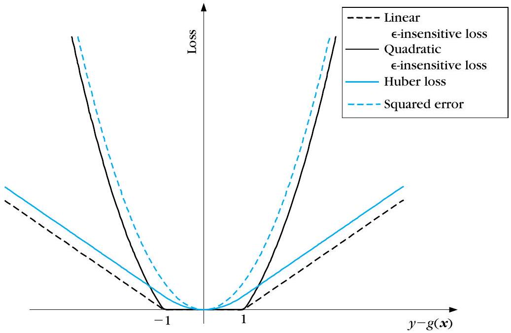
這在做什麼
展示**Huber 穩健損失與 $\epsilon$-不敏感損失（SVR）之抗離群點（Outlier）特質**。對比平方損失 $(y-f(x))^2$、SVR 的 $\epsilon$-不敏感損失 $\max(0, |e|-\epsilon)$ 與 Huber 損失（小誤差二次、大誤差線性），並用迭代重加權最小二乘法（IRLS）解出抗離群點的 Huber 回歸直線。
怎麼操作
- 拖動**「Huber 臨門門檻 $\delta$」**與**「SVR 不敏感帶 $\epsilon$」**滑桿：即時觀察損失函數形狀與 IRLS 加權變化。
- 點擊**「加入 / 移除離群點」**：親自驗證當數據存在極端離群點時，普通最小二乘線（OLS）如何被嚴重拉偏，而 Huber 穩健線如何保持穩定。
觀察什麼
- **無離群點時**：Huber 回歸線與普通最小二乘線（OLS）幾乎完全重合。
- **存在離群點時**：普通最小二乘線（紅色虛線）因平方損失倍增被極端點牽著走；Huber 穩健線（綠色實線）將大誤差降為線性懲罰，完美貼合真實主線！
理論基準與公式
Huber 損失函數與 IRLS 重加權公式：
$$L_\delta(e) = \begin{cases} \frac{1}{2}e^2, & |e| \le \delta \\ \delta|e| - \frac{1}{2}\delta^2, & |e| > \delta \end{cases}, \qquad w_i = \begin{cases} 1, & |e_i| \le \delta \\ \frac{\delta}{|e_i|}, & |e_i| > \delta \end{cases}$$
❓ 自我檢測：Huber 損失函數對抗離群點的機制是什麼？
❓ 自我檢測：在 $\epsilon$-insensitive 迴歸中，稀疏性是由什麼提供的？
❓ 自我檢測：kernel ridge regression 與 kernel least squares 的解，差別在哪裡？
決策樹：OBCT、分裂準則與剪枝
▼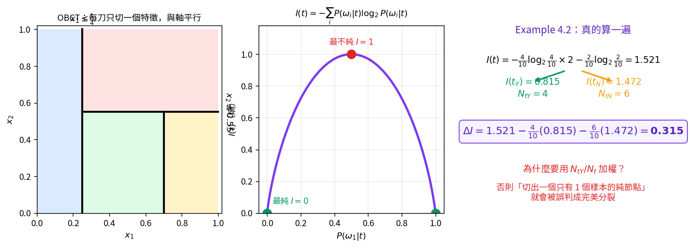
🤖 AI 生圖可用：重繪此示意圖的提示詞（結構化）
WHAT: Three panels. LEFT: a rectangle partitioned by axis-parallel cuts into four coloured regions, each cut labelled with its single-feature question. MIDDLE: the binary entropy curve I(t) against P, with the maximum at P = 0.5 marked "most impure" and the two endpoints marked "purest". RIGHT: a worked numerical card for Example 4.2 showing I(t), I(t_Y), I(t_N) with their sample counts, the weighted formula, and the final answer 0.315, plus a note explaining why the children must be weighted by N_tY/N_t. WHY: The reader must see the mechanism (impurity must drop) AND the reason for the sample weighting: without it, carving off a single-sample pure node would score as a perfect split. MUST show: (1) axis-parallel cuts each tied to one feature question; (2) the entropy maximum and minima marked; (3) the arithmetic actually carried out to 0.315; (4) the weighting rationale. AVOID: an oblique decision boundary; an entropy curve with no marked extremes; stating the formula without doing the arithmetic. STYLE: flat vector plus clean plots, white background, pastel region fills.
一句話
不畫一條複雜的邊界，改問一連串簡單的是非題——每問一次，就把特徵空間切一刀。
一、是什麼
決策樹是多階段決策系統：沿著樹的節點路徑做一連串決策，逐步排除類別直到抵達葉節點。最流行的是把空間切成與座標軸平行的超矩形——每次只針對單一特徵問「$x_i\le\alpha$？」，這叫 OBCT（ordinary binary classification tree）。（也有切成凸多面體或球片的樹。）當類別數很多時，這種架構特別有優勢；而且可能不必測完所有特徵就能下決定。
二、四大設計要素（訓練階段必須決定）
- 候選問題集：每個節點 $t$ 對應訓練集的一個子集 $X_t$；分裂就是把 $X_t$ 切成兩個互斥且窮盡的子集： $$ X_{tY}\cap X_{tN}=\emptyset,\qquad X_{tY}\cup X_{tN}=X_t $$ 根節點對應整個 $X$。
- 分裂準則：從候選問題中挑出最好的那一個。
- 停止分裂規則：什麼時候宣告節點為葉。
- 類別指派規則：葉節點該標哪一類。
三、候選問題集（有限化）
理論上門檻 $\alpha$ 在區間內連續變化 → 無窮多問題。實務上：特徵 $x_k$ 在 $X_t$ 中最多只有 $N_{tk}\le N_t$ 個相異值，取相鄰相異值的中點當門檻 $\alpha_{kn}$ 即可。所有特徵合計候選問題數為 $\sum_{k=1}^{l}N_{tk}$——有限。
四、分裂準則：節點不純度
目標很直白：分裂後的子集要比父節點更「類別均質」。例如四類任務中 $X_t$ 各類等量（最不純），若能把 $\omega_1,\omega_2$ 分到 $X_{tY}$、$\omega_3,\omega_4$ 分到 $X_{tN}$，兩個子集就都變「純」了。
不純度定義（就是 Shannon 熵）： $$ I(t)=-\sum_{i=1}^{M}P(\omega_i|t)\log_2 P(\omega_i|t) $$ 性質：所有機率都等於 $1/M$ 時最大（最不純）；所有資料屬同一類時為零（最純，約定 $0\log0=0$）。機率用比例 $N_t^i/N_t$ 估計。
不純度下降量：分裂後 $N_{tY}$ 個點進 Yes、$N_{tN}$ 個進 No， $$ \Delta I(t)=I(t)-\frac{N_{tY}}{N_t}I(t_Y)-\frac{N_{tN}}{N_t}I(t_N) $$ 選使 $\Delta I(t)$ 最大的那個問題。 注意子節點的不純度是用樣本數加權的——只讓小子集變純沒用。
Example 4.2（親手算一遍）：$N_t=10$，三類分別 4、4、2 個；分裂後 $X_{tY}$ 有 $\omega_1$ 三個、$\omega_2$ 一個（共 4），$X_{tN}$ 有 $\omega_1$ 一個、$\omega_2$ 三個、$\omega_3$ 兩個（共 6）。 $$ I(t)=-\tfrac{4}{10}\log_2\tfrac{4}{10}-\tfrac{4}{10}\log_2\tfrac{4}{10}-\tfrac{2}{10}\log_2\tfrac{2}{10}=1.521 $$ $$ I(t_Y)=-\tfrac{3}{4}\log_2\tfrac{3}{4}-\tfrac{1}{4}\log_2\tfrac{1}{4}=0.815,\qquad I(t_N)=-\tfrac{1}{6}\log_2\tfrac{1}{6}-\tfrac{3}{6}\log_2\tfrac{3}{6}-\tfrac{2}{6}\log_2\tfrac{2}{6}=1.472 $$ $$ \Delta I(t)=1.521-\tfrac{4}{10}(0.815)-\tfrac{6}{10}(1.472)=0.315 $$
五、停止分裂與類別指派
- 停止：$\Delta I(t)$ 的最大值小於門檻 $T$；或 $X_t$ 已經夠小；或 $X_t$ 已經純（全屬同一類）。
- 指派：多數決 $j=\arg\max_i P(\omega_i|t)$。
六、建樹演算法
從根節點開始，X_t = X
For 每個新節點 t
For 每個特徵 x_k, k = 1..l
For 每個候選門檻 α_kn, n = 1..N_tk
依「x_k(i) ≤ α_kn ?」產生 X_tY 與 X_tN
計算不純度下降 ΔI(t)
End
選出對 x_k 而言下降最大的 α_kn0
End
選出使整體下降最大的 x_k0 與 α_k0n0
若滿足停止規則 → 宣告 t 為葉，指派類別標籤
否則 → 產生子節點 t_Y、t_N（子集 X_tY、X_tN）
End
七、五個評註（考點密集）
- 不純度準則的選擇沒那麼要緊：[Brei 84] 指出最終樹的性質對分裂準則的選擇相當不敏感（雖仍是問題相關的）。
- 樹的大小才是關鍵：跟多層感知器一樣，太大就會學到訓練集的細節而泛化不佳。經驗顯示用「不純度下降門檻」當停止規則做不出對的樹——常常停太早或太晚。主流做法：先長成大樹，再依剪枝準則剪（哲學與 MLP 剪枝相同）。常用準則是把錯誤機率估計與複雜度項（如終端節點數）結合 [Brei 84, Ripl 94]。
- 致命弱點：高變異（high variance）。訓練集小小的改變，可能長出完全不同的樹。原因是樹的階層性：高處節點犯的錯會一路傳到底下所有葉節點。
- Bagging（bootstrap aggregating） [Brei 96, Gran 04]：從 $X$ 有放回地均勻抽樣，造出 $B$ 個變體 $X_1,\dots,X_B$，各建一棵樹 $T_i$，最後多數決。這能降低變異、改善泛化。
- Random forests [Brei 01]：bagging + 隨機特徵選擇——每個節點只從隨機挑出的 $F$ 個特徵中選最好的來分裂。這額外的隨機性對效能有實質改善。
- 可以不平行於座標軸：問「$\sum_{k=1}^{l}c_kx_k\le\alpha$？」能得到更好的空間分割，但訓練變複雜 [Quin 93]。也有模糊決策樹，允許特徵向量對節點的部分歸屬 [Suar 99]。
- 為什麼決策樹這麼流行：OBCT 只對單一變數做二元分裂，分類一個樣本可能只要幾次測試；能自然處理數值型與類別型混合的變數；結構簡單所以易於解釋。
八、與神經網路的對照
兩者都在造複雜決策邊界，但決策方式根本不同：決策樹用階層式、循序的決策函數；神經網路用平行的、軟性（非最終）的決策。訓練哲學也不同。不過已證明線性樹分類器可以被適當地映射成多層感知器結構 [Seth 90, Seth 91, Park 94]。比較研究顯示：分類錯誤率上多層感知器占優，訓練時間上決策樹占優 [Brow 93]。
這在做什麼
展示**二元分類樹（OBCT）的 Shannon 熵不純度（Entropy Impurity）與分裂資訊增益 $\Delta I(t)$**。本互動 Demo **100% 精確重現課本 Example 4.2** 的黃金數據與算式，讓使用者親手滑動切割門檻，找出使資訊增益最大化的最佳分裂點。
怎麼操作
- 拖動 **分裂門檻 $\alpha$ 滑桿**，在 1D 特徵軸上移動垂直切割線。
- 在畫布上**拖曳 10 個資料點**（4個藍點 $\omega_1$, 4個橘點 $\omega_2$, 2個綠點 $\omega_3$），即時觀察子節點不純度變化。
- 點擊「重置 Example 4.2 原始數據」還原門檻至 $\alpha = 3.0$（即切在 $x=2.8$ 與 $x=3.5$ 之間）。
觀察什麼
- **Example 4.2 黃金驗證點（$\alpha = 3.0$）**：
• 父節點 $N_t = 10$ ($\omega_1:4, \omega_2:4, \omega_3:2$) $\implies I(t) = 1.521$
• 左子節點 $N_{tY} = 4$ ($\omega_1:3, \omega_2:1, \omega_3:0$) $\implies I(t_Y) = 0.815$
• 右子節點 $N_{tN} = 6$ ($\omega_1:1, \omega_2:3, \omega_3:2$) $\implies I(t_N) = 1.472$
• 不純度下降量 $\Delta I(t) = 1.521 - \frac{4}{10}(0.815) - \frac{6}{10}(1.472) = \mathbf{0.315}$！ - 滑動至其他切點時，$\Delta I(t)$ 均小於 $0.315$，證明 $\alpha = 3.0$ 為理論最優分裂門檻。
理論基準與公式
Shannon 熵不純度與不純度下降量（資訊增益）：
$$I(t) = -\sum_{i=1}^M P(\omega_i \mid t) \log_2 P(\omega_i \mid t), \qquad \Delta I(t) = I(t) - \frac{N_{tY}}{N_t} I(t_Y) - \frac{N_{tN}}{N_t} I(t_N)$$
❓ 自我檢測：節點不純度下降量 $\Delta I(t)$ 中，為什麼子節點的不純度要用 $N_{tY}/N_t$、$N_{tN}/N_t$ 加權？
❓ 自我檢測：Example 4.2 中計算得到的不純度下降量 $\Delta I(t)$ 是多少？
❓ 自我檢測：決策樹「高變異」的根本原因是什麼？bagging 為何有幫助？
結合分類器：product、sum、多數投票與貝氏觀點
▼🤖 AI 生圖可用：重繪此示意圖的提示詞（結構化）
WHAT: Two panels. LEFT: a grouped bar chart of five classifiers' posterior estimates for the correct and the wrong class, where four classifiers are right and ONE outputs nearly zero for the correct class; an annotation box gives the actual numbers for the product rule (which flips to the WRONG class) and the sum rule (which stays correct). RIGHT: curves of majority-vote accuracy P_c(L) against the number of classifiers L for p = 0.6, 0.55 and 0.45, showing monotone rise towards 1, rise, and fall towards 0 respectively. WHY: The reader must see two separate failure modes: the product rule is destroyed by a single near-zero output (one veto), and the seductive "accuracy tends to 1" result rests entirely on the independence assumption, which does not hold in practice and gets worse as L grows. MUST show: (1) explicit product and sum values with the resulting decisions; (2) the near-zero output visibly annotated; (3) the p > 0.5 / p < 0.5 divergence with the 0.5 line. AVOID: bars without the computed product/sum values; a single p curve. STYLE: clean scientific plot, white background, green = correct class, red = wrong class.
一句話
即使是「最好」的那個分類器，也會在別人答對的樣本上出錯——互補資訊就是結合分類器的全部價值。
核心觀察（必記）
我們設計了一堆候選分類器，其中一個錯誤率最低。但不同分類器會在不同樣本上失敗。所以就算是「最佳」分類器，也會在其他分類器答對的樣本上栽跟頭。結合的目的，就是把散落在各分類器裡的互補資訊挖出來。
設定
$L$ 個已訓練好的分類器，對 $M$ 類問題，各自輸出後驗機率估計 $P_j(\omega_i|\boldsymbol{x})$，$j=1,\dots,L$。目標是綜合出更好的 $P(\omega_i|\boldsymbol{x})$。優雅的做法是用資訊論準則 [Mill 99]，即 Kullback–Leibler（KL）機率距離。
一、幾何平均規則（product rule）
最小化平均 KL 距離 $D_{av}=\frac{1}{L}\sum_{j=1}^{L}D_j$，其中 $$ D_j=\sum_{i=1}^{M}P(\omega_i|\boldsymbol{x})\ln\frac{P(\omega_i|\boldsymbol{x})}{P_j(\omega_i|\boldsymbol{x})} $$ 在 $\sum_i P_j(\omega_i|\boldsymbol{x})=1$ 的約束下用 Lagrange 乘子最佳化，得 $$ P(\omega_i|\boldsymbol{x})=\frac{1}{C}\prod_{j=1}^{L}\big(P_j(\omega_i|\boldsymbol{x})\big)^{1/L},\qquad C=\sum_{i=1}^{M}\prod_{j=1}^{L}\big(P_j(\omega_i|\boldsymbol{x})\big)^{1/L} $$ 所有乘積都被開同樣的 $1/L$ 次方（與類別無關），丟掉類別無關項後分類規則就是取乘積最大者： $$ \max_{\omega_i}\ \prod_{j=1}^{L}P_j(\omega_i|\boldsymbol{x}) $$
二、算術平均規則（sum rule）
KL 距離不對稱（嚴格說不是距離）。把兩個引數對調： $$ D_j=\sum_{i=1}^{M}P_j(\omega_i|\boldsymbol{x})\ln\frac{P_j(\omega_i|\boldsymbol{x})}{P(\omega_i|\boldsymbol{x})} $$ 同樣最佳化，得到完全不同的結果： $$ P(\omega_i|\boldsymbol{x})=\frac{1}{L}\sum_{j=1}^{L}P_j(\omega_i|\boldsymbol{x}) $$ 反直覺處：只是把 KL 的兩個引數對調，product rule 就變成 sum rule——這兩個看似「隨便選一個」的規則，其實各有嚴謹的資訊論出身。
該用哪個？ 理論上沒有偏好的依據。實務經驗 [Mill 99]：product rule 常常較好，但當某些分類器輸出接近零時會很不可靠（乘積被一個接近零的因子直接歸零——一票否決）。
三、多數投票規則（hard rule）
product 與 sum 屬於 soft 規則；hard 規則因為簡單、穩健也很流行。多數投票：至少 $l_c$ 個分類器同意才決定， $$ l_c=\begin{cases}\dfrac{L}{2}+1, & L\text{ 為偶數}\\[6pt] \dfrac{L+1}{2}, & L\text{ 為奇數}\end{cases} $$ 否則拒絕決策（拒絕既不算對也不算錯）。
三個假設下的理論結果（$L$ 為奇數、每個分類器正確率同為 $p$、各分類器決策彼此獨立）： $$ P_c(L)=\sum_{m=l_c}^{L}\binom{L}{m}p^m(1-p)^{L-m} $$ 當 $L\ge3$：
- $p\gt 0.5$ → $P_c(L)$ 隨 $L$ 單調遞增且 $P_c(L)\rightarrow1$。
- $p\lt 0.5$ → 單調遞減且 $\rightarrow0$。
- $p=0.5$ → 恆為 0.5。
這結論有點驚人：只要每個分類器比隨機猜好一點點，結合起來就能趨近 100%？那豈不是勝過最佳貝氏分類器？答案當然是不能——秘密藏在第三個假設（獨立性），它在現實中不成立。而且 $L$ 越大，獨立性假設越不切實際。不過這個分析仍提供了理論框架，說明實驗上觀察到的普遍趨勢：分類器越多，正確率通常越高。
更細緻的結果：[Kunc 03] 指出結合相依分類器時，多數投票不保證改善效能；他們導出了準確度的上下界（以 $p$、$L$、相依程度表示），並發現相依性不必然有害——訓練具有特定相依模式的分類器甚至可能有益。[Nara 05] 在不假設獨立的情況下推導了二類問題的上下界，把問題當成約束最佳化處理。
怎麼製造獨立性？ 三條路：
- 同一特徵空間、不同資料點：用 bootstrap 等重抽樣（bagging 屬於此類）。這對不穩定分類器（輸入小變動導致輸出大變動）最有效——樹分類器與大型神經網路正是典型的不穩定分類器。
- Stacking [Wolpe 92]：用被排除在訓練集之外的資料點上的個別分類器輸出，來訓練組合器（輪流排除，精神同 leave-one-out）。
- 不同特徵子空間 [Ho 98]：每個分類器用不同的特徵子集訓練。注意：多數投票完全不用改（只數硬決策）；但 soft 規則就有問題了——各分類器看的是不同的輸入向量，輸出的後驗機率不再是同一個函數值的估計。[Kitt 98] 用貝氏框架為這種情境下的 soft 規則辯護。
四、貝氏觀點
設 $\boldsymbol{x}_i\in\mathcal{R}^{l_i}$ 是同一個樣本在第 $i$ 個分類器眼中的特徵向量（維度可不同）。求最大後驗聯合機率： $$ P(\omega_i|\boldsymbol{x}_1,\dots,\boldsymbol{x}_L)=\max_{k=1}^{M}P(\omega_k|\boldsymbol{x}_1,\dots,\boldsymbol{x}_L) =\max_{k}\frac{P(\omega_k)p(\boldsymbol{x}_1,\dots,\boldsymbol{x}_L|\omega_k)}{p(\boldsymbol{x}_1,\dots,\boldsymbol{x}_L)} $$ 再次假設統計獨立 $p(\boldsymbol{x}_1,\dots,\boldsymbol{x}_L|\omega_k)=\prod_{j=1}^{L}p(\boldsymbol{x}_j|\omega_k)$，代入貝氏規則 $p(\boldsymbol{x}_j|\omega_k)=P(\omega_k|\boldsymbol{x}_j)p(\boldsymbol{x}_j)/P(\omega_k)$，丟掉類別無關項後： $$ \max_{k=1}^{M}\big(P(\omega_k)\big)^{1-L}\prod_{j=1}^{L}P(\omega_k|\boldsymbol{x}_j) $$ 又是 product rule，這次帶著貝氏的祝福。 但它建立在兩個假設上：(1) 統計獨立；(2) 分類器輸出確實足夠逼近真實的 $P(\omega_k|\boldsymbol{x}_j)$。[Kitt 98] 的敏感度分析顯示：product rule 對這種逼近誤差非常敏感；sum rule 則對誤差更有韌性，實務上常勝過 product rule。
有趣的是，sum rule 可以從上式在假設 $P(\omega_k|\boldsymbol{x})\approx P(\omega_k)(1+\delta)$（$\delta$ 很小）下導出——這個假設強得離譜（意味著看了 $\boldsymbol{x}$ 之後幾乎沒獲得任何類別資訊，即任務極難）。理論上很不討喜，實務上卻很好用。
另一個視角 [Tume 95]：從偏差–變異看。若各分類器對後驗機率的估計是低偏差的，在獨立假設下平均輸出可降低變異 → 錯誤率下降。這個觀點誘使人選大型分類器（自由參數多 → 低偏差、高變異），再靠平均把變異壓下來。[Fume 05] 推廣到加權平均。
其他規則：max、min、median，理由是下列不等式鏈 $$ \prod_{j=1}^{L}P(\omega_k|\boldsymbol{x}_j)\le\min_{j}P(\omega_k|\boldsymbol{x}_j)\le\frac{1}{L}\sum_{j=1}^{L}P(\omega_k|\boldsymbol{x}_j)\le\max_{j}P(\omega_k|\boldsymbol{x}_j) $$ 最大化這些界即可。離群值出現時，sum 會被極端值主導 → median 更穩健：$\max_k \text{median}\{P(\omega_k|\boldsymbol{x}_j)\}$。
五、實驗證據（[Jain 00]，12 個分類器 × 5 種結合規則 × 6 組特徵集，手寫數字 0–9）
- 沒有一種結合規則在所有情況都最好——每個案例都「偏好」自己的規則。
- 每個案例中，五種規則裡總有一些比最佳的單一分類器還差——結合不必然改善效能。
- 有些案例，五種規則沒有一種贏過最佳單一分類器。
- 最重要的趨勢：把「同一分類器在不同特徵集上的變體」結合起來，效果顯著優於把「不同分類器在同一特徵集上」結合。讓每個分類器看不同的特徵集，給結合器更多改善空間。
六、多樣性（diversity）
既然全部分類器都同意時結合毫無意義，多樣性就是關鍵。多樣性沒有正式定義，只有各種量測：
- 變異數 [Germ 92]：對硬決策，令 $\omega_i(\boldsymbol{x}_j)$ 為第 $i$ 個分類器對 $\boldsymbol{x}_j$ 的預測，$\bar{\omega}(\boldsymbol{x}_j)$ 為「平均」標籤（硬決策時可取最常出現者）。定義 $$ d\big(\omega_i(\boldsymbol{x}_j),\bar{\omega}(\boldsymbol{x}_j)\big)=\begin{cases}1 & \omega_i(\boldsymbol{x}_j)\neq\bar{\omega}(\boldsymbol{x}_j)\\ 0 & \text{否則}\end{cases}, \qquad V=\frac{1}{NL}\sum_{j=1}^{N}\sum_{i=1}^{L}d\big(\omega_i(\boldsymbol{x}_j),\bar{\omega}(\boldsymbol{x}_j)\big) $$ $V$ 大 → 多樣性高。
- 其他：分類器輸出間的互資訊 [Kang 00]、$Q$ 統計量 [Kunc 03]；綜述見 [Kunc 03a, Akse 06]。[Rodr 06] 的 Rotation Forest 同時兼顧準確度與多樣性。
冷水一盆：no panacea theorem [Hu 08]——若結合函數是連續且 diverse 的，永遠可以造出一個機率分布，讓這個結合方案表現很差。換句話說，結合分類器必須謹慎考慮，沒有萬靈丹。
實務結論：sum average 與多數投票最常用。[Kitt 03] 指出：誤差機率為常態分布時 sum 勝過投票；重尾分布時投票可能更好。
這在做什麼
展示**分類器結合（Classifier Ensemble）的 Sum Rule vs Product Rule 對比，以及多數決（Majority Voting）正確率提升公式**。對比 Sum Rule（加總平均，穩健抗噪）與 Product Rule（連乘歸一，對極端值脆弱）；並驗證多數決正確率 $P_c(L) = \sum_{m = \lceil(L+1)/2\rceil}^L \binom{L}{m} p^m (1-p)^{L-m}$（三個臭皮匠頂個諸葛亮）。
怎麼操作
- 調整**「3 個分類器個自估計後驗機率 $P_1, P_2, P_3$」**：點擊「極端測試」觀察其中一個分類器報出 $0.01$ 時，Product Rule 直接崩潰歸零，而 Sum Rule 依然穩健。
- 調整**「分類器數量 $L$（奇數 3~15）」**與**「個體準率 $p$」**：觀察多數決曲線 $P_c(L)$ 的 S 形提升效應。
觀察什麼
- **Sum Rule vs Product Rule**：當 $P_3 \to 0$ 時，Product Rule 被單一拖油瓶拖累（連乘全歸零），Sum Rule 平均防禦力強。
- **多數決 S 曲線**：只要單個分類器正確率 $p > 0.5$，隨著分類器數量 $L$ 增加，$P_c(L)$ 迅速逼近 100%（當 $p=0.7, L=3$ 時，$P_c(3) = 0.784$）。
理論基準與公式
多數決累積機率與結合規則：
$$P_c(L) = \sum_{m = \lceil \frac{L+1}{2} \rceil}^L \binom{L}{m} p^m (1-p)^{L-m}, \qquad P_{\text{sum}} = \frac{1}{L}\sum P_j, \qquad P_{\text{prod}} \propto \prod P_j$$
❓ 自我檢測：product rule 與 sum rule 在推導上的差別是什麼？
❓ 自我檢測：多數投票「正確率隨 $L$ 遞增趨近 1」的結論為何不會勝過最佳貝氏分類器？
❓ 自我檢測：[Jain 00] 的實驗中，哪一種結合方式的改善最顯著？
❓ 自我檢測：為什麼 sum rule 在實務上常比 product rule 更可靠？
Boosting 與 AdaBoost：把「弱」變「強」
▼🤖 AI 生圖可用：重繪此示意圖的提示詞（結構化）
WHAT: Three panels. LEFT: the curve alpha_m = 0.5 ln((1-P_m)/P_m) against the weighted error P_m, with the point (0.5, 0) marked and the three regimes annotated — large positive weight, zero voice, and NEGATIVE weight (use the answer inverted). MIDDLE: a paired bar chart of sample weights before and after one round, where the three misclassified samples grow and all the others shrink. RIGHT: training and test error against iteration on a log x-axis, with a vertical marker at the point where training error hits ZERO while the test error is still falling. WHY: The reader must see the whole causal loop: alpha is derived from the weighted error, alpha drives the weight update, hard samples gain influence by persistently failing — and the resulting classifier is oddly immune to overfitting, with test error still improving long after training error is zero. MUST show: (1) the three alpha regimes including the negative branch; (2) exactly the misclassified bars growing and the rest shrinking; (3) training error reaching zero with test error still decreasing. AVOID: showing only the final error curves; a weight chart where all bars move the same way; omitting the negative-alpha regime. STYLE: clean scientific plots, white background, purple/red/green/blue.
一句話
一個只比亂猜好一點的分類器，反覆針對「上次做錯的樣本」重新訓練並加權投票——訓練誤差可以被壓到任意低。
一、根源問題
[Vali 84, Kear 94] 問了一個看似不可能的問題：一個「弱」學習演算法（只比隨機猜測好一點點）能不能被「提升」成錯誤率很好的強演算法？
機制：核心是 base classifier（弱分類器）。反覆使用它，但每一輪都用不同的訓練子集，或不同的樣本權重分布——而這個分布每輪都給「最難的」（被分錯的）樣本更多權重。最終分類器是這一系列分類器的加權平均。[Scha 98] 證明：迭代次數夠多時，最終組合在訓練集上的誤差可以任意低。
二、AdaBoost 的推導（stage-wise 最佳化）
兩類問題，訓練集 $\{(\boldsymbol{x}_1,y_1),\dots,(\boldsymbol{x}_N,y_N)\}$，$y_i\in\{-1,1\}$。目標分類器 $$ f(\boldsymbol{x})=\operatorname{sign}\{F(\boldsymbol{x})\},\qquad F(\boldsymbol{x})=\sum_{k=1}^{K}\alpha_k\phi(\boldsymbol{x};\boldsymbol{\theta}_k) $$ $\phi(\boldsymbol{x};\boldsymbol{\theta})\in\{-1,1\}$ 是 base classifier。參數由指數損失決定： $$ \arg\min_{\alpha_k;\boldsymbol{\theta}_k}\ \sum_{i=1}^{N}\exp\big(-y_iF(\boldsymbol{x}_i)\big) $$ 它對判錯（$y_iF\lt 0$）的懲罰遠重於判對。但直接最佳化太複雜 → 改用 stage-wise（逐級）最佳化：每一步只對新參數最佳化，先前的參數凍結不動。令 $F_m(\boldsymbol{x})=\sum_{k=1}^{m}\alpha_k\phi(\boldsymbol{x};\boldsymbol{\theta}_k)$，則 $$ F_m(\boldsymbol{x})=F_{m-1}(\boldsymbol{x})+\alpha_m\phi(\boldsymbol{x};\boldsymbol{\theta}_m) $$ 第 $m$ 步要最小化 $$ J(\alpha,\boldsymbol{\theta})=\sum_{i=1}^{N}\exp\Big(-y_i\big(F_{m-1}(\boldsymbol{x}_i)+\alpha\phi(\boldsymbol{x}_i;\boldsymbol{\theta})\big)\Big) $$
關鍵一步（權重的誕生）：把指數拆開， $$ J(\alpha,\boldsymbol{\theta})=\sum_{i=1}^{N}w_i^{(m)}\exp\big(-y_i\alpha\phi(\boldsymbol{x}_i;\boldsymbol{\theta})\big), \qquad w_i^{(m)}\equiv\exp\big(-y_iF_{m-1}(\boldsymbol{x}_i)\big) $$ $w_i^{(m)}$ 既不含 $\alpha$ 也不含 $\phi$——它就是樣本 $\boldsymbol{x}_i$ 的權重。權重不是拍腦袋設計的啟發式，而是從指數損失自動長出來的。
由於 $\phi\in\{-1,1\}$，最小化上式等價於設計使加權經驗錯誤率最小的分類器： $$ \boldsymbol{\theta}_m=\arg\min_{\boldsymbol{\theta}}\Big\{P_m=\sum_{i=1}^{N}w_i^{(m)}I\big(1-y_i\phi(\boldsymbol{x}_i;\boldsymbol{\theta})\big)\Big\} $$ （$I(\cdot)$ 在引數為正時取 1、為零時取 0。權重需正規化使總和為 1，才能保證 $P_m\in[0,1]$。）於是 $$ \sum_{y_i\phi(\boldsymbol{x}_i;\boldsymbol{\theta}_m)\lt 0}w_i^{(m)}=P_m,\qquad \sum_{y_i\phi(\boldsymbol{x}_i;\boldsymbol{\theta}_m)\gt 0}w_i^{(m)}=1-P_m $$ 代回代價函數： $$ \alpha_m=\arg\min_{\alpha}\big\{\exp(-\alpha)(1-P_m)+\exp(\alpha)P_m\big\} $$ 對 $\alpha$ 微分令為零，得到AdaBoost 最著名的公式： $$ \boxed{\ \alpha_m=\frac{1}{2}\ln\frac{1-P_m}{P_m}\ } $$ 讀懂它：$P_m\rightarrow0$（分類器很準）→ $\alpha_m\rightarrow+\infty$（發言權極大）；$P_m=0.5$（跟亂猜一樣）→ $\alpha_m=0$（完全沒有發言權）；$P_m\gt 0.5$ → $\alpha_m\lt 0$（把它的答案反過來用！）。
權重更新： $$ w_i^{(m+1)}=\frac{\exp\big(-y_iF_m(\boldsymbol{x}_i)\big)}{Z_m}=\frac{w_i^{(m)}\exp\big(-y_i\alpha_m\phi(\boldsymbol{x}_i;\boldsymbol{\theta}_m)\big)}{Z_m}, \qquad Z_m\equiv\sum_{i=1}^{N}w_i^{(m)}\exp\big(-y_i\alpha_m\phi(\boldsymbol{x}_i;\boldsymbol{\theta}_m)\big) $$ 分類器做錯該點 → 權重變大；做對 → 權重變小；漲跌幅由 $\alpha_m$ 控制（$\alpha_m$ 也同時決定該分類器在 $F(\boldsymbol{x})$ 中的份量）。難的樣本因為一直被做錯，就在加權錯誤率中越來越有分量——它們用「堅持失敗」贏得了注意力。
AdaBoost 演算法
初始化：w_i^(1) = 1/N, i = 1..N; m = 1
Repeat
以最小化 P_m 求出最佳 θ_m
計算最佳的 P_m
α_m = ½ ln((1 - P_m) / P_m)
Z_m = 0
For i = 1 to N
w_i^(m+1) = w_i^(m) · exp(-y_i α_m φ(x_i; θ_m))
Z_m = Z_m + w_i^(m+1)
End {For}
For i = 1 to N: w_i^(m+1) = w_i^(m+1) / Z_m
K = m; m = m + 1
Until 滿足終止準則
f(·) = sign( Σ_{k=1..K} α_k φ(·, θ_k) )
三、對過擬合的「免疫力」——最迷人的性質
實驗一再驗證：即使迭代次數 $K$ 與參數量很大，測試誤差不但不上升，還會持續下降然後趨於平緩——而且在訓練誤差已經歸零之後，測試誤差還在繼續降。這完全違反知識點 10 的直覺。
解釋 [Scha 98]：用 margin 給出泛化誤差的上界。訓練樣本相對於分類器 $f$ 的 margin 定義為 $$ \operatorname{margin}_f(\boldsymbol{x},y)=\frac{yF(\boldsymbol{x})}{\sum_{k=1}^{K}\alpha_k}=\frac{y\sum_{k=1}^{K}\alpha_k\phi_k(\boldsymbol{x};\boldsymbol{\theta}_k)}{\sum_{k=1}^{K}\alpha_k} $$ 它落在 $[-1,1]$，當且僅當分類正確時為正。以高機率，泛化誤差上界為 $$ \operatorname{prob}\{\operatorname{margin}_f(\boldsymbol{x},y)\lt \gamma\}+O\Big(\sqrt{\frac{V_c}{N\gamma^2}}\Big),\qquad \gamma\gt 0 $$ $V_c$ 是 base classifier 的 Vapnik–Chervonenkis 維度。這個界與迭代次數 $K$ 無關！ 這就是免疫力的來源：只要 (a) 大 margin 下的機率很小、(b) $N$ 相對 $V_c$ 夠大，泛化誤差就小，與跑了幾輪無關。margin 的大小可以解讀為分類器對該樣本的信心。
而且 [Maso 00, Scha 98]：boosting 在改善 margin 分布上特別兇猛——因為代價 $(4.129)$ 讓它專注在 margin 最小的樣本上。這與 SVM 最大化 margin 的精神相通。
批評：這個界非常鬆（除非 $N$ 大到數萬），只能當定性解釋，不能當定量預測。另一個可能的解釋是：逐級最佳化每次只動一個參數，本身就是一種隱含的正則化。
Example 4.3（實際數字）：20 維、兩類高斯（單位共變異、均值 $[-a,\dots,-a]^T$ 與 $[a,\dots,a]^T$，$a=2/\sqrt{20}$），訓練 200 點、測試 400 點。base classifier 用 stump——只有單一節點的樹，隨機挑一個特徵 $x_i$，$x_i\lt 0$ 判 A、$x_i\gt 0$ 判 B，訓練錯誤率只比 0.5 好一點點。跑 2000 輪：訓練誤差很快收斂到零；測試誤差在那之後繼續下降，最後穩定在約 0.05。margin 分布圖顯示：只用 40 輪，多數訓練樣本已有大 margin；200 輪時全部樣本 margin 為正（全對）且多數很大；之後更多輪繼續把分布往高值推。
四、四個評註
- AdaBoost 不是萬靈丹：在貝氏誤差機率較高的困難任務上，AdaBoost 效能可能急劇退化。原因是指數代價對「壞」樣本（大負 margin）過度懲罰 [Hast 01, Frie 00]。
- 變體：[Viol 01]（[Yin 05] 推廣）同時訓練多個 base classifier，各用不同特徵集，每輪把它們組合成 $\phi(\cdot)$；[Scha 05] 允許把先驗知識加入 boosting，補償資料不足；AdaBoost* [Rats 05] 把 margin 明確納入，最大化訓練集的最小 margin。
- MART（multiple additive regression trees）：把 $(4.128)$ 的加法模型換成一系列 CART 分類樹，指數代價換成任意可微函數；實務表現良好 [Hast 01, Meye 03]。
- 多類別的陷阱：直接推廣 [Freu 97, Eibl 06] 在 base classifier 錯誤率高於 50% 時失效。但多類別時隨機猜測的成功率只有 $1/M$，$M$ 大時要求 50% 正確率根本不算「弱」分類器了。故有更精巧的推廣 [Scha 99, Diet 95]。
這在做什麼
用固定的 XOR-like 二維資料，讓每一輪的最佳決策樹樁只負責一條軸向切線；AdaBoost 再把這些弱分類器按 α 加權相加，逐步組成非線性強分類器。
怎麼操作
按「下一輪」會窮舉兩個特徵、所有資料中點閾值與正反方向，選出當前加權錯誤率最小的樹樁，接著真的更新每個樣本權重。按「重置」重新從均勻權重開始。
觀察什麼
做錯的點會變大，下一輪因此更難忽略；右側的強分類器不是某一條單獨直線，而是累積多個軸向樹樁的加權決策。通常弱分類器只比亂猜好一點，合體後卻能把 XOR-like 資料分開。
正確結果基準
加權錯誤率 $P_m=\sum_i w_i I(y_i\ne h_m(x_i))$，分類器權重 $\alpha_m=\frac{1}{2}\ln\frac{1-P_m}{P_m}$；更新為 $w_i\leftarrow w_i\exp(-y_i\alpha_m h_m(x_i))/Z_m$，最後 $H(x)=\operatorname{sign}\sum_m\alpha_m h_m(x)$。權重總和每輪都應為 1。
❓ 自我檢測：AdaBoost 中 $\alpha_m=\frac{1}{2}\ln\frac{1-P_m}{P_m}$，當 $P_m=0.5$ 時 $\alpha_m$ 等於多少？意義是什麼？
❓ 自我檢測：AdaBoost 的樣本權重 $w_i^{(m)}$ 是怎麼來的？
❓ 自我檢測：AdaBoost 對過擬合相對免疫，[Scha 98] 給出的解釋核心是什麼？
❓ 自我檢測：AdaBoost 在哪種情況下效能可能急劇退化？
類別不平衡問題（class imbalance）
▼🤖 AI 生圖可用：重繪此示意圖的提示詞（結構化）
WHAT: Three panels sharing the same scatter. Panel 1: a heavily imbalanced two-class scatter (hundreds of blue points vs about 16 red points) with the decision boundary pushed deep into the rare class's territory so most red points are swallowed. Panel 2: the same scene after oversampling the rare class (many more red points near the boundary), with the boundary moved back to a fair position. Panel 3: the original imbalanced scatter but with the rare points drawn larger/heavier (cost-sensitive weighting) and the boundary again at the fair position. WHY: The reader must see that the harm does not come from the raw count difference but from the INTERACTION between our preference for simple hypotheses and the rarity of one class — and that the two families of cures act on different things: the data, or the cost. MUST show: (1) a visibly displaced boundary in panel 1 with rare points on the wrong side; (2) the boundary in the same fair position in panels 2 and 3, achieved by different means; (3) labels naming data-level vs cost-sensitive approaches. AVOID: three identical panels; a balanced dataset; changing the underlying distributions between panels. STYLE: clean scientific scatter plots, white background, blue majority / red minority.
一句話
一類有一萬筆、另一類只有十筆時，「追求簡單」的分類器會理所當然地忽略稀有類——而稀有類往往正是我們真正在乎的那一類。
是什麼
訓練集中某一類樣本極多、另一類極少，稱為類別不平衡問題。典型場景：文字分類、罕見疾病診斷、衛星影像的浮油偵測。已經確立的事實是：類別不平衡會嚴重損害許多標準分類器的效能——決策樹、多層神經網路、SVM、boosting 分類器都受害。
為什麼會這樣（關鍵推理，一點也不意外）
我們為了良好的泛化，一路都在要求分類器盡量「簡單」（知識點 10、11、21 的正則化與剪枝全都在做這件事）。但簡單的假設，天生就不會花力氣去照顧不平衡資料中的稀有案例——忽略那十筆對整體代價的影響微乎其微。追求泛化的正確做法，在這裡反過來咬了自己一口。
細膩之處（[Japk 02] 的研究）
類別不平衡未必是障礙，要與其他因素合起來看：訓練點總數、任務的複雜度與本質。
- 大不平衡也可能沒問題：任務容易（類別分得很開）、或訓練資料量很大時。
- 小不平衡也可能致命：任務難學（類別重疊）、或訓練點不足時。
兩大類對策
(a) 資料層面（Data-level）
重新「平衡」類別——對小類過採樣（oversampling）、對大類欠採樣（undersampling），或兩者並用。重抽樣可以是隨機的，也可以是聚焦的：
- 聚焦過採樣：針對靠近決策邊界的點（那裡才是勝負關鍵）。
- 聚焦欠採樣：刪掉遠離邊界的點（那些點本來就沒在提供資訊）。
見 [Chaw 02, Zhou 06]。主要難題：給定資料集，該把類別分布調到多少才對？ 這本身就是未解問題 [Weis 03]。
(b) 代價敏感（Cost-sensitive）
不動資料，改分類器本身來反映訓練集的不公平代表性。
- SVM：對兩類使用不同的 $C$ [Lin 02a]。用 3.7.5 節的幾何解釋來看，這等於以不同速率縮小凸包（convex hull），對小類更禮遇 [Mavr 07]。
- AdaBoost：[Sun 07] 提出代價敏感的修改——迭代中給小類樣本比大類更重的權重。（回想知識點 25：AdaBoost 的權重機制本來就是為「難樣本」設計的，把「稀有」也算進「難」，順理成章。）
實務叮嚀（原文的收尾）
類別不平衡在實務上非常重要。任何分類系統的設計者都必須意識到它可能造成的問題，並且警覺於各種因應方式。
怎麼記
不平衡的傷害不是來自「數字不一樣」，而是來自「簡單性偏好 × 稀有類」的交互作用。對策就兩條——改資料（重抽樣）或改代價（加權）。
這在做什麼
展示**類別不平衡問題（Class Imbalance Problem）的兩種對策**。當資料集極度不平衡（多數類 90 點 vs 少數類 10 點）時，標準模型會傾向將邊界推向少數類以換取表面高「整體準確率」，但導致「少數類召回率（Recall）」極慘。本 Demo 對比資料層級（欠採樣 Undersampling）與演算法層級（成本敏感 Cost-Sensitive）兩種對策。
怎麼操作
- 點擊**「標準不平衡模型」**：觀察整體準確率極高（~90%），但少數類召回率卻極低的虛高陷阱。
- 點擊**「欠採樣對策 (Undersampling)」**：觀察欠採樣平衡後決策邊界的移動與召回率提升。
- 點擊**「成本敏感對策 (Cost-Sensitive)」**：觀察給予少數類 higher loss 權重後的邊界與召回率修復。
觀察什麼
- **整體準確率 (Accuracy) 的欺騙性**：標準模型盲目犧牲少數類，整體準率看似優秀（90%），但少數類幾乎全軍覆沒。
- **召回率 (Recall) 的修復**：欠採樣與成本敏感模式下，少數類召回率從 20% 大幅飆升至 80%+，真正解決罕見疾病/欺詐檢測的需求！
理論基準與公式
不平衡指標與加權最小二乘：
$$\text{Accuracy} = \frac{\text{TP}+\text{TN}}{N}, \qquad \text{Recall} = \frac{\text{TP}}{\text{Minority Total}}, \qquad \mathbf{w} = (\mathbf{X}^T \mathbf{W} \mathbf{X})^{-1} \mathbf{X}^T \mathbf{W} \mathbf{y}$$
❓ 自我檢測：為什麼「追求泛化能力」反而會加重類別不平衡的傷害？
❓ 自我檢測：依 [Japk 02]，下列何者最可能讓「小幅」的類別不平衡變得非常有害？
❓ 自我檢測：聚焦式（focused）重抽樣的做法是什麼？